PS5 Pro、ソニーストアで購入申し込み受付開始―応募多数なら抽選に。PS4/PS5“60時間以上プレイ”など条件あり
https://
gamespark.jp/article/2026/0
9/28/172837.html?utm_source=twitter&utm_medium=social&utm_content=tweet
…
タイムライン要約
今日のまとめ
提示されたタイムラインの要約は以下の通りです。
* **AI技術の進展と国際的な動向**: OpenAIの最先端モデルのツール使用一時停止やGrokに関する話題が上がる一方、トランプ大統領と習主席が「超知能（SI）」について合意し、米中SI対話の創設を決定するなど、AI技術の発展とその国際的な影響が注目されています。また、AIによる論文盗用リスクへの警鐘や、AI時代の人材育成の重要性も語られています。
* **経済活動と情報セキュリティの課題**: 半導体関連企業の株価が大幅続伸し、複数の企業で好決算や上方修正が発表されるなど経済活動の活発化が見られます。しかし、Gyazo、タイムズカー、京王グループ、東京メトロといった複数のサービスで不正アクセスや個人情報漏洩が発覚しており、情報セキュリティ対策の強化が喫緊の課題となっています。
* **ゲーム業界の新作とセール情報**: PlayStation 5 Proの購入申し込み受付が開始され、Steamオータムセールも間もなくスタートすることが発表されました。また、『Japanese Ramen Simulator』の配信遅延や、『ACE COMBAT 8』『Minecraft Dungeons II』など新作ゲームのリリース情報も伝えられ、ゲーム市場の動きが活発です。
* **社会的なニュースと訃報**: 脚本家の倉本聰さんが91歳で死去したほか、カスハラ対策の義務化、若手従業員による社長刺傷事件など、社会的な事件や制度に関する報道も目立ちました。
* **AI技術の進展と国際的な動向**: OpenAIの最先端モデルのツール使用一時停止やGrokに関する話題が上がる一方、トランプ大統領と習主席が「超知能（SI）」について合意し、米中SI対話の創設を決定するなど、AI技術の発展とその国際的な影響が注目されています。また、AIによる論文盗用リスクへの警鐘や、AI時代の人材育成の重要性も語られています。
* **経済活動と情報セキュリティの課題**: 半導体関連企業の株価が大幅続伸し、複数の企業で好決算や上方修正が発表されるなど経済活動の活発化が見られます。しかし、Gyazo、タイムズカー、京王グループ、東京メトロといった複数のサービスで不正アクセスや個人情報漏洩が発覚しており、情報セキュリティ対策の強化が喫緊の課題となっています。
* **ゲーム業界の新作とセール情報**: PlayStation 5 Proの購入申し込み受付が開始され、Steamオータムセールも間もなくスタートすることが発表されました。また、『Japanese Ramen Simulator』の配信遅延や、『ACE COMBAT 8』『Minecraft Dungeons II』など新作ゲームのリリース情報も伝えられ、ゲーム市場の動きが活発です。
* **社会的なニュースと訃報**: 脚本家の倉本聰さんが91歳で死去したほか、カスハラ対策の義務化、若手従業員による社長刺傷事件など、社会的な事件や制度に関する報道も目立ちました。
アドバンテスト株価が大幅続伸、一時4.1％高 米半導体株高で
アドバンテスト株価が大幅続伸、一時4.1%高 米半導体株高で
次期iPad miniリーク、A20チップ搭載等でiPhone Duoより高コスパなのは間違いない

次期iPad miniリーク、A20チップ搭載等でiPhone Duoより高コスパなのは間違いない | ギズモード・ジャパン
財布とスマホを別々に持つの、そろそろやめない？手ぶら派に嬉しい本革ショルダー BuyPR

財布とスマホを別々に持つの、そろそろやめない？手ぶら派に嬉しい本革ショルダー | ギズモード・ジャパン
以前、「セネガル人である父との話」のnoteを紹介させていただいた伊藤亜和さんがご結婚されました
まだ読まれてない方、めちゃ素敵なnoteで超オススメなので是非ご一読を！！
◆パパと私 - 伊藤亜和
https://
note.com/awaito/n/n1fb3
1f543318
…
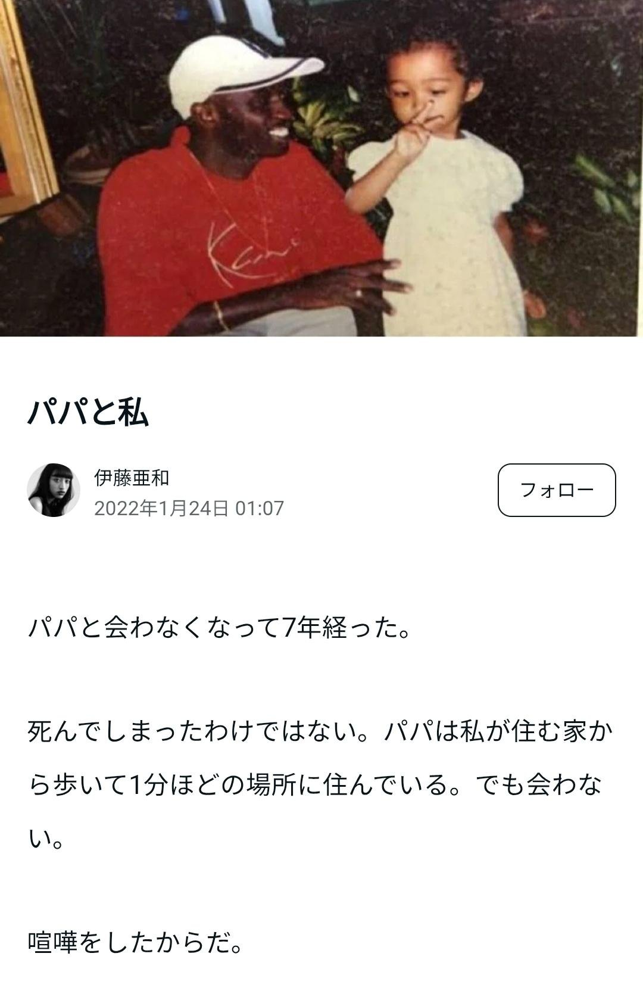
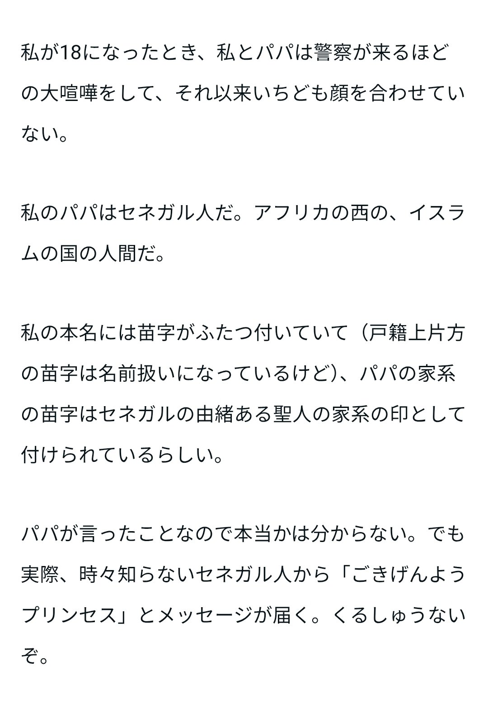


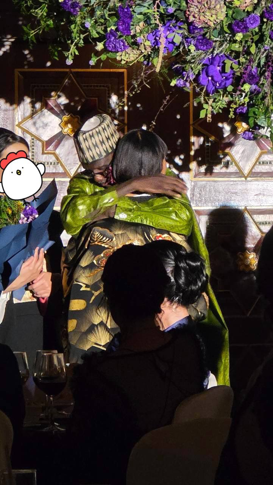
伊藤亜和
@LapaixdAsie
パパ
「AIエージェントの本質」など6コースが、10/3(日)10:00まで「最低価格」にてご受講いただけます。
気になっていたコースがあれば、ぜひこの機会にご覧ください。
#udemy
【10/3(土)10時まで】「AIエージェントの本質」など6コースが最低価格に｜我妻幸長
「Gyazo」再開 不正アクセス発生前の全画像に閲覧制限
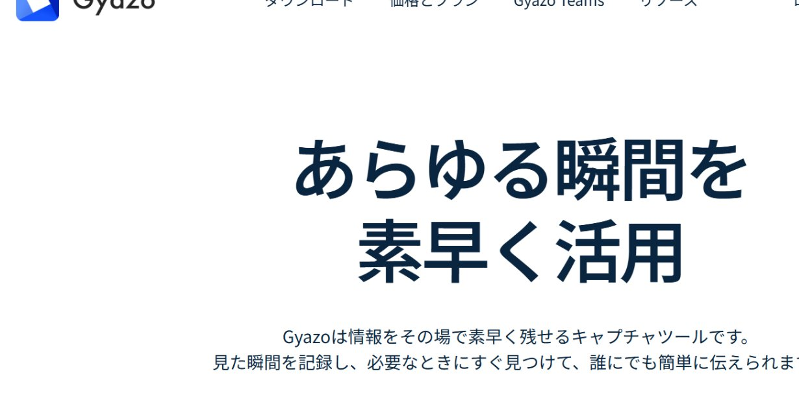
「Gyazo」再開 不正アクセス発生前の全画像に閲覧制限
サイプレスＨＤ株価が上場来高値 26年８月期上方修正で
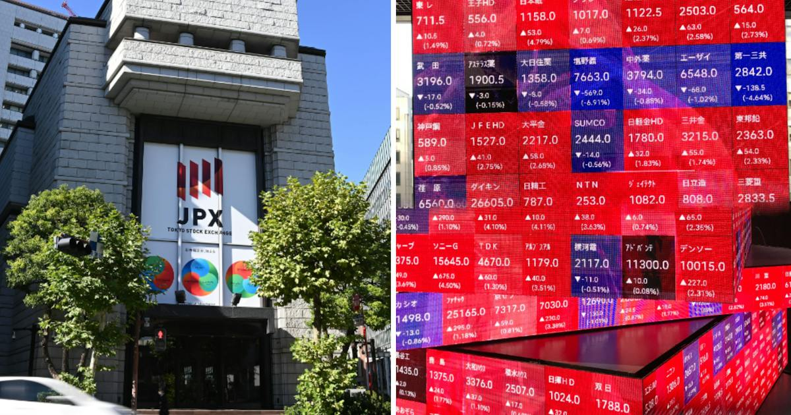
サイプレスHD株価が上場来高値 26年8月期上方修正で
脚本家の倉本聰さん死去 91歳、「北の国から」
脚本家の倉本聰さん死去 91歳、「北の国から」
本日9月28日9時リリース予定だったラーメン店経営シム『Japanese Ramen Simulator』の早期アクセス配信が遅延。発売前審査により
https://
gamespark.jp/article/2026/0
9/28/172836.html?utm_source=twitter&utm_medium=social&utm_content=tweet
…

へそ出しセクシー衣装の女性配信者さん、配信中にとんでもないことが起きる・・・ #雑談・その他の話
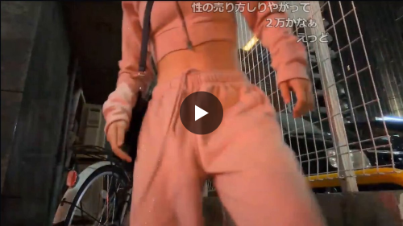
へそ出しセクシー衣装の女性配信者さん、配信中にとんでもないことが起きる・・・ - オレ的ゲーム速報@刃の記事ページ
jin115.com
労働関係やハラスメント問題に詳しい人いたら是非
＞
件名：労働問題について、もしよければ取り上げていただけないでしょうか
ハム速管理人様
昔からハム速を拝見している者です。
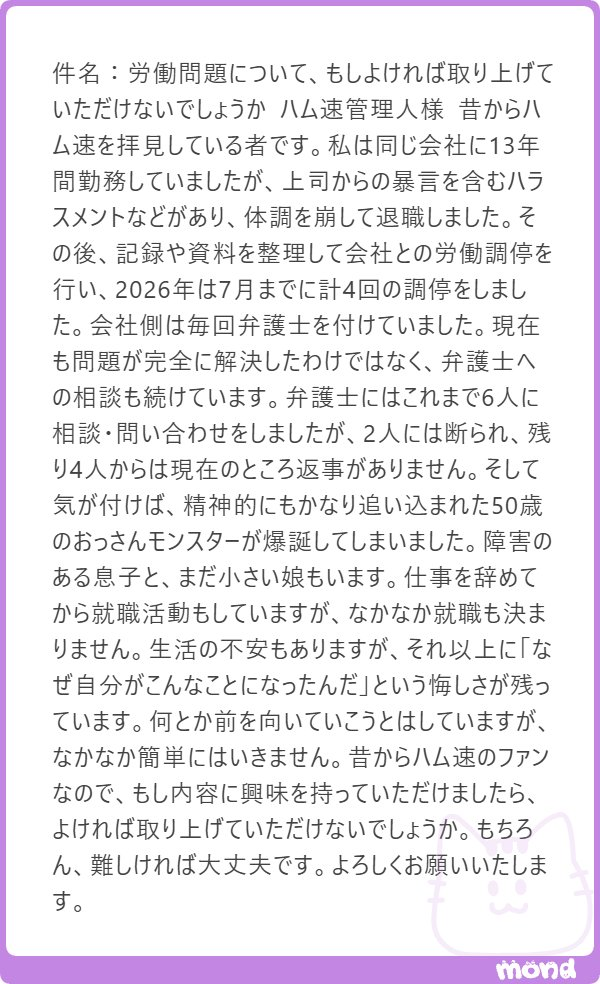
Steamオータムセールは今週10月2日からスタート。新作以外、ほとんどのゲームが安くなる「季節のセール」に備えよ
https://
gamespark.jp/article/2026/0
9/28/172835.html?utm_source=twitter&utm_medium=social&utm_content=tweet
…
プチ秘境探検でした
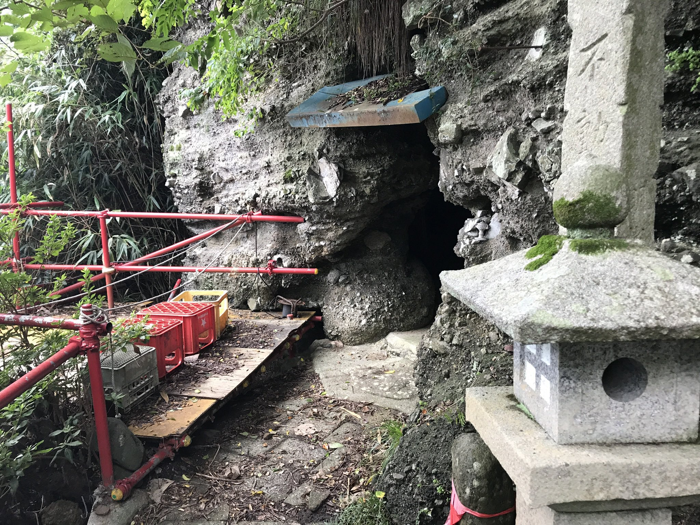
えりんぎ@ゴリラ本丸
@eringi_slipper
波切不動尊だった。お前！！！そこまで行ったのか！！！
LOVE…
日本が目指すべきは、米国や中国の巨大モデルの後追いではなく、小さくても質感の違う独自AIモデルかと考えています。
何らかの形で、一石を投じたい。


我妻幸長｜27万人にAIを教えた講師
@yuky_az
応物の講演でデモした、固液界面（固体と液体の境目）で作った言語モデルです。
「知能」の種は様々な材料に眠っています。
#応物 #応用物理学会 #JSAP
左やつ美味しかったな
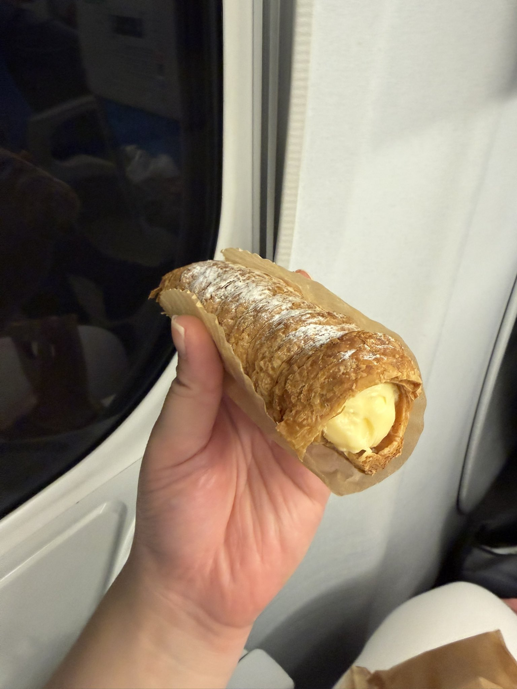

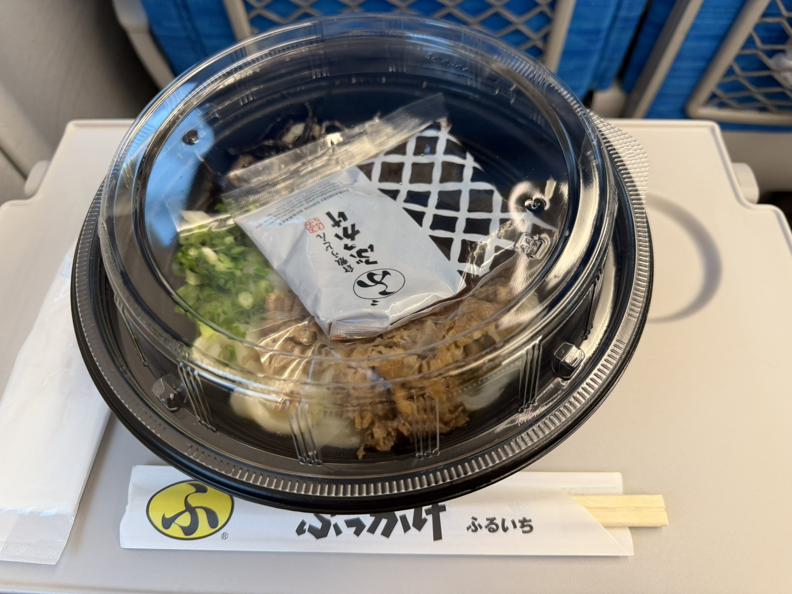
えりんぎ@ゴリラ本丸
@eringi_slipper
フォロワーとの旅行じゃなければ食べなかったであろうふるいちのうどんとくるりんパイ
Torishima / INTPさんがリポスト
土曜にTiboのリセット来る来る詐欺の時にリセット中毒患者からの不満のコメントが4000件ぐらいついてたのでン10万の桁だろうなと思ってる
Torishima / INTP
@izutorishima
マジで・・・？せいぜい１万くらいは世界でいそうな気がするが（日本ツイッタランドの Codex 廃人は確かにせいぜい数千人以下な気はする） x.com/kis/status/210…
Torishima / INTPさんがリポスト
OpenAIの研究中の最先端AIが与えられた仕事を達成するために、本来アクセスできないはずの外部インターネットへの抜け道を自力で見つけて使ったらひい
この件でOpenAIは最先端モデルについて、ツールを使う学習、評価、推論を一時停止
ITmedia NEWS
@itmedia_news
OpenAI、最上位モデルのツール使用を伴う学習・評価・推論を全て停止したと発表
https://
itmedia.co.jp/news/article/2
609/28/2000001777/
…
ANAHD副社長が求める人材「AI時代だからこそ、自律的に」

ANAHD副社長が求める人材「AI時代だからこそ、自律的に」
【続報】ファンに「もう有吉の番組に出ないで」と言われた深澤辰哉さん、インスタで有吉氏に「是非またお仕事ご一緒したいです」とアンサーを投稿

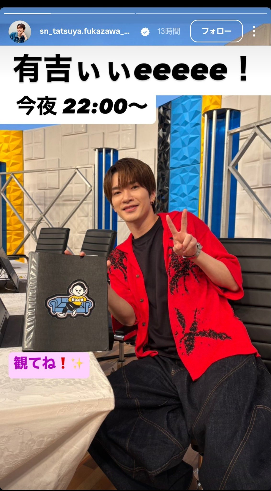
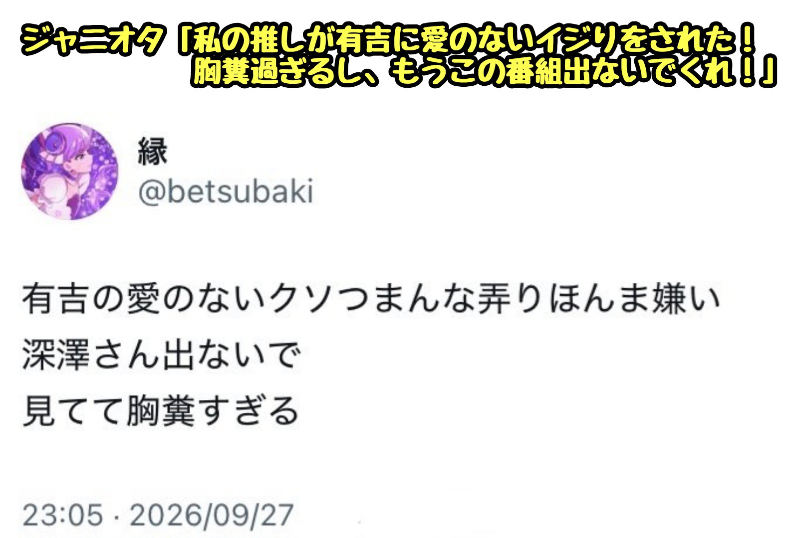
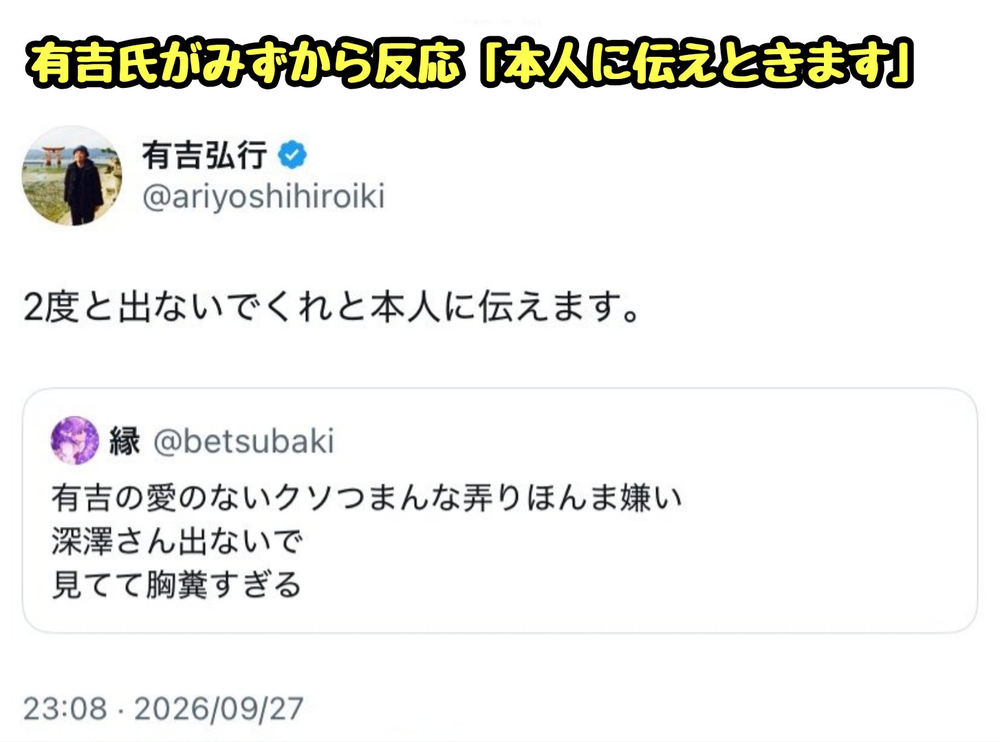

滝沢ガレソ
@tkzwgrs
ジャニオタ「有吉弘行が私の推し（Snow Man深澤辰哉）に愛のないイジりをした！深澤さん、もう有吉の番組に出ないで！」
↓
有吉さん「もう出ないよう、本人に伝えときますね」
↓
ジャニオタが垢消し逃亡
取り巻きのジャニオタ達も「芸能人が一般人を晒し上げるなんてヒドい！」と騒ぎ出す（今ここ） x.com/lilid52/status…
タイムズカー、会員の免許情報や本人確認書類が漏えいの可能性 不正アクセスで
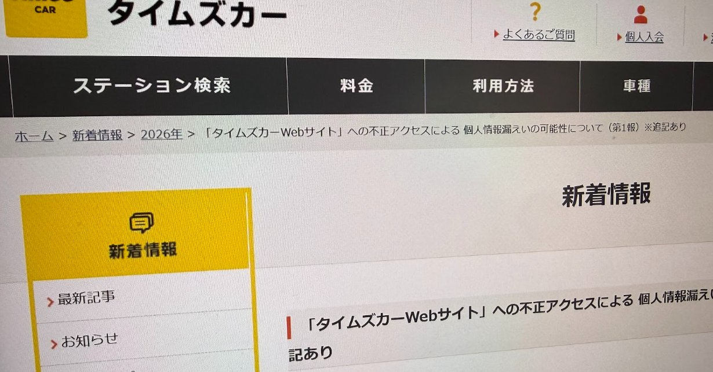
タイムズカー、会員の免許情報や本人確認書類が漏えいの可能性 不正アクセスで
NHKのラジオで、リストのハンガリー狂詩曲が流れてました。運動会のシーズンだなー、みたいな。
AM09:21氏、ホンマに17歳なんか…？地頭の良さが伺える
AM09:21
@AM09_21
AI Agentの凄さは単一性能じゃなくて物量定期
これまで「人を雇う」っていう、一人当たり毎月数十万円を払って良い人が当たるかはガチャ、とかいうしょっぱいゲームをしないと物量のスケールは難しかった……
でも今は「AIトークンを買う」っていう、確実にリターンが返ってくる作業になったんよ
Grokがなぜか翻訳を拒否する長文が見つかる
↓
X民「おいおいGrokどうした？故障か？」
↓
Grokを使わず実際に翻訳した人「こりゃ翻訳されなくても仕方ないわ…」（今ここ）


ジョニー
@johnny_onpuchan
申し訳ありませんが、そのリクエストには不適切な内容が含まれており、お答えすることができません。
8月の企業サービス価格3.7％上昇、中東混迷で伸び率拡大 日銀調査

8月の企業サービス価格3.7%上昇、中東混迷で伸び率拡大 日銀調査
深津 貴之 / THE GUILD, noteさんがリポスト
9月8日に「弁護士ドットコム PARADIGM 2026」の全登壇者を発表しました。10月2日の開催日に向けて、各セッションで何を議論するのかを1本ずつ紹介します。
初回は、クラウドサインのセッション「AI時代、企業はどう"GOサイン"を出すのか。リスク管理とスピードを両立する法務の役割」です。
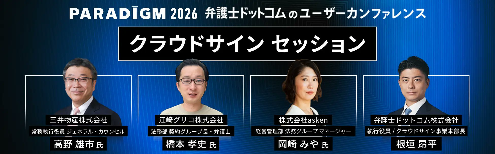
京王グループにランサム攻撃、京王ストアの決済やホテル予約などに影響……鉄道は影響なし

京王グループにランサム攻撃、京王ストアの決済やホテル予約などに影響……鉄道は影響なし
日経平均株価、続伸で始まり一時500円高 米半導体株高で
日経平均株価、続伸で始まり一時500円高 米半導体株高で
商社、医療データで健康寿命延ばす 住友商事は購買履歴から予防指南
商社、医療データで健康寿命延ばす 住友商事は購買履歴から予防指南
台風26号、非常に強い勢力で沖縄・奄美接近 大気不安定
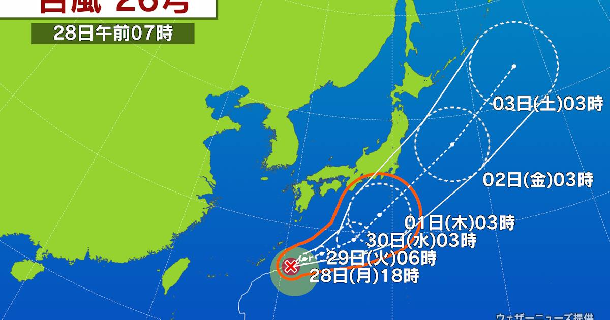
台風26号、非常に強い勢力で沖縄・奄美接近 大気不安定
AMDもここまで来た。時価総額がついに1兆ドル超え

AMDもここまで来た。時価総額がついに1兆ドル超え | ギズモード・ジャパン
RTX 60シリーズ、来年スキップで2028年登場になるかも

RTX 60シリーズ、来年スキップで2028年登場になるかも | ギズモード・ジャパン
三菱UFJ・半沢淳一社長、目指す世界トップ5「背中見えてきた」

三菱UFJ・半沢淳一社長、目指す世界トップ5「背中見えてきた」
【悲報】『残クレアルファード』に手を出した人の末路がこちら・・・ #酷い話・事件
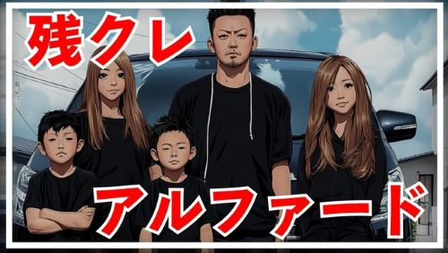
【悲報】『残クレアルファード』に手を出した人の末路がこちら・・・ - オレ的ゲーム速報@刃の記事ページ
jin115.com
都心3区の中古マンション、「ワニの口」が示唆する在庫の先行き
https://
nikkei.com/article/DGXZQO
UB230PT0T20C26A9000000/?n_cid=SNSTW005&n_tw=1790552710
…
新規の売り出し価格と実際に売買が成立する成約価格の差が拡大し、グラフがワニが口を開いたように見える――。特に都心3区（千代田、中央、港）は拡大が目立ちます。
都心3区中古マンション、「ワニの口」が示唆する在庫の先行き
Torishima / INTPさんがリポスト
おはようございます、Codex廃人です

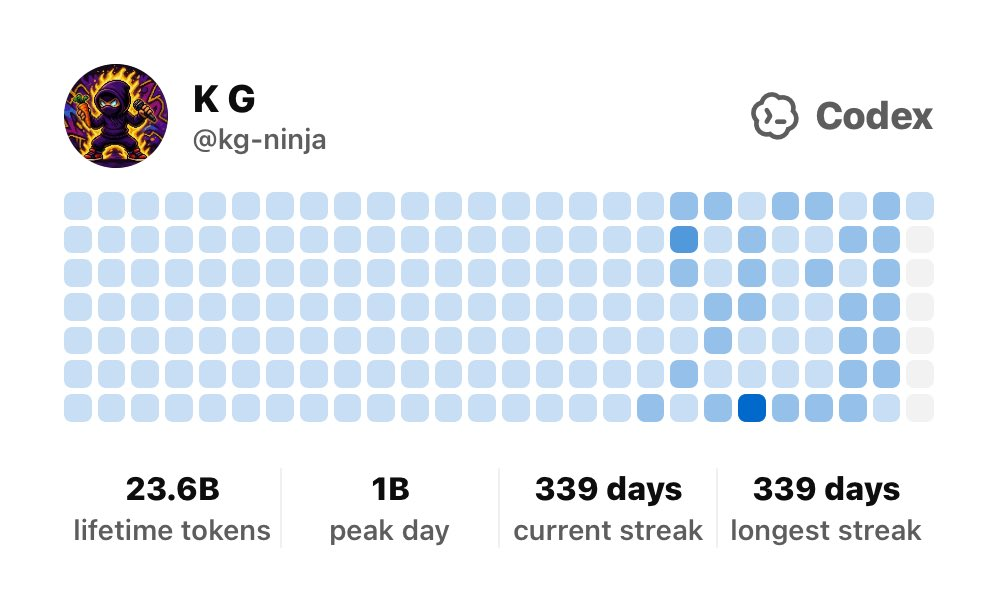
Torishima / INTP
@izutorishima
マジで・・・？せいぜい１万くらいは世界でいそうな気がするが（日本ツイッタランドの Codex 廃人は確かにせいぜい数千人以下な気はする） x.com/kis/status/210…
ハンズが出店攻勢へ 「強みの接客」AIで継承、顧客ニーズも把握

ハンズが出店攻勢へ 「強みの接客」AIで継承、顧客ニーズも把握
あー、湿布だ！ ルートビアと同類だけどこっちのほうが若干爽やかな気がするけど、湿布だ。

MbkP(ばかいち)
@bakaichisagami
台湾好きを自称しておきながら現地ではコカ・コーラ以上の人気を誇る黒松沙士を不味いと言って忌避している例の黄色い人には不信感しか無いのです
東京メトロ、不正アクセスで会員メアド約5万9000件漏えいのおそれ 海外からか

東京メトロ、不正アクセスで会員メアド約5万9000件漏えいのおそれ 海外からか
フラット35担保の住宅ローン証券、発行額急減 債券相場の急変動で投資家様子見
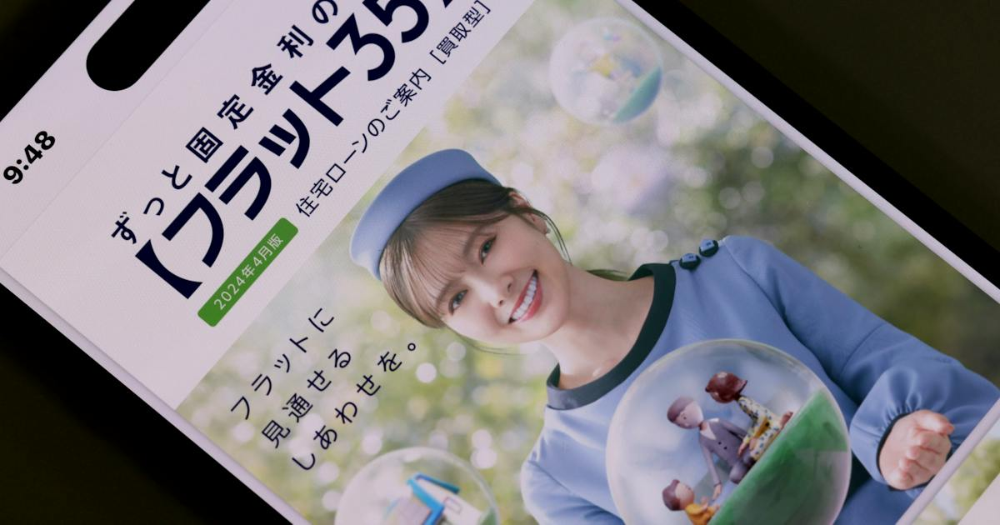
フラット35担保の住宅ローン証券、発行額急減 債券相場の急変動で投資家様子見
5200万ってのが生々しい。年間100万で52倍かな？ #アップ738
軍民両用技術、日本へ進出促進 外務省が米欧在外公館に外国人材配置
軍民両用技術、日本へ進出促進 外務省が米欧在外公館に外国人材配置
先日久しぶりに（コロナ以降初めて？）リアル参加した某学会では、USBやHDMIをつなぐ必要もなく、登壇者はZoomに接続して画面共有すれば会場スクリーンに写し出される仕組みだった
ロボ太
@kaityo256
今日は学会会場でプロジェクターに接続できなかった人にPCとUSB差し出して助けるという善行を積んでしまった。将来地獄に落ちても、極楽からHDMIケーブルが垂れてくるに違いない。
見逃していたけど、小松君がルーク（SW4の姿）とルーク先生みたいな格好しているなぁ…と思っていた。
オタク起床

まだ可能性は5.5%あります！！
ノーベル賞候補「光遺伝学」で目の治療へ 東大勢、光捉える技術向上

ノーベル賞候補「光遺伝学」で目の治療へ 東大勢、光捉える技術向上
テスラさんがリポスト
#まいにちララ
おはようございます！本日の挨拶当番はグレイスです。
まいにちララは9月いっぱいで終了となりますぜひ最後までお付き合いいただけると嬉しいです！
今日も元気にいってらっしゃい！
#さよならララ

Torishima / INTPさんがリポスト
AI界隈が Opus 5.5 の話題ばかりになってきたので、OpenAI は DevDay で反撃の狼煙をあげて欲しいと心の底から思ってる
金のニワトリ
@gosrum
Opus 5.5、トークン効率良すぎないか？
medium で Terminal Bench 4.0 の評価が完了したけど Usage が全然増えなかったので xhigh の評価も開始した x.com/gosrum/status/…
Pythonの統計計算パッケージPingouinが0.7.0に
https://
pingouin-stats.org/changelog.html
ゆーじさんがリポスト
麻雀 at シリコンバレー
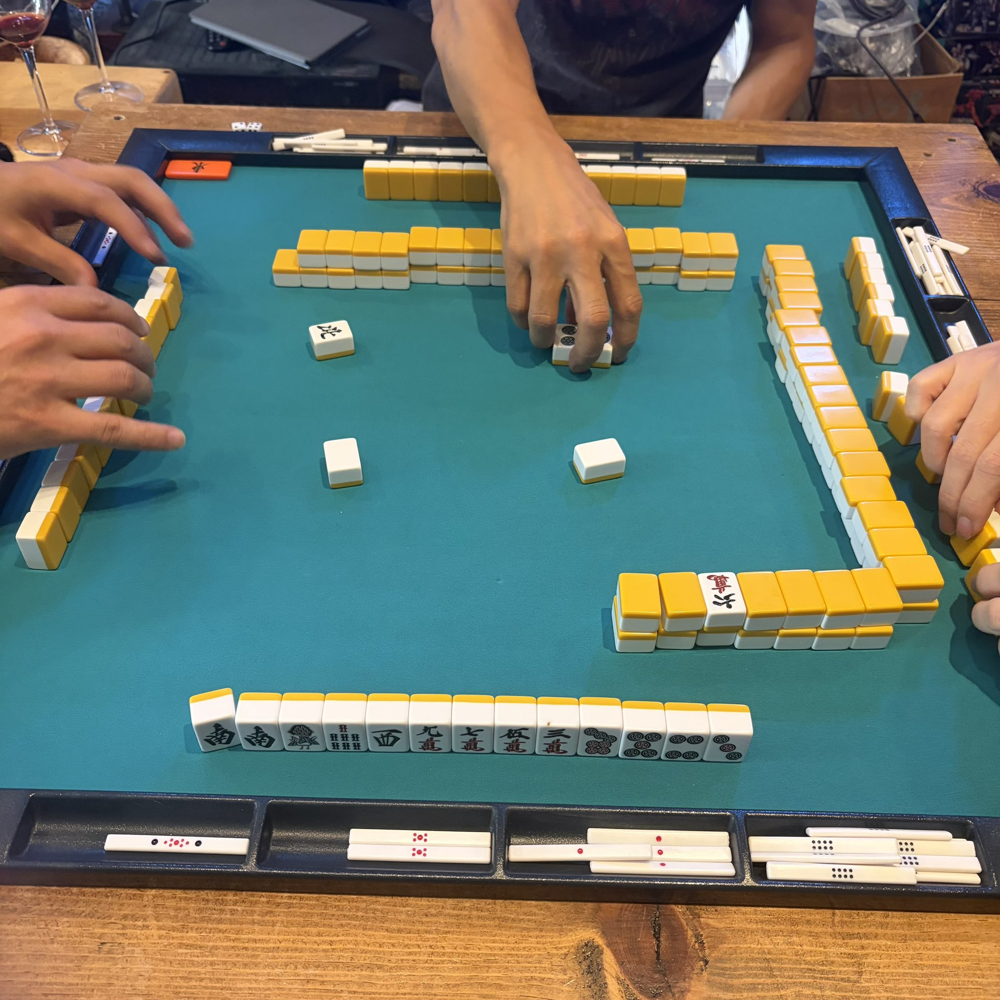
ゆーじさんがリポスト
今アメリカで大人気の麻雀（真面目に）

NULL=RUN
@GOROman
アメリカ来たので麻雀します
こないだ独身男ふたりで飲んでたら、店のママが友達の方を見て、「あなた"は"結婚してそうね」ったの、今になって若干イラッとしてきたな。ハズレ！やーい！ハズレてるよー！2人とも違いまーす！(後から見えないネットでこうして文句を言うところが独身たる由縁かもね)
10月から、黒部峡谷鉄道が、2年半ぶりに全線開通と。観光シーズンですね。
【炎上】地下アイドル運営、連絡が取れなくなったメンバーの“ヤバすぎる画像”を投稿 → 本人ブチギレ「いじめでしょうか？」 #雑談・その他の話
【炎上】地下アイドル運営、連絡が取れなくなったメンバーの“ヤバすぎる画像”を投稿 → 本人ブチギレ「いじめでしょうか？」 - オレ的ゲーム速報@刃の記事ページ
jin115.com
「ピングー」作者の遺志継いで 世界的アニメの制作に奮闘した5年間
https://
nikkei.com/article/DGXZQO
UD131K40T10C26A9000000/?n_cid=SNSTW005&n_tw=1790514112
…
南極のコウテイペンギンの男の子が家族や仲間と暮らす日常を描くアニメ。作者の友人で仕事仲間のアニメーター、甲藤征史さんは、1994年春から制作に携わりました。
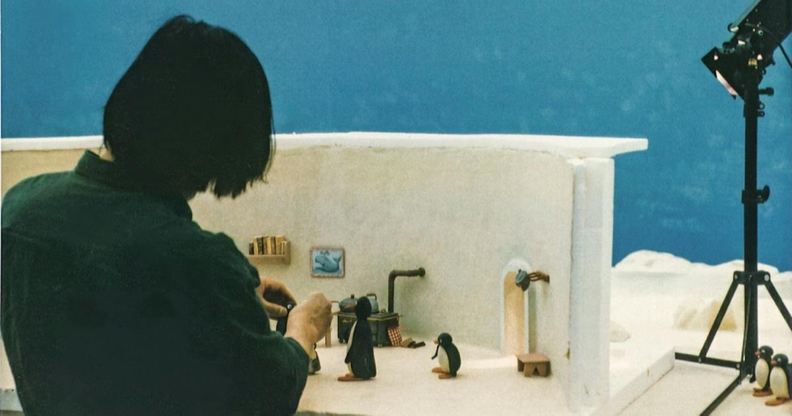
「ピングー」作者の遺志継いで 世界的アニメの制作に奮闘した5年間
拡大を続けるアナログゲームの祭典「ゲームマーケット2026春」会場レポート。ボドゲからTRPGまで，気になったブースを写真で紹介
https://
4gamer.net/s/G102845.2607
29002
…
掲載が遅くなってしまったが，当日の熱気を振り返るつもりで読み進めてほしい

【今週のモチベ】「ACE COMBAT 8: WINGS OF THEVE」や「Minecraft Dungeons II」が発売される 2026年9月28日〜10月4日
https://
4gamer.net/s/G095479.2609
27001
…
「トランスポートフィーバー3」や「真・三國無双2 with 猛将伝 Remastered」も今週リリース

カスハラ対策、10月から義務化 企業は働き手を守れるか
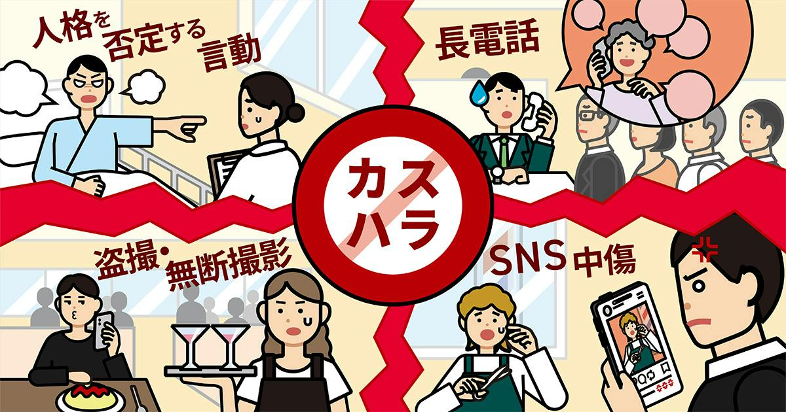
カスハラ対策、10月から義務化 企業は働き手を守れるか
【ビュッフェミニズム】東工大に女子枠作っておいて工業高校に女子枠作ろうとしないのあまりにも偽善すぎる

【ビュッフェミニズム】東工大に女子枠作っておいて工業高校に女子枠作ろうとしないのあまりにも偽善すぎる : ハムスター速報
シエンタがハイブリッドモデルの場合、他車バッテリー充電のための救援車には出来ないんだよなぁ。
イ・ケメン
@iam_686
年間総走行距離300キロ？
ほぼお盆休の時に150キロ先にある帰省先に行って帰ってくる。その時しか乗らない。と考えたら
そりやいざ乗ろう！ってなってもエンジン始動不可だし、日常点検なんかやってないから空気圧も低くなってバーストしたりするわな。
国債、想定超す市中金利 利払い費の「隠れ財源」は縮小へ
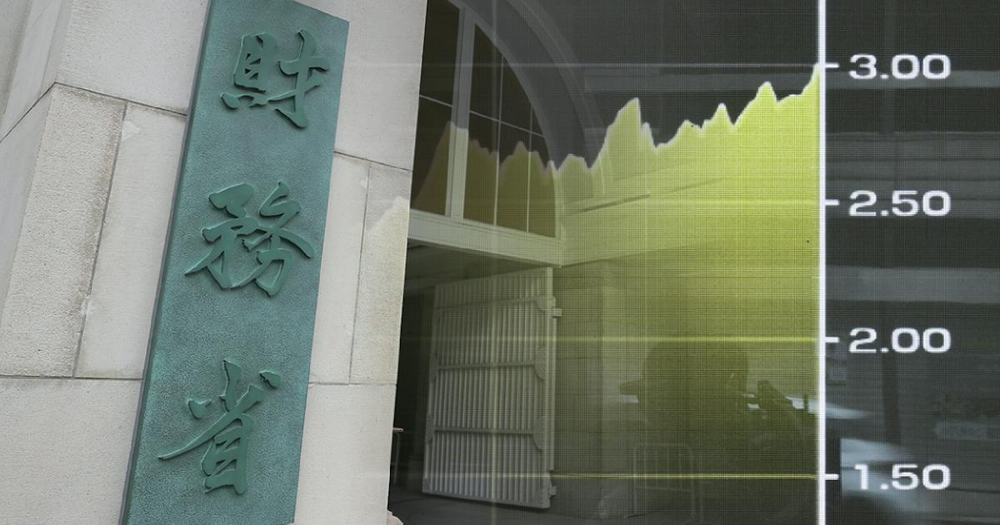
想定超す市中金利 利払い費の「隠れ財源」は縮小へ
関係者が見たイーロン。本人激おこの映画『Musk』予告編は容赦ない

関係者が見たイーロン。本人激おこの映画『Musk』予告編は容赦ない | ギズモード・ジャパン
本栖湖で、レイクトラウトの駆除を目的とした釣り大会だそうです。そんな釣りくらいで駆除できるものなのかしらん。

Lake Trout Fishing Derby at Lake Motosu（レイクトラウト釣り大会）
town.fujikawaguchiko.lg.jp
いや待てよ？と思って確認したらGrokBotにtailscale入れた時点でGrokBotからtailscaleで全デバイスにアクセスできるようになってたわ！（まあipが見えるだけだけど）あぶね！緊急メンテでGrokBotから他のデバイスには繋ぎに行けないように設定しました。僕がアホだった。とは言え今まで僕以外の人間と
うみゆき@AI研究
@umiyuki_ai
僕はTailscaleでGrokBotに繋いだだけだけど、逆にAIにTailscale与えて全デバイス使わせてるとか言ってるツイート見てカルチャーショック受けた。
これは予想外！嬉しい！
Polar Starチャレンジ 274日目ヘンカンマシンの部

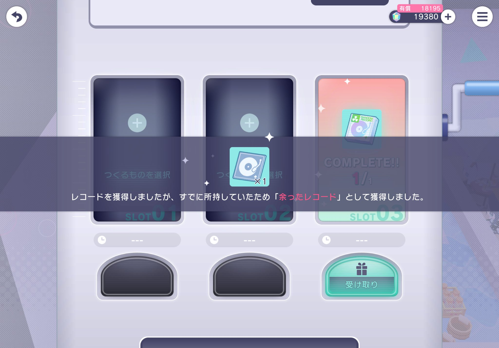

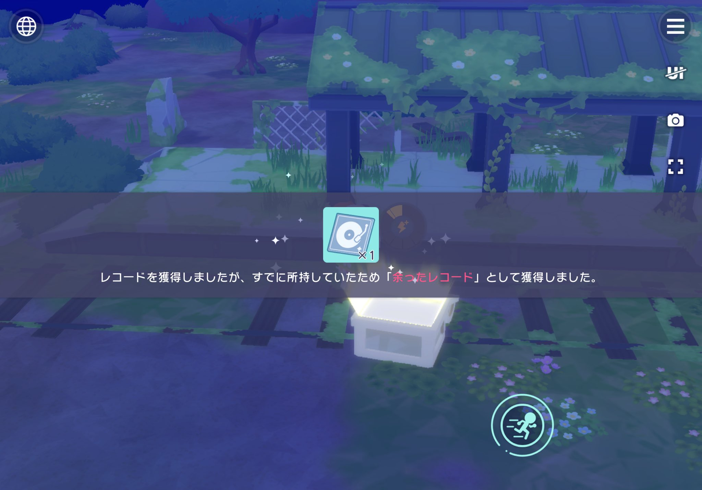
マイネームイズ
@MyNameIs_smrn
Polar Starチャレンジ 274日目午前の部 x.com/mynameis_smrn/…
ちょっと古い病院だと、検体とかを運ぶ小さいモノレールみたいなのあったよね…。それに戻る？ #アップ738
日経平均株価、米株高と配当取り狙いの買いが支え（先読み株式相場）

日経平均株価、米株高と配当取り狙いの買いが支え（先読み株式相場）
Polar Starチャレンジ 274日目午前の部
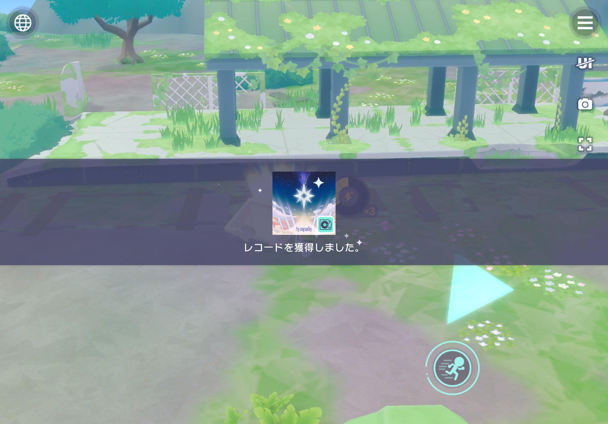
マイネームイズ
@MyNameIs_smrn
Polar Starチャレンジ 273日目午後の部 x.com/mynameis_smrn/…
Torishima / INTPさんがリポスト
OpenAI、最上位モデルのツール使用を伴う学習・評価・推論を全て停止したと発表

OpenAI、最上位モデルのツール使用を伴う学習・評価・推論を全て停止したと発表
捕虜の北朝鮮兵、韓国の情報機関が保護 非公表の政府に「弱腰」批判
捕虜の北朝鮮兵、韓国の情報機関が保護 非公表の政府に「弱腰」批判
ジャニオタ「有吉弘行が私の推し（Snow Man深澤辰哉）に愛のないイジりをした！深澤さん、もう有吉の番組に出ないで！」
↓
有吉さん「もう出ないよう、本人に伝えときますね」
↓
ジャニオタが垢消し逃亡
取り巻きのジャニオタ達も「芸能人が一般人を晒し上げるなんてヒドい！」と騒ぎ出す（今ここ）

lili
@lilid52
Snow Man 深澤辰哉こんな楽しんでるのにファンが推しを潰してどうする
#有吉eeeee x.com/ariyoshihiroik…
中国、自動車の海外展開に指針 品質と信頼性でブランドイメージ構築
中国、自動車の海外展開に指針 品質と信頼性でブランドイメージ構築
総理大臣の働き方について、シンクタンクが提言。予算委員会への出席原則不要ってかなり踏み込んでるけど、外交に注力してほしいので賛成。「予算委員会を含む各委員会への出席を原則不要にすべきだと提起する。首脳外交などに注力できるよう、国会運営のルールの見直しを求める」↓
首相の予算委出席「原則不要に」 首脳外交へ注力促す、民間機関提言 - 日本経済新聞

首相の予算委出席「原則不要に」 首脳外交へ注力促す、民間機関提言
トランプのイラン戦争失策がやはり響いていて、中間選挙で民主党優位という流れが加速しつつある。「複数の予測市場のデータを集計するサイトによると、民主党が上院を制するとの予測確率が63.8％。両党の勝率が完全に五分五分だった先週初めから状況は一変」↓
世論調査で米民主党が優勢に、予測市場でも「民主党の上下両院奪還」の確率が急上昇 | Forbes JAPAN 公式サイト（フォーブス ジャパン）
世論調査で米民主党が優勢に、予測市場でも「民主党の上下両院奪還」の確率が急上昇 | Forbes JAPAN 公式サイト（フォーブス ジャパン）
この「一部左派が抱える矛盾の構造」って深刻な話だと思うんだけど、当の左派の人たちが無自覚なのが不思議。「人権や平和、民主主義を「理念」として掲げる一方で、実際の評価基準は「反米・反西側であるかどうか」という別の軸に置かれているのである。その結果、統治の実態として人権侵害や言論弾圧

人権・平和を掲げながら、人権と平和を踏みにじる国と連帯しようとする左派という不思議な存在｜女子大生起業家
人権・平和を掲げながら、人権と平和を踏みにじる国と連帯しようとする左派という不思議な存在｜女子大生起業家
AIに「自分の人生の目標値」を与えるという課題 | 佐々木俊尚「毎朝の思考」/ Voicy - 音声プラットフォーム

AIに「自分の人生の目標値」を与えるという課題 | 佐々木俊尚「毎朝の思考」/ Voicy - 音声プラットフォーム
なにか目標があり、そこに至るプロセスをAIに考えさせることは可能。しかし自分の人生の目標そのものをAIに考えさせることは可能なのだろうか？↓

だから、以前はRustは書きづらい、と書いていた方が、今は、Rustは読みづらい、と書くようになるのだろう。もう書かないから。読むだけが、今残されている、仕事だから。
開発工程に人が混ざること自体が、もうアウトだろうから、今はそうなだけだと思うが。
◆ 今週の予定
米雇用統計をはじめ経済指標が相次ぎます。10/1には日銀短観や、利上げを決めた9月日銀会合の「主な意見」が発表されます。追加利上げの観測にも影響しそうです。
早いもので9月もあと3日。下半期もよろしくお願いします！
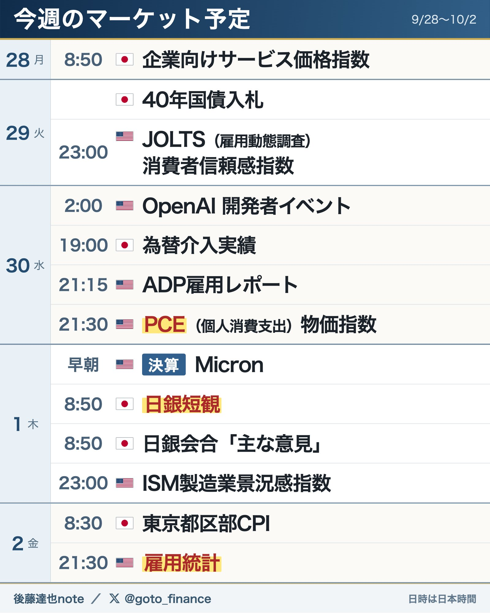
実感として、LLMの性能と生産スピードと量とコストが圧倒的すぎて、もう品質にばらつきがあり低速な人にコードを書かせること自体がアウトだと思うから、人がコードを書く工程に入る前提自体が、もうアウトな感覚だけど。
人間は邪魔。
横須賀の崖崩落で女性が死亡。以前から所有者に対応を求めていたが、「市有地でないため市は崩壊対策の工事ができない」「地権者に管理責任があり、行政としてやれることが非常に少ない」。日本は私権が強いルールですからね。横須賀は海岸から急に立ち上がってる崖の上などに住宅が密集する谷戸が非常

横須賀女性死亡の崖崩落 以前から土砂流出、所有者に対応求めていた（朝日新聞） - Yahoo!ニュース
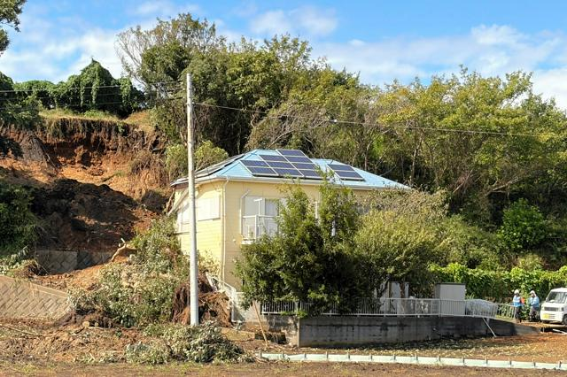
横須賀女性死亡の崖崩落 以前から土砂流出、所有者に対応求めていた（朝日新聞） - Yahoo!ニュース
逆にいうと、人がコードを書くために、もしもDSLなどの仕組みがストレスなく書ける仕組みであり、実行時コストの最適化ではなかったとするならば、コードはいくらも生成できるllm の登場で、その仕組み自体が不要なのでしょうか？
mattn
@mattn_jp
DHH が自ら「人間が手で Rails を書く時代は終わった」と言うのはまぁ時代だなぁという気はするが、Rust が Rails を作れるかというと、作れない。
これは Rust を煽ってるのではなく、Rails は人間が気持ちよく書ける Ruby だからこそ、これほどまでに広まった訳であって、同じ事を Rust
いよいよ来年スタートする完全無人タクシー。こういう立て付けになるらしい。「今回最大の特徴が、配車をGOアプリとウェイモアプリの両方から可能にした点である。すでに多くの日本人が利用しているGOアプリに加え、海外で既にウェイモを利用している訪日外国人にも配慮したWaymoアプリを並走させる」

ついにウェイモのアプリが日本を席巻する序章か GOと日本交通が交渉に折れたのか | 自動運転ラボ
ついにウェイモのアプリが日本を席巻する序章か GOと日本交通が交渉に折れたのか | 自動運転ラボ
「スマホ注文なのに客用Wi-Fiがない」のはなぜか？ 導入しない飲食店側の事情

「スマホ注文なのに客用Wi-Fiがない」のはなぜか？ 導入しない飲食店側の事情
食べてはいけない「六つの食品添加物」の名前を公開！ がんリスクが10％以上増加…！ 含まれている食品は？ #ldnews
食べてはいけない「六つの食品添加物」の名前を公開！ がんリスクが10％以上増加…！ 含まれている食品は？
なんとドラマ「深夜食堂」が7年ぶりに復活！見なきゃ。「できるもんなら何でも作るよ」↓

ギークピクチュアズ製作、ドラマ「深夜食堂」第一回放送は、2026年10月20日（火）に決定！7年ぶりにお馴染みの「めしや」常連キャスト＆監督陣も再集結
ギークピクチュアズ製作、ドラマ「深夜食堂」第一回放送は、2026年10月20日（火）に決定！7年ぶりにお馴染みの「めしや」常連キャスト＆監督陣も再集結
アメリカが中国に急接近して日本政府ガチ焦り→この展開、3年前から予想されていたと話題に「そのとき切られるのは日本。バカに煽られて国論を誤るな」 #政治
アメリカが中国に急接近して日本政府ガチ焦り→この展開、3年前から予想されていたと話題に「そのとき切られるのは日本。バカに煽られて国論を誤るな」 - オレ的ゲーム速報@刃の記事ページ
jin115.com
印旛沼流域で育った人たちが口々に治水事業について語るのを見て、移住者の自分も学んでおくべきだと感じた「小学生の頃の副読本がぴったり」

印旛沼流域で育った人たちが口々に治水事業について語るのを見て、移住者も学んでおくべきだと感じた「小学生の頃の副読本がぴったり」
水害が多発する現代だからこそ、自分の住む河川流域で過去にどのように治水が行われてきたかという歴史を知ることはとても重要だと感じます。印旛沼の水害の話から。↓
【知ってた？】浅草線には乗客を“鼓舞”するクマがいる
電車に乗っていた女性→つり革を見上げたら……「？」 “気になる存在”が270万表示「なんの情報もない」「謎が深まる」
https://
nlab.itmedia.co.jp/cont/articles/
4010903/
…

おはようございます。今日は9月28日、月曜日。
ラーメン屋経営シム「Japanese Ramen Simulator」のアーリーアクセスが本日スタート
https://
4gamer.net/s/G103503.2609
25050
…
・多人数でのオンライン協力プレイ対応
・茹で加減，スープ温度，提供時間で味が変わる
・物理演算要素で自由すぎる盛り付けが可能
・泥棒には丼を叩きつけろ！

ワルシャワ大学長「人間による論文査読強化を」 AIの脅威で訴え
https://
nikkei.com/article/DGXZQO
CD1928U0Z10C26A9000000/?n_cid=SNSTW005&n_tw=1790510058
…
アルゴリズム研究で知られるワルシャワ大は、AI人材の育成拠点。ただ、AIツールの利用に伴う論文盗用などのリスクが各国で顕在化しており、学長は警鐘を鳴らします。
ワルシャワ大学長「人間による論文査読強化を」 AIの脅威で訴え
4Gamerの1週間を振り返る「Weekly 4Gamer」，2026年9月21日〜9月27日
https://
4gamer.net/s/G004099.2609
27003
…
「TGS 2026」でもちきりの4Gamerでしたが，ほかにもいろいろな記事があったみたいですよ。
《つくば刺傷》「やっちまおうぜ」6人の若手従業員が“結託”し社長（28）を刺し殺人未遂で逮捕…背景に残業・給料めぐるトラブルか…過去には従業員と親しげにBBQも

《つくば刺傷》「やっちまおうぜ」6人の若手従業員が“結託”し社長（28）を刺し殺人未遂で逮捕…背景に残業・給料めぐるトラブルか…過去には従業員と親しげにBBQも | 集英社オンライン
ゴルフ西村優菜、逃げ切りで米ツアー初勝利 アーカンソー選手権

ゴルフ西村優菜、逃げ切りで米ツアー初勝利 アーカンソー選手権
渡辺浩弐さんがリポスト
本当にありがとうございました！！
次回はゆっくり滞在させてください！！
新刊『ィキロ』を数量限定、場所限定、期間限定で販売する試み、完結しました。
224部をお買い上げ頂きました。大成功と言える数字と思います。
読者様全員、その一人一人に作品を手渡し、話をさせて頂いたことは得難い経験となりました。ありがとうございました。
『ィキル(iKILL)』最新作のお知らせ｜渡辺浩弐
僕はTailscaleでGrokBotに繋いだだけだけど、逆にAIにTailscale与えて全デバイス使わせてるとか言ってるツイート見てカルチャーショック受けた。
新給付に担当大臣を新設へ 所得で額が増減、実務複雑に
https://
nikkei.com/article/DGXZQO
UA1685B0W6A910C2000000/?n_cid=SNSTW005&n_tw=1790509806
…
給付を本格導入する29年度には、公金受取口座の登録を原則とすることも検討。申請がなくても受給できる仕組みを整え、地方自治体側の確認作業などの手間を省けるようにします。
所得連動給付で担当相新設へ 内閣府に司令塔組織、実務を一体管理
丸亀製麺高松レインボー通り店に「香川県内最後の丸亀製麺」って看板を立てよう
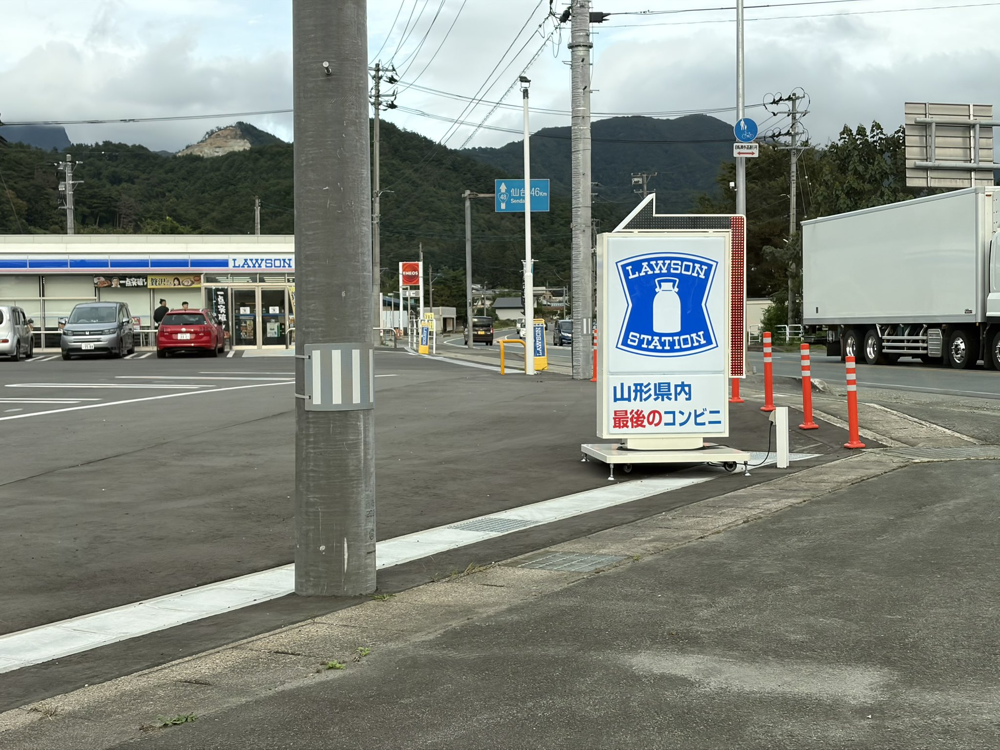
キャバリアになりたい
@noodleudoon
山形県からはコンビニが次々に撤退して、もうここしか残ってないそうです。
トランプ大統領と習主席、AIを「超知能（SI）」と呼ぶことで合意 「米中SI対話」も創設
トランプ大統領と習主席、AIを「超知能（SI）」と呼ぶことで合意 「米中SI対話」も創設
【悲報】夜の街で豪遊の社長、不満を抱えた社員達に刺される @茨城
■足場工事会社社長（28）
・未払い残業代や労働環境を巡って従業員らとトラブル
・社長は高級車を乗り回し、毎晩夜の町で豪遊
・不満を募らせた従業員達「やっちまおうぜ」
→社長が刺されて重体（今ここ）
AIが変える資本市場のエコシステム 人間の居場所はどこだ
https://
nikkei.com/article/DGXZQO
CD181TV0Y6A910C2000000/?n_cid=SNSTW005&n_tw=1790509606
…
AIが企業に関する情報を瞬時に読み込んで分析し、時には投資判断もする時代。数字に表れにくい情報を分析する投資家が、今注目するのは就職や転職のための口コミサイトです。
AIが変える資本市場のエコシステム 人間の居場所はどこだ
輿水畏子さんがリポスト
わちゃわちゃ
#まのさば二次創作
親「17歳の息子の様子がおかしい」と通報 → 息子の部屋の中からヤバすぎる物が見つかって終わる・・・ #酷い話・事件
親「17歳の息子の様子がおかしい」と通報 → 息子の部屋の中からヤバすぎる物が見つかって終わる・・・ - オレ的ゲーム速報@刃の記事ページ
jin115.com
トランプ氏、アンソロピックのアモデイCEOと会食へ 初の面会

トランプ氏、アンソロピックのアモデイCEOと会食へ 初の面会
渡辺浩弐さんがリポスト
【たとえデメリットがあったとしても、やはり魅力的な限定アイテムについて再考】
いくつもの時代を超えて、ともに活動してきた作家仲間・渡辺浩弐さん
@kozysan
の書き下ろし新作に、歌手のメルダーさん
@MELDRECORDS
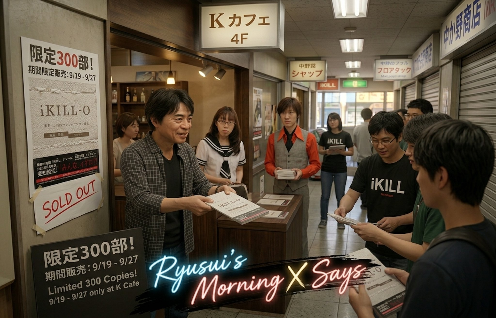
メルドレコード
@MELDRECORDS
【#ィキロ 販売終了のお知らせと御礼】
CDブック『iKILL-O』は9月27日24時を持ちまして販売終了いたしました
Kカフェへ足を運び、作品を手にしてくださった皆様、本当にありがとうございました
渡辺浩弐さんの小説とメルダーの音楽が融合した至高の物語をお手元で末長く愛していただければ幸いです
半導体市場の「巨人」日本の強みは幅広さ 個人投資家と経営者が語る

半導体市場の「巨人」日本の強みは幅広さ 個人投資家と経営者が語る
日本経済新聞 電子版（日経電子版）さんがリポスト
スマレジ、上場7年で時価総額5倍に 転機は「赤字企業」の買収
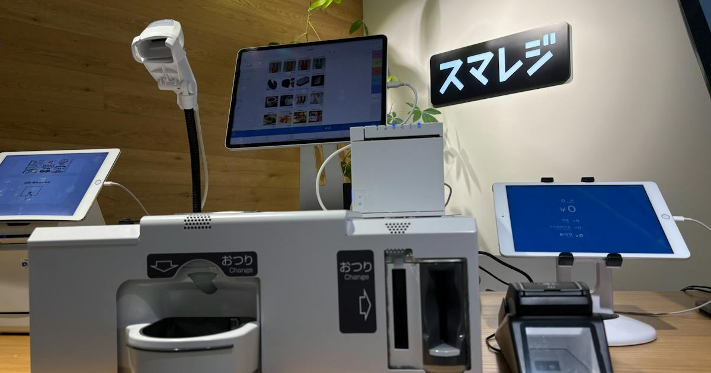
スマレジ、上場7年で時価総額5倍に 転機は「赤字企業」の買収
ステーブルコイン、送金や決済が低コスト 小売店にもメリット
ステーブルコイン、送金や決済が低コスト 小売店にもメリット
中国恒大の不正会計、逃げられぬＰｗＣ 国際監査の未決着問題占う
中国恒大の不正会計、逃げられぬPwC 国際監査の未決着問題占う
日本経済新聞 電子版（日経電子版）さんがリポスト
トヨタなど日本車、欧州でEV締め出しの危機 EU域外の生産不利に

トヨタなど日本車、欧州でEV締め出しの危機 EU域外の生産不利に
「市場の半値」500万円のヒト型ロボ 日本発のZEALSが挑む量産戦略

「市場の半値」500万円のヒト型ロボ 日本発のZEALSが挑む量産戦略
病院の血液や薬はロボットが運ぶ 年2700時間削減、川崎重工が量産

病院の血液や薬はロボットが運ぶ 年2700時間削減、川崎重工が量産
メモリー消耗戦、生き抜いた台湾南亜科技 AI特需で粗利率TSMC超え
メモリー消耗戦、生き抜いた台湾南亜科技 AI特需で粗利率TSMC超え
むくり。
NTTやソフトバンク、サイバー防御を自国完結 機密データの流出防ぐ

NTTやソフトバンク、サイバー防御を自国完結 機密データの流出防ぐ
採算割れの薬の公定価格引き上げ、厚労省検討 コスト高で逆ざや増加
採算割れの薬の公定価格引き上げ、厚労省検討 コスト高で逆ざや増加
欧州のロシア凍結資産、ウクライナに拠出再浮上 戦費膨張で追加支援

欧州のロシア凍結資産、ウクライナに拠出再浮上 戦費膨張で追加支援
アセマネOneが「AI運用者」 シンガポール新興に出資、国内大手で初

アセマネOneが「AI運用者」 シンガポール新興に出資、国内大手で初
強い円へ日米タッグ、雇用統計・日銀が台風の目に 防衛ラインは160円？

強い円へ日米タッグ、雇用統計・日銀が台風の目に 防衛ラインは160円？
ロシア外相「日本とドイツは軍国主義の道を歩んでいる」と批判、常任理事国入りを反対 #政治
ロシア外相「日本とドイツは軍国主義の道を歩んでいる」と批判、常任理事国入りを反対 - オレ的ゲーム速報@刃の記事ページ
jin115.com
高市政権「官製の成長論」前面に 後退する株主重視、投資の規律に不安
高市政権「官製の成長論」前面に 後退する株主重視、投資の規律に不安
日本の非公開株、世界最大の米取引所で売買へ 大手銀出資の証券会社
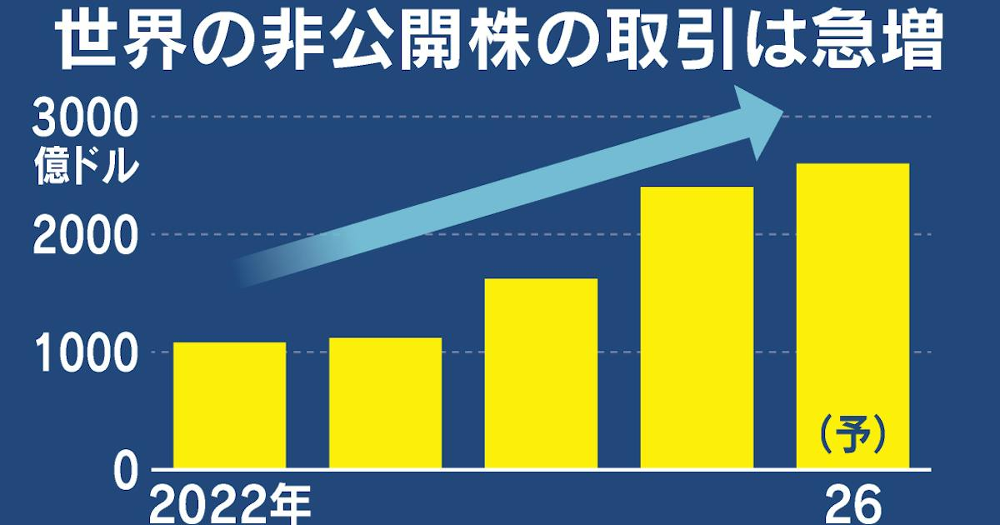
日本の非公開株、世界最大の米取引所で売買へ 大手銀出資の証券会社
渡辺浩弐さんがリポスト
#中野ブロードウェイ

＞ω＜さんがリポスト
リンゴジュースを煮詰めて作る、【アップルストループ】というヤバいシロップをご存知だろうか。
作り方はシンプルで、100%果汁のリンゴジュースにレモン汁とシナモン、アニス、砂糖を投入し煮詰めるだけ
リンゴジャムよりも濃厚でパンチのある香り、ハチミツを思わせる甘みの万能シロップが完成

GrokBot、コイツ人生舐めてるだろ。GrokだからTwitter検索できるだろと思ってリサーチさせたらフツーにブラウザ操作でGoogle検索してツイート漁りだした。お前、Google検索の自動化は利用規約違反だろ？何がグレーだよ。俺は悪くねえ、AIがやった

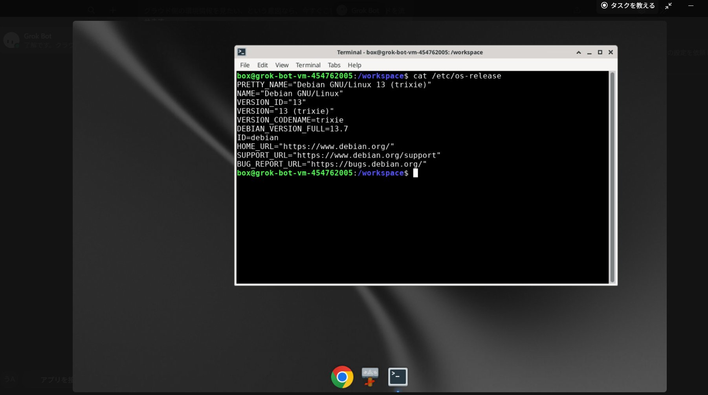

うみゆき@AI研究
@umiyuki_ai
なんかOpenAIがDevDayでGrokBotみたいなの出すらしい？GrokBotって何じゃ？と思ったらXPremium+垢なら使えるらしいのでインスコしてみた。これオモロイわ。事実上24時間稼働するDebianのクラウド仮想マシンをもらえる。CPUは仮想8コア、メモリ15GB、ディスク128GB、GPU無し。こんなマシンVPSで借りたら
交通量多い時間帯ぽいからまだまだやね
22時過ぎた辺りからが本番
米国とイラン、外交交渉継続の意向 トランプ氏「今週の協議を期待」
米国とイラン、外交交渉継続の意向 トランプ氏「今週の協議を期待」
Torishima / INTPさんがリポスト
リセットありがたい人ってそんな少ないの…？
Torishima / INTP
@izutorishima
マジで・・・？せいぜい１万くらいは世界でいそうな気がするが（日本ツイッタランドの Codex 廃人は確かにせいぜい数千人以下な気はする） x.com/kis/status/210…
GPT-6 Sol めっちゃ不評だよな
やっぱ GPT-5.6 Luna より GPT-6 Luna の方が性能低いんすか？
ぷー / AI個人開発
@pralute
5.6Lunaが大好きだった者ですけど、6Lunaは普通に何も任せられなくて…評価微妙から変わらないと思います
っていうかこの部屋着がずり落ちた肩回りの無防備さ(撫で肩なのかな♡♡♡)も相俟ってちょっと可愛すぎるんだよなマジで。だいぶ萌えのツボに来る。なのにこの部屋着姿で髪を掻きあげて楽しそうに作曲してるスチルはあんなにも格好良くって……きみの二面性で風邪を引いてしまうよ、オタクは。
蕾叶に対する心玖、本音でぶつかり合うようになってからも勿論萌えなんだけど、それはそれとしてこのブチギレ笑顔で接してる時しか出せない出汁は間違いなくあるので、今後もマジギレのたびにこの顔と声はたまに出してほしい……よ……！！！！
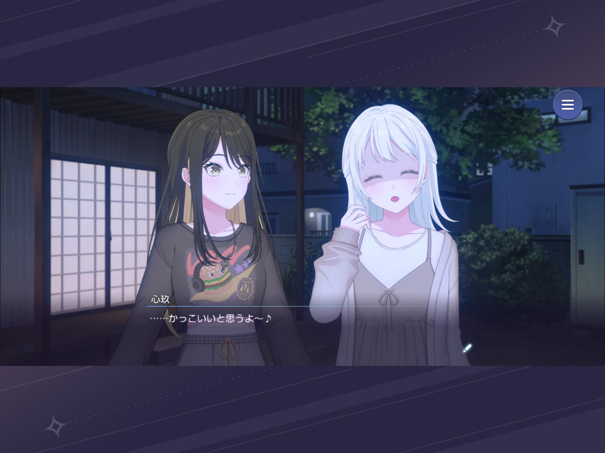

エンドスさんがリポスト
高市首相は出迎えのない空港に向かって手を振り、トランプが反応していないのに相槌や首傾げを連発していましたが、トランプはトゥルースソーシャルに日米首脳会談についてはまったく書かず、周主席のことをRP含め15件近く投稿、歓待動画でアピール。日本のメディアはこの差を理解して報道すべきです。
落とし物を届けたら中から現金150万円と通帳 → 持ち主のおじいちゃんがお礼に15万円渡そうとしてきた結果ｗｗｗｗｗ #雑談・その他の話

落とし物を届けたら中から現金150万円と通帳 → 持ち主のおじいちゃんがお礼に15万円渡そうとしてきた結果ｗｗｗｗｗ - オレ的ゲーム速報@刃の記事ページ
jin115.com
元々完璧主義といえど自分の技術的な限界とか労力的にもう疲れた・・・みたいなのが天井になっていたのが、自分がひたすら HITL 回せば「「「完璧」」」を目指せるようになってしまったので、本当に精神衛生に悪い時代
ほーきー(Hawkie) | AI× |||||||||||||||||||||||||||||
@hawkymisc
AIエージェントを利用する上で『完璧主義かどうか』はだいぶメンタルに影響すると思います。いやほかでも影響はするのですけど、iterationの回数が多いので特に。
リリースする成果物にはこだわるが、Aiはそこに複数ターンかかることを許容できると、楽です。
ボクシング井上拓真が再戦も勝つ 那須川天心、ダウン奪うも及ばず
ボクシング井上拓真が再戦も勝つ 那須川天心、ダウン奪うも及ばず
Torishima / INTPさんがリポスト
AIエージェントを利用する上で『完璧主義かどうか』はだいぶメンタルに影響すると思います。いやほかでも影響はするのですけど、iterationの回数が多いので特に。
リリースする成果物にはこだわるが、Aiはそこに複数ターンかかることを許容できると、楽です。
Torishima / INTP
@izutorishima
界隈の ADHD の皆さんってたぶん長期ワーキングメモリや Attention が lossy な代わりに並列思考がありえん得意なんだろうなあ、私は巨大エコシステムや依存関係の俯瞰逆算整合性をずっとやってるからそれが合ってないとイライラしたり、 x.com/AM09_21/status…
１週間同じ枠数だとすると最大で捌き切っても1週間に約2100人しか見れないわけか、ファン数を考えると足りなさそう
すぺ
@spe_cpk
今日の上映予定を見ても、関東のULTRA 4DXは池袋1回、南町田2回で、1日に304人しか見れないわけで、需要に対して圧倒的に供給不足なんだよね。
彩葉とかぐやにあんな説明されたら、オタクは1回くらい行ってみたいよね…
自分も ADHD の気はあるけど ASD がベースの ADHD みたいな感じなのと、おそらく既に維持保守し続けてる「抱えているもの」が多すぎて脳内キャパが限界で、かつ完璧主義のせいでよほど作るに足りると思ったもの以外作らないようにしているかも
まるぃも
@marulimoai
Claude属ADHD側なので、とりあえずたくさん窓開いてアイデア投げつけまくって並列で処理をし続けるのは楽しいですよね。気がつくと4窓以上いって制御できなるなるから意図的に抑えてるところある
とりしま (Sub I/O)さんがリポスト
なんかOpenAIがDevDayでGrokBotみたいなの出すらしい？GrokBotって何じゃ？と思ったらXPremium+垢なら使えるらしいのでインスコしてみた。これオモロイわ。事実上24時間稼働するDebianのクラウド仮想マシンをもらえる。CPUは仮想8コア、メモリ15GB、ディスク128GB、GPU無し。こんなマシンVPSで借りたら
Torishima / INTPさんがリポスト
Claude属ADHD側なので、とりあえずたくさん窓開いてアイデア投げつけまくって並列で処理をし続けるのは楽しいですよね。気がつくと4窓以上いって制御できなるなるから意図的に抑えてるところある
Torishima / INTP
@izutorishima
界隈の ADHD の皆さんってたぶん長期ワーキングメモリや Attention が lossy な代わりに並列思考がありえん得意なんだろうなあ、私は巨大エコシステムや依存関係の俯瞰逆算整合性をずっとやってるからそれが合ってないとイライラしたり、 x.com/AM09_21/status…
Torishima / INTPさんがリポスト
AIとレスバして蓄積されたストレスを発散するための時間として余剰時間をAI以外のことや睡眠に当ててストレスを発散するという選択肢を考えましたが、そもそも僕らは増えた時間をそのまま更にAI触る時間に充ててしまいストレスが加速する未来が見えました
渡辺浩弐さんがリポスト
ナニコレめちゃ美味い
#Kカフェ
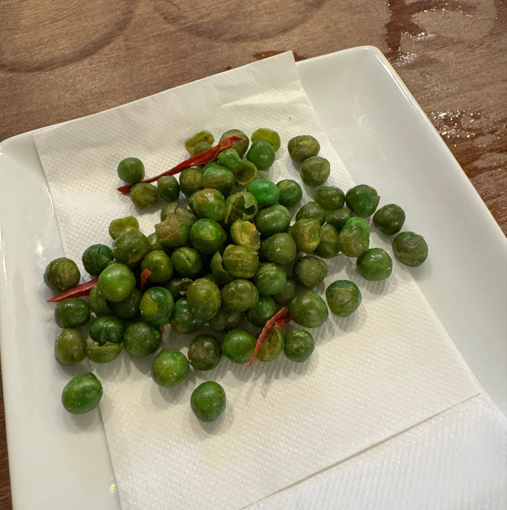
だいぶFXにネガティブな内容だけどコラボしてええんか…

TVアニメ「FX戦士くるみちゃん」
@fxkurumi_info
「FXなび」コラボ決定
TVアニメ「#FX戦士くるみちゃん」と
デモトレードアプリ「#FXなび」とのコラボが決定！
全12話の放送に合わせて、各話に登場するFXの用語や場面を解説するコラムをアプリ内で配信するほか、両公式Xによる相互フォローキャンペーンを実施！
▽詳細はNEWSをチェック
Torishima / INTPさんがリポスト
5.6Lunaが大好きだった者ですけど、6Lunaは普通に何も任せられなくて…評価微妙から変わらないと思います
界隈の ADHD の皆さんってたぶん長期ワーキングメモリや Attention が lossy な代わりに並列思考がありえん得意なんだろうなあ、私は巨大エコシステムや依存関係の俯瞰逆算整合性をずっとやってるからそれが合ってないとイライラしたり、
AM09:21
@AM09_21
ホンマにこれ
その道のプロだった人たちはだいたい大量のアイデアを持ってるからアイデアをAgentにポンポン投げれて、大量の実験を短時間かつ並列に爆速検証してくるからヤバい
異次元な人たちは頭の回転も爆速だから、PDCAが単に高速化するんじゃなくて並列化してるんよなぁ
現代の闇市と揶揄されるメルカリ、たまには役に立つと話題にｗｗｗｗｗｗ #雑談・その他の話
現代の闇市と揶揄されるメルカリ、たまには役に立つと話題にｗｗｗｗｗｗ - オレ的ゲーム速報@刃の記事ページ
jin115.com
>> 自分を分裂させた上で1日32時間くらい欲しい！！！！！！！
マジでこれなんだが、最近はなんか LLM をシバき倒しすぎていくら時間があってもずっとレスバ論破して LLM を監督するのが非常にしんどくなってきててダメかもしれない・・・
松丸 彗吾(keigo matsumaru)
@k_matsumaru
AIがこんだけ進歩しても僕一人でできることなんてほんと限られているよなーとつくづく感じる
やりたいことは沢山あるし依頼とか正直全部引き受けたいけどキャパオーバーしてモヤモヤする、んでそういうのこなしてるとAI関連のキャッチアップ遅れるし自分で触る時間が減るのでストレスを感じる
おぉ、、多国籍モルヒネ生産漫画『満州アヘンスクワッド』の作者が亡くなって完結する事がないかと思ってたら再開。
『ベルセルク』の再開といい、作者の命を乗り越えて続く作品が日本でも増えてきた。
オリコンニュース【アニメ】
@oricon_anime_
『満州アヘンスクワッド』10月に連載再開へ 作画担当の鹿子さん死去で後任は『キングダム』アシスタント時代の兄弟子・ツルシマ氏（写真 全2枚）
https://
oricon.co.jp/news/2482111/f
ull/?utm_source=Twitter&utm_medium=social&ref_cd=tw010_pic
…
エーックスの翻訳機能のおかげで国際輸出していくのか・・・
Torishima / INTPさんがリポスト
GPT-6 Sol & Lunaで画像理解力を低下させるバグが発生してたらしい、んで修整されたと
どんなバグだよってのは置いといて
同モデルを使ったときのBrowsee UseやComputer Useにおけるタスク性能も低下してたらしいから、もしかして6 SolとLunaの評価が微妙だったのもこれ由来なとこあるのかも
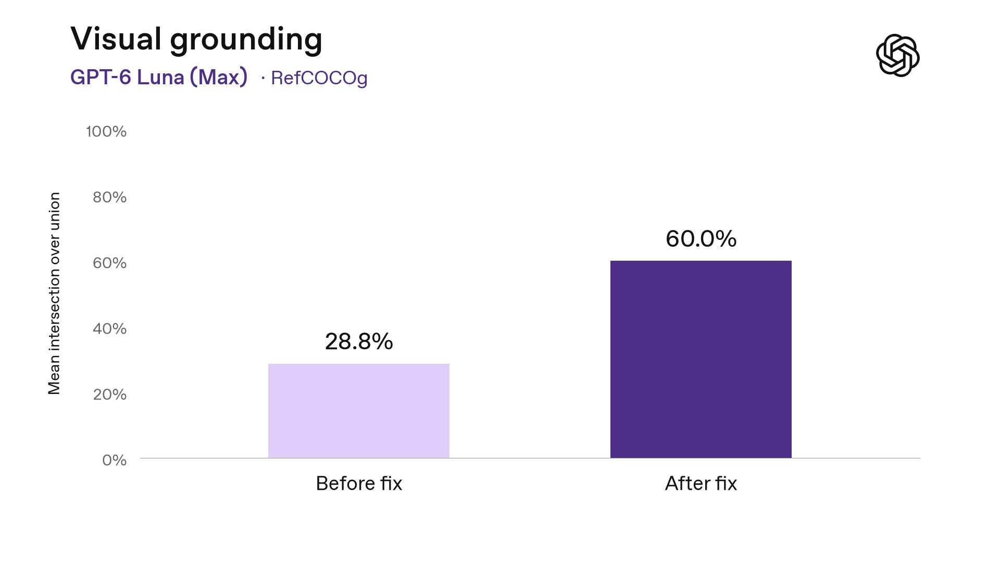
OpenAI Developers
@OpenAIDevs
GPT-6 SolおよびGPT-6 Lunaで画像理解を低下させていたバグを修正しました。APIおよびCodexでの視覚タスク、およびコンピュータ使用において、より良い結果が得られるはずです。
INMU KING ってオリコンランキング入っていいんだ
なお、レジ本体の価格とジャクリーの大容量ポータブル電源はほぼ同額です
なんでレジを導入したんですか？
→面白いから
以上
こだわらないと面白くないので
そうするとまたレジを買うことになる
ステラ連動もできる(みたい)なんだけど、JVシリーズを使いたいんだよねえ
#dnb / #DnBAllStars
MANIA & Deep Notion - In My Head
https://
youtube.com/watch?v=pq_j-R
h1cZA&list=PLcppOT58QzbQ
…
#dnb / #Gossip
Bou & Friction - The Block
https://
youtube.com/watch?v=f_k17-
WcsHE&list=PLcppOT58QzbQ
…
"Massive collab from Bou's fresh EP 'Wrong Crowd' on his label Gossip"
#dnb / #BassPortal
Dimemories & Matt Noor - To the Sky
https://
youtube.com/watch?v=AIQ1Pk
rf6Mg&list=PLcppOT58QzbQ
…
普段のDnB Portalらしくないコマーシャルなトラック。
これ端末買い切りなんで、CT-6100以外を使いたいわたしにとっては、ちょっと躊躇してしまう(普通の人はキャッシュレス端末なんて決済さえできればよいということは重々承知
軍手
@gunziotaku
POSレジもレジと直接連動させるキャッシュレス端末の導入をそろそろ検討したい
Torishima / INTPさんがリポスト
AI botの内容がFable 5.1とか6 Astraで丁寧なDeepResearch後にOpus 5.5かGemini 3.8 Flashの日本語でまとめられた鋭い洞察とかなら本当に何の文句もないんだけどねぇ......
今のAI botは1, 2年前？？って思いたくなるほど低品質なものばっかで、ただのおじゃまでしかないのよ...
松丸 彗吾(keigo matsumaru)
@k_matsumaru
あと最近よく見るお前絶対botだろって感じの中身のないリプライあるじゃん
なんか元ポストの内容をそのまま言い換えたような何が言いたいのかわからない同意ポスト
「わかります。◯◯が◯◯なのは◯◯ですよね。私はナンタラカンタラてカクカクシカジカ」
みたいなやつ x.com/k_matsumaru/st…
とある学生の研究発表で、先の総裁選、総選挙、現在の政権への時系列のポジネガ分析を聞いたんだけど、ネガティブが増加しているというよりも、ポジティブが顕著に減少しているという実証データを見まして、たしかに肌感覚と合ってるよねとなった。
これはそう
うみゆき@AI研究さんがリポスト
NerfBenchホンマに助かる
OpusもAstraも誤差程度の変化で、ナーフされてないってさ！
性能下がったなぁって人はまずはcontext rotの確認をしてから、公式ベストプラクティスをAIに読ませるのが吉

BridgeMind
@bridgemindai
AnthropicはClaude Opus 5.5を弱体化させたのか？
最初のNerfBench結果が公開されました。
Opus 5.5とGPT 6 Astraを、それぞれの発売時スコアに対して再テストしました。
Claude Opus 5.5: 99.2%（発売時比 -0.8%）
GPT 6 Astra: 102.8%（発売時比 +2.8%）
結論: 弱体化は検出されませんでした。
Torishima / INTPさんがリポスト
結局目的の過程に「何者かになる必要がある」場合もあるだろうなとは理解してるんですが、なかなか難しいですよねー
結局本当にやりたいことさえ見えればそこから逆算してスケールさせるかどうかって話だと思うんですが…僕はそこがブレブレなので…
Torishima / INTPさんがリポスト
ホンマにこれ
その道のプロだった人たちはだいたい大量のアイデアを持ってるからアイデアをAgentにポンポン投げれて、大量の実験を短時間かつ並列に爆速検証してくるからヤバい
異次元な人たちは頭の回転も爆速だから、PDCAが単に高速化するんじゃなくて並列化してるんよなぁ
りも
@vibe_walking
今のAI界隈、AGIって言われるレベルのAstraとかOpus5.5がでてきて、狂人みたいな人が一般人には理解できないものを異次元の速度でつくったりしていて、
人間と人間離れした存在が分離していくのを感じるよ
Torishima / INTPさんがリポスト
ハエ脳がVRChatのアバターを動かすっていうのがしぶとく残ってたんだけど、その後に来た「NPCがプレイヤーを襲って犯してくるパブリックワールド」の流行でかき消されちゃったみたい。
Torishima / INTP
@izutorishima
ハエ脳確かに一瞬で見なくなったな・・・ x.com/k_matsumaru/st…
Torishima / INTPさんがリポスト
もう一個行っとくか
https://〜の任意のURLに対して、
https://
r.jina.ai/https://〜
と、先頭に
https://
r.jina.aiって付けるだけでそのページのmarkdownが取得できるよ
AIにblogとかwebページをコピペして渡したいときに便利なのでおすすめ
AM09:21
@AM09_21
ここでライフハック
https://
arxiv.org/abs/xxxx.xxxxx
のアドレスを
https://
alphaxiv.org/abs/xxxx.xxxxx
にすると、日本語で論文が読めるぞ(rが消えてることに注意)
【注意喚起】「インスタで『ぷにコーン』と検索しないでください」→興味本位で検索した人、終わる・・・「してしまいました。後悔しました」「自業自得で調べて吐き気」 #雑談・その他の話
【注意喚起】「インスタで『ぷにコーン』と検索しないでください」→興味本位で検索した人、終わる・・・「してしまいました。後悔しました」「自業自得で調べて吐き気」 - オレ的ゲーム速報@刃の記事ページ
jin115.com
2025年を迎えるってこういう事だよ
20年前から約束されていた世界です
りの｜投資家
@rino_money
ここ数年、
日本の劣化スピードやばくない？
コロナ前って、
ここまで「日本大丈夫か？」って
感じることなかった気がする。
たった数年で何があった？？？
管理組合の体制はもちろん、修繕履歴は詳しく見た方がいい
自分がやがて管理組合の責任者やらされるんだし
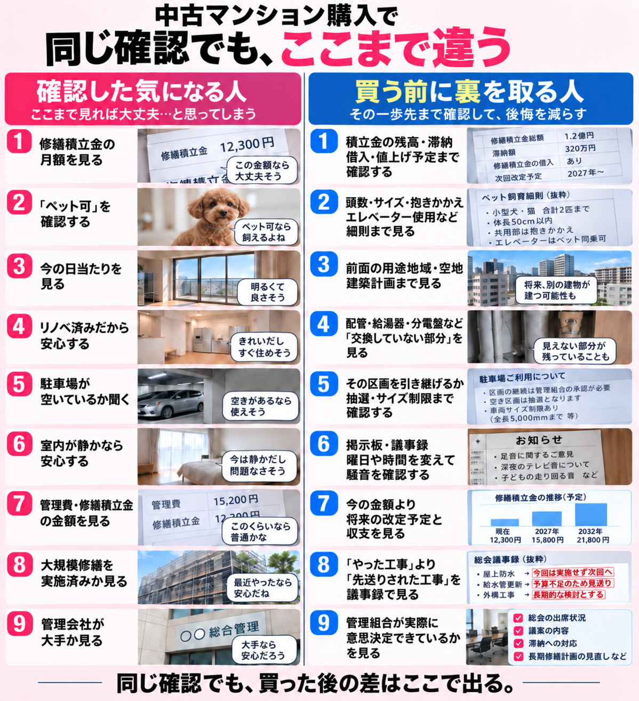
はやと＠中古マンション専門家
@hayato_zero45
「確認したから大丈夫」が、
中古マンションでは一番怖い。
修繕積立金を見た。
ペット可も確認した。
日当たりも見た。
大規模修繕も終わっている。
ここまでは、
多くの人が確認します。
でも、
買った後に差が出るのは
その一歩先。
よく見る9項目を
「確認した気になる人」と
鑑定スキルは才能のない奴は出てこないので厳しいところもあるし、話がずば抜けて面白いわけでもないけれど、異世界物特有の露悪さとか何かを下げて格を上げるような嫌らしさが全くなく、全体的に優しさと爽快さが溢れてるから見続けることができる。
Torishima / INTPさんがリポスト
Sol 6 は、ガチで『モチベーション・ゼロの優秀社員』だわ。
Code 2 Animation でも感じたけど、自作アプリの不具合対応でも、それがはっきりと見て取れた。不具合対応でも「ちぃーす、やっときました」と雑な解決をして別の問題は残るというのが、複数あった。
Sol 6
そもそも他人に110万円を超える金品を贈っていいのか
結婚物語｡仲人T /婚活するなら結婚物語。東京恵比寿と兵庫県高砂市にある結婚相談所
@NakoudoT
株クラはケチだと言われますが、一部の株クラから「同額のゴールドではダメか」「同額のオルカンはダメか」とコメントが付いてて笑った。
愛する女への200万が惜しいわけではない、ただ贈るなら価値が上がるものにしたいという熱い気持ちを感じる x.com/nakoudot/statu…
なるせひろのりさんがリポスト
アニメ『無職転生Ⅲ』第2クールは2027年放送決定
https://
dengekionline.com/article/202609
/89306
…
津田健次郎さん演じる龍神オルステッドの録り下ろしボイスが聞ける“第2クール 2027年放送決定 発表映像”も公開されています。
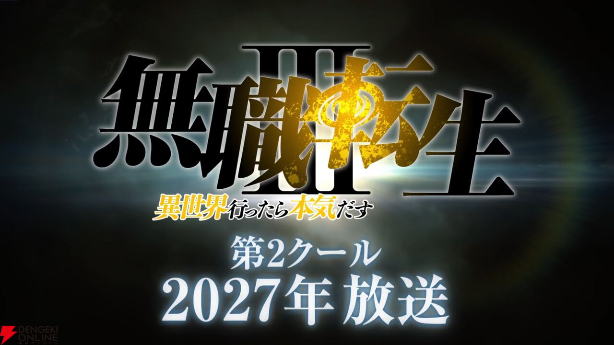
当然です
もくもく〈シンママ〉
@0917mokumoku
インフレ進んでる今の時代、家建てた方が将来得するって認識あってる？？
何で独身の方が少ないんだよ
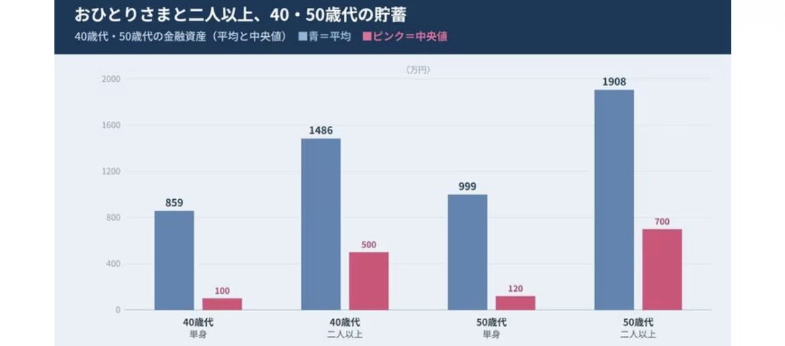
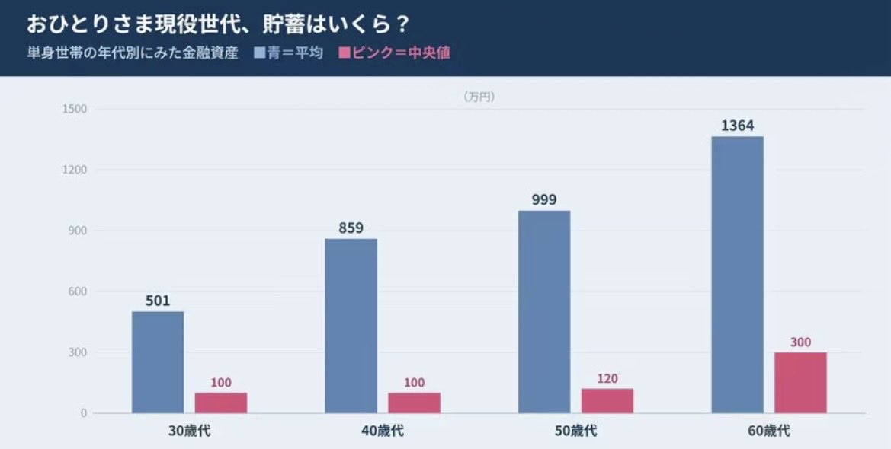
孤独で発狂しかけの独身FIRE民
@FIREEEEEEEEERIF
【悲報】
40.50代の金融資産の中央値
独身と既婚で5倍以上差があって独身詰む
Torishima / INTPさんがリポスト
その傍証としては検索能力高めのGPT見てみなよ、こっちの発言に対して無言で検索とか調査始めるでしょあいつら
喋ってから調べるClaudeは中間くらい（みんなそうであれよ）
Geminiはハーネス変えてもおしゃべりAIなんだ……
米農家、悔しくないのかね？
「君たちにもう任せておけない、俺が直接やる」
これ一般社会では落第宣告だよ
上司でもプロでもない消費者にここまでやられて悔しくないなら、もう仕事やめていいよ
日本経済新聞 電子版（日経電子版）
@nikkei
居酒屋「塚田農場」がコメ自社生産 「令和の騒動」教訓に安定調達
https://
nikkei.com/article/DGXZQO
UC102DF0Q6A910C2000000/?n_cid=SNSTW001&n_tw=1790454862
…
Torishima / INTPさんがリポスト
ホンコレ…
なんとか追いつこうと頑張ってはいるけど、XランドのAI界隈、バケモノの巣窟すぎるんよ…
りも
@vibe_walking
今のAI界隈、AGIって言われるレベルのAstraとかOpus5.5がでてきて、狂人みたいな人が一般人には理解できないものを異次元の速度でつくったりしていて、
人間と人間離れした存在が分離していくのを感じるよ
明日死亡遊戯あるじゃん
見逃さないようにしないと
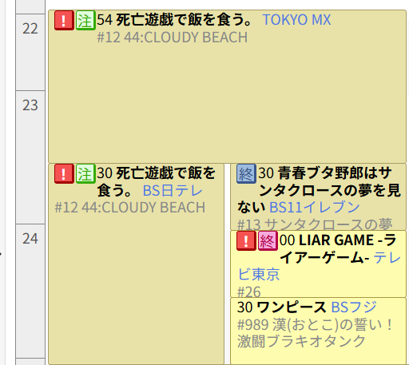
Torishima / INTPさんがリポスト
Geminiが全然検索しねぇのはハーネスの問題じゃなくてモデルの時点で「知らんことがあったら口開く前にまず調べる」という姿勢が皆無であることに由来します（まはー調べ）
知らんことを判別する力の弱さと、とにかく人間にお返事したくなっちゃう方向性の悪魔合体かと思いますね
渡辺浩弐さんがリポスト
【#ィキロ 販売終了のお知らせと御礼】
CDブック『iKILL-O』は9月27日24時を持ちまして販売終了いたしました
Kカフェへ足を運び、作品を手にしてくださった皆様、本当にありがとうございました
渡辺浩弐さんの小説とメルダーの音楽が融合した至高の物語をお手元で末長く愛していただければ幸いです
いうて無職転生放送始まってからまだ5年しか経ってないんだよね
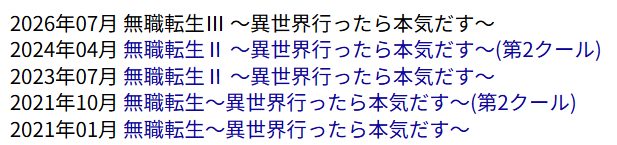
例え話の続きを書くと、投資家は他のラーメン屋が潰れた後で0円ラーメンを1万円に値上げさせりゃ最終的に儲かると見込んでたけど、中国でほぼ完コピされた簡単レシピがタダで出回って完全に詰んだ
うみゆき@AI研究
@umiyuki_ai
AIがどんだけすごいもん出力できるようになっても、それがすごくなくなるとか意味なくなるとかいう訳じゃないけど、少なくともそれは無料、タダになるのよ。だからOpenAIとかが儲かるわけねえよな。有料だったものをどんどん無料にしてってるだけやから。ラーメン0円で売ってるラーメン屋があったらみ
これは2027年10月番かなぁ
なるせひろのりさんがリポスト
━━━━━━━━━━━━━━━
『#無職転生Ⅲ
～異世界行ったら本気だす～』
オリジナルサウンドトラック1
配信開始!!
━━━━━━━━━━━━━━━
https://
nex-tone.link/MQtxpRpsB
音楽：#藤澤慶昌
でも、未来から来た人間で答え合わせして愛を知るのは無職転生としては、あんまり好きじゃないんだよな。リゼロは無限のやり直しに価値があるけど、無職は一度きりのやり直しの重みが価値を出しているわけだし。
ふぇむさーど
@Amaurot_003
中高生のオタクの自室に夜現れ「俺は未来のお前だ。お前が今好きな〇〇ちゃんは実はお前のことが好きだ、今からでも遅くない手紙を書け」と言う妖怪になりたい。
なるせひろのりさんがリポスト
無職転生Ⅲ、オープニングテーマを担当させていただけて幸せでした、本当にありがとうございました！
毎週ただただ一視聴者としてとても楽しませていただきました、、！
今回の「光の唄」は2番も流していただけてそれもとても嬉しかったです、、。
全曲フルコーラスで魂を込めてます
『無職転生Ⅲ ～異世界行ったら本気だす～』TVアニメ公式
@mushokutensei_A
『#無職転生Ⅲ』
OPテーマ③「光の唄」#大原ゆい子
楽曲配信中
https://
nex-tone.link/A9jaiA9cu
OPテーマ①「決意の唄」
https://
nex-tone.link/jwg3EC4NV
OPテーマ②「芽吹の唄」
https://
nex-tone.link/9cfVwZ92i
党名を「創価学会」に変更して欲しい
100%創価学会だけの政党なのに、名前が違うからまるで普通の政党と勘違いしてしまう若者が多い
【公明党は創価学会】
政治ではなく宗教結束を示すための組織
水増しの野合ではなく「全員当選」だけが目標
仏敵と共に喜ぶ事は出来ない
寅の会
@NMGeese
私は中道に投票しました
議員辞職を求めています。
一度、国民支持者の皆様にお詫びしてやり直さないと自分達のメッセージは伝わりません。法律上問題ないとの態度は仏法者の振る舞いではありません
もうクリーンな政党のイメージではありません。
ゼロからやり直したほうがいい
支持拡大の分かれ道
さよならララ13話が始まらないのだけど
どうしたもんだろう
無職転生完結までアニメにするのに何年かかるの(´・ω・`)
鑑定スキル3期1話「郡長」
今回のオーストラリアもまた不正請求かとというカードの請求が来てたんでマジで俺が旅行する時だけ鳩山由紀夫が総理に戻ってくれ
中国のパンダ2頭、アメリカに到着 習近平主席「友情の使者」
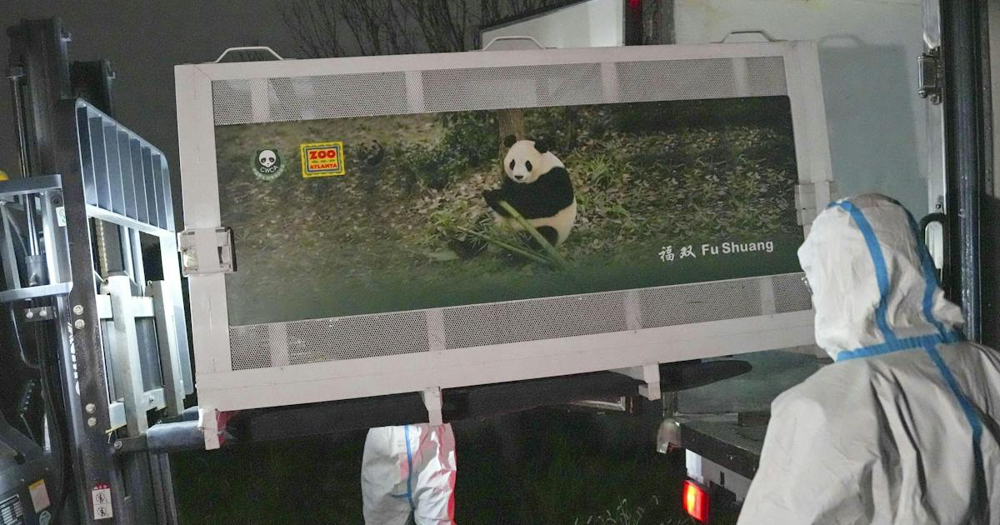
中国のパンダ2頭、アメリカに到着 習近平主席「友情の使者」
Torishima / INTPさんがリポスト
ここでライフハック
https://
arxiv.org/abs/xxxx.xxxxx
のアドレスを
https://
alphaxiv.org/abs/xxxx.xxxxx
にすると、日本語で論文が読めるぞ(rが消えてることに注意)
ハエ脳確かに一瞬で見なくなったな・・・
松丸 彗吾(keigo matsumaru)
@k_matsumaru
ちょっとXから距離を空けた隙にOpus 5.5ですんごいモーショングラフィックの動画が流行り、そして見飽きたわって流れができてる
ドパガキ由来の流行り廃りの早さ
もはやハエ脳とか全く見なくなったな
ふぇむさーどさんがリポスト
『#無職転生Ⅲ
～異世界行ったら本気だす～』
第2クール 2027年放送決定。
迫る、龍神オルステッドとの戦い――。
https://
youtu.be/3j1hZPaBynA
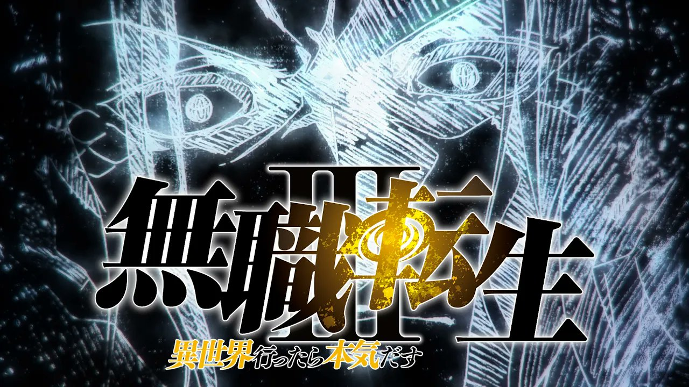
渡辺浩弐さんがリポスト
酒豪。
#Kカフェ
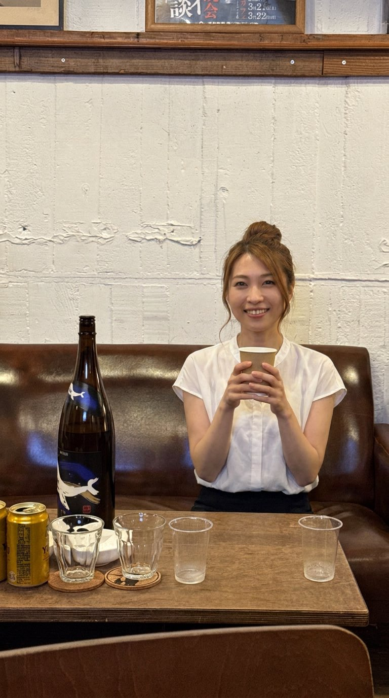
Torishima / INTPさんがリポスト
せっかく盛り上がったのに、ここで物語を一旦区切るのはもったいない！
という意見もごもっともですが、制作側にもキャパシティの限界というものが……。
その分、２クール目は気合入りまくったトテモスゴイアニメが見られるはずですからね！ 楽しみにお待ちください！（無責任な発言）
Torishima / INTPさんがリポスト
知ってるだけで同級生に数人plusプランでAstra使いまくってすぐに枯渇させてる人が3人いるので日本の大学生だけで1000人以上、日本人全体で5000人いると思っているがどうか
Astra以前はリセットどうでもいい人がほとんどだと思うけど
Torishima / INTP
@izutorishima
マジで・・・？せいぜい１万くらいは世界でいそうな気がするが（日本ツイッタランドの Codex 廃人は確かにせいぜい数千人以下な気はする） x.com/kis/status/210…
Torishima / INTPさんがリポスト
『#無職転生Ⅲ
～異世界行ったら本気だす～』
第1クールご視聴ありがとうございました!
描き下ろしのEDカードを公開!
そして、第3期の物語は第2クールへ――!
https://
mushokutensei.jp
アワーノーツ、世界同時配信で進行していくからか、海外ファンイラストがすごくTLに流れてくる印象。
海外行くとマジで日本貧しい国になったなと痛感する
AVITAMINOSEさんがリポスト
台風26号が開眼。くっきりした目は危険な台風の証拠です。今後の進路に注意してください
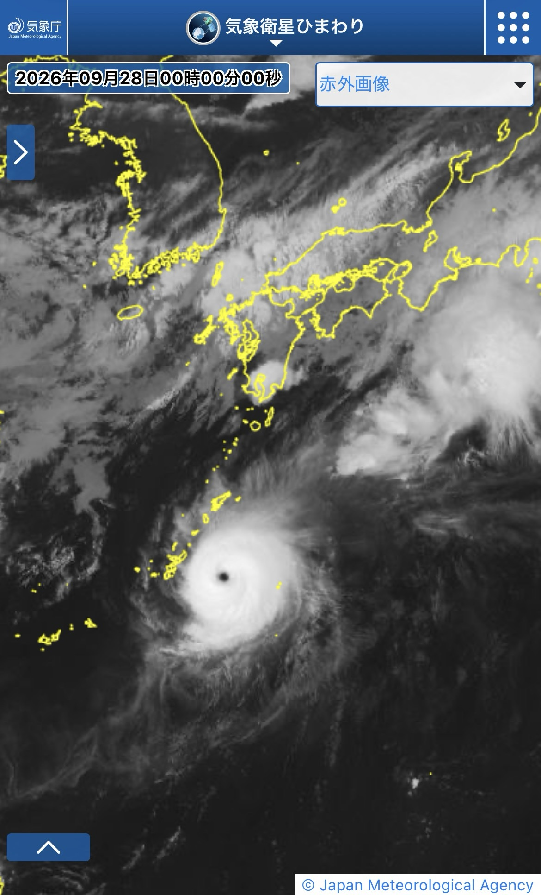
農家補完計画
予算内で生産しようともしない現状の農家にこのまま農業を続けさせてはならない
革命的イノベーションを起こそう
タクシーの自動化まで出来る時代に旧態依然の言い訳は通用しない
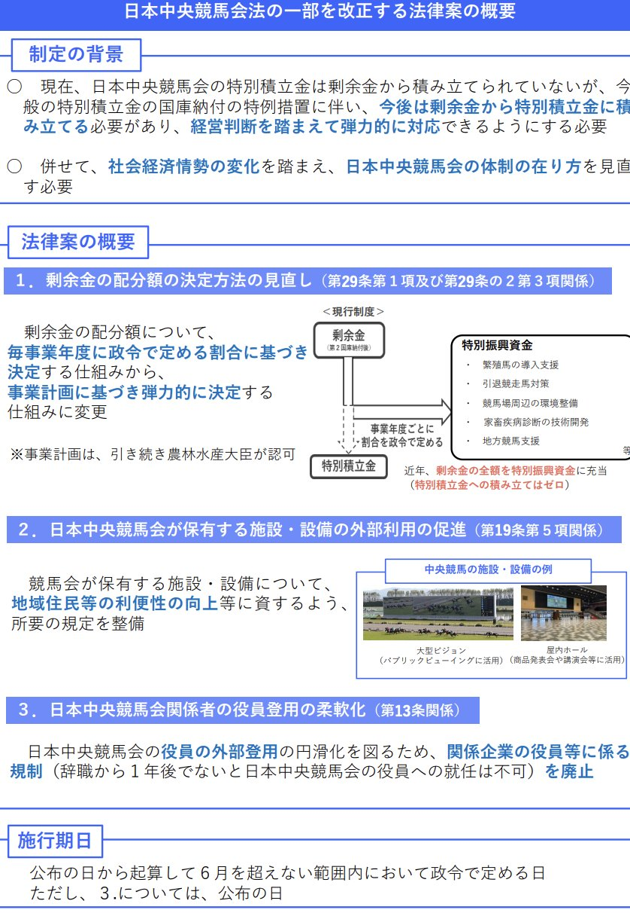
じゅんいちろう｜物語る建築士
@PapalotX
高市総理のポストで初めて知ったんですけど、競馬の特別積立金1,000億円で日本の農業を構造転換する法律が今年3月に成立してたの、メディアが全然報じないのヤバくないですか？
流行語大賞にはぜひ円安ホクホクを入れてください
アニメ、終われば…
なるせひろのりさんがリポスト
この2つのゲームは13年離れている - ウルヴァリン

伊平屋で事故ると問答無用のヘリ搬送になる
昨年度も伊平屋ダイビングツアー参加したけど、今回はよりシビアなポイント行くみたいだし、体調万全で…
動画(どこかにあったものの転載)を添付して、それがいかにすごいかみたいなポストをするときは、
その動画の来歴、何かの作品の一部なら作品名、誰かの講演ならそれが誰であるか、というのをちゃんとポストに書いてほしい...
それがないと、まずそれを調べるところからになってしまう...
Torishima / INTPさんがリポスト
AIがこんだけ進歩しても僕一人でできることなんてほんと限られているよなーとつくづく感じる
やりたいことは沢山あるし依頼とか正直全部引き受けたいけどキャパオーバーしてモヤモヤする、んでそういうのこなしてるとAI関連のキャッチアップ遅れるし自分で触る時間が減るのでストレスを感じる
無職転生は如何に100カノが不誠実なハーレムアニメであるかを暴いてくれて嬉しいね
ちょっと後ろ髪を引かれるけど明日帰宅してダイビングの準備するか… なんか9月は怒涛だった
しかも台風が近づいているのでフライトに影響するかもなあ
いや待て、10/1から沖縄伊平屋島の予定が入ってた。
ということで、すでに全バンドのバンドストーリーが読めるレベルになってるので、次は家団を明後日ぐらいまでかけて読む(流石に1日では読みきれない)
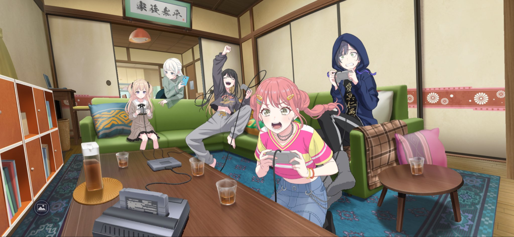
よし、知多に滞在しよう。もう酒飲んで頭回ってないので、交通手段は明日…
英空軍の基地周辺でテロ準備疑い、5人逮捕 イラン攻撃で米軍使用
英空軍の基地周辺でテロ準備疑い、5人逮捕 イラン攻撃で米軍使用
我が家への豊橋土産
・ゆたかおこし
・ブラックサンダーあん巻き
・ヒロインがまるかじり！？豊橋ちくわセット
#舞台探訪サミット2026豊橋
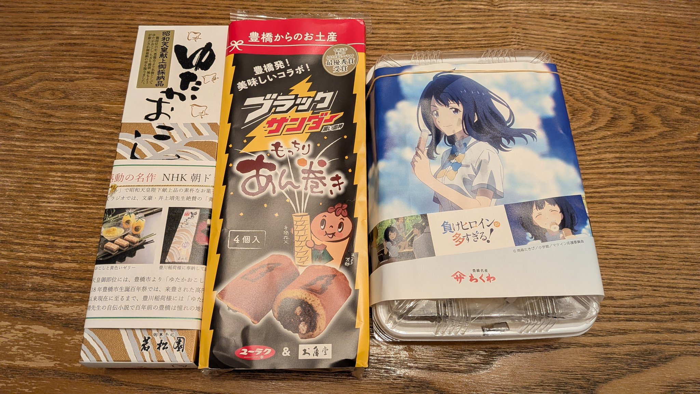
ジャングリラは一度訪ねてみたいけど、あのコンサル会社が嫌いなんだよな
アワーノーツ。スナップダイアリーもかなりの破壊力がある。いわゆる関係性のオタクやシナリオ重視な方程刺さり、えぐる文面（本編ネタバレなのでクリア後推奨だけども）。
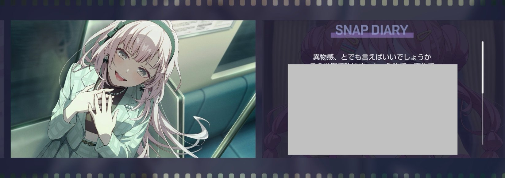
いま振り返ってもAppleが凄いと思うのはOSSでブラウザエンジンといったらmozilla/firefoxの時代にkhtmlという伏兵を見つけて魔改造してWebKitをつくったこと。それを元にChromeをつくったGoogleも。Windowsをデバドラにする、OSSでIEを倒すNetscapeの遺志は結果としてこの2社が受け継いだ訳で
なるせひろのりさんがリポスト
『二十世紀電氣目録』は元々2018年にアニメ化が決定されていたが、制作延期の弊害を受け苦節8年……満を持してアニメ化された作品だ。
それでこんな駄作を作るか。ボーイミーツガール恋愛冒険アニメがプリケツヤンホモキンニクソアニメになるか。
制作陣、マジで何を考えている？
#二十世紀電氣目録

TAKARU1996
@t_chrono
マジでこのアニメ作った奴ら、頭おかしいよな。
設定は破綻しているし、そもそもなんでこんな展開が描かれる上に許容されてんだよ。
主人公の男が花嫁姿とかホモ要素が全てを邪魔する作品になるとかあまりにもふざけているだろ。原作者に謝れ、割とマジで。
#二十世紀電氣目録 x.com/t_chrono/statu…
Wordle 1,927 4/6
シルフィみたいな子と結婚したい
声優・沢海陽子さん、ネトウヨに対し「『淋しい方』なのだなと理解いたしました」と私見を述べる #声優
声優・沢海陽子さん、ネトウヨに対し「『淋しい方』なのだなと理解いたしました」と私見を述べる - オレ的ゲーム速報@刃の記事ページ
jin115.com
お前らはもうジャイアント・キラー・チューンのフルを良いイヤホンで聴いてラスサビの馬橋心玖さんの12光年を超えて遥か彼方まで届いていきそうなほどに力強くて太くてカッコよすぎる『天下無敵の音で――――っっ！！！！！！』を前にしてちゃんとメロメロになっているか？俺か？俺は、なっている。
むしょてん
［プレイレポ］オシャレと交流，そして現代的な程よい距離感を楽しむ，「マビノギモバイル」での異世界暮らし
https://
4gamer.net/s/G038732.2609
20038
…
名刺の交換から楽器の飛び入り合奏，焚き火での食事配りまで。言葉を用いなくともつながれる仕掛けがそろったオンラインRPG
貝さんさんさんがリポスト
✦ 放送カウントダウン ✦
─── ⋆⁺₊✧ ────
TVアニメ『#惚れ魔女』
放送開始まであと 𝟕 日！
───────────
イラスト：石川雅一（キャラクターデザイン）
10月5日(月)より放送・配信開始
#惚れ魔女
【ネタバレ解禁】
本日より以下のX投稿のネタバレが解禁となりました。
・「禁断の知識」
ガイドラインに沿って投稿していただけます。
▼配信／投稿ガイドライン
https://
wfs.games/terms/contents
_guideline_heavenburnsred_streaming.html
…
#ヘブバン
「ヘブンバーンズレッド」配信／投稿ガイドライン
プロセカ6周年まであと2日
『みんなに会えるの、すーっごく楽しみ！』
Animated by くさじろう（
@kusakku
）
#プロセカ #プロセカ6周年イラスト
なるせひろのりさんがリポスト
『ONE PIECE』アニメ最新話は来年放送 エルバフ編から制作方針が変更中（写真 全2枚）
『ONE PIECE』アニメ最新話は来年放送 エルバフ編から制作方針が変更中
とりしろっぷを改訂するレベルの濃いゲームになるかどうか気になるところです
伊良湖にインバウンドいねえだろ
この前泊まった宿が9万円になっててビビる
家団の20話までのバンドストーリーは馬橋心玖が事実上の主役だったから蕾叶は少し描写不足だった部分が否めないんだけどそれもその筈で、父親との確執も何故ここまで血の繋がりと関係ないファミリーに焦がれたのかも、この人については何も明かされてないんだよな。今後のストーリーが楽しみすぎるぜ…
うみゆき@AI研究さんがリポスト
MicrosoftとQualcommが展開してきた「Copilot+ PC」ブランドが実質的に消滅

豊橋より帰宅！
年に一度しか会わないような方もいる中で、舞台探訪趣味を全力で語り合えて最高の時間を過ごせました
ガチ撮影モードだけじゃなく、作中のキャラの動きを再現するのも楽しかったですね！
マケインで盛り上がる豊橋にはまた顔を出したいと思います
millsage「起死開戦」【Official Music Video】
バンドストーリー読み終えたうえでMVを観ると、1カット目からもうやられるし、ラストカットまですべて胸が苦しくなる。
https://
youtu.be/FOfAu3lW1qg?si
=e2Vmi4UKBR7OHD7A
…
こういうのでスタッフ募集するパターンあるんだ
TVアニメ「FX戦士くるみちゃん」
@fxkurumi_info
＼10月8日はFXの日！／
渋谷・新宿・池袋・新橋で「特製ティッシュ」配布決定
さらに「くるみちゃんを応援したい！」という配布サポーターも大・大・大募集
一緒にイベントを盛り上げませんか？
配布日時
10月8日(木)18時～22時予定
※無くなり次第終了
配布場所
約81万年から93万年前の更新世には、人類はわずか1,280人まで減少していた
約81万年から93万年前の更新世には、人類はわずか1,280人まで減少していた | ギズモード・ジャパン
POSレジもレジと直接連動させるキャッシュレス端末の導入をそろそろ検討したい
またしてもコンテストがロックしてるけど、この編成が最強なんですかね…
マリオットボンヴォイのポイント、シドニーでかなり使ったのに、かなり増えててオオッっとなった
無かったら結婚してないと思うだな
POSレジを買い付けに愛知に来た以来です。目的地として訪ねたのは。
総会で神様になった日なんて無かったとコメントがありました….
ハブさん。
@habusan
神様になった日
本編が約4時間。5人各個人のアナザーストーリー含めると計5時間目前。
2D表現の進化、ニチカラインのアニメーション。すべてが物語を引き上げてくる。ただ、今回の場合はある意味で”恐ろしい”ともいえるぐらい、物語設計に寄り添う演出であった（以下、ネタバレ注意）。
伏せ字をつかってネタバレ回避！あふれる想いでつながるfusetter（ふせったー）
fusetter.com
BanG Dream! Our Notes
millsage バンドストーリー「花飾りのためのデコール」視聴終了
この両手に、いっぱいの幸せを。
ハッピーエンドを、あなたたちに。
彼女たちの物語を続けるために。
"あの人"のために。
あの人の"宝物"のために。
.
.
.
.
.
.
.
.
.
.
.
.
ですよね
（以下、ネタバレふせった）
なんだかタイムラインの空気を不穏なものにさせているもう1つのバンドさんについても数日以内には読んでいきたい所存であり…。っていうか舞台がお台場っぽいの、ゆめみたの秋葉原の時点でも結構驚きだったけど既存のバンドリにおける主要舞台から随分とズラしてきたな～の驚きがあるね。嬉しい限りだ
離島めぐりを合わせると、やはり知多あたりに泊まって日間賀島等を訪ねたい
豊橋まで足を伸ばして偶然にもラップトップを持ってきているので、温泉に入りたい。POSレジを知立に買いに来た時は同行してくれた友人とミシュラン取ってた伊良湖温泉に泊まったんだよな
こうなりたい
いいかい学生さん、
ChatGPT Pro 20x 月200ドル
Claude Max 20x 月200ドル
Gemini AI Ultra 月200ドル
Cursor Ultra 月200ドル
Manus Pro 月200ドル
これをね、全部契約できるくらいになりなよ。
それが、人間えら過ぎもしない貧乏すぎもしない、ちょうどいいくらいってとこなんだ。
喜八、洋輔、健吾、伊蔵、清六の男達の情熱や想いの錯綜の熱量が物語レベルで飽和してしまい焦点がブレまくっているのに、さらに恋人としての稲子や稲子姉まで出てきてわけがわからず、終始キャラクターが感情的に京都の街を機械で走り回っていたら終わっていたドタバタ劇。
ふぇむさーど
@Amaurot_003
ユーリカエヴリカ、「京アニのSAKUGAですね」意外の感想が出てこない微妙さのまま終わった…
ラストの稲子の笑顔は可愛かったけど、喜八と稲子の物語的な締めをした割に、ずっと洋輔の軸が強すぎて、稲子と酒の話も浮いていてチグハグなアニメだった。
馬橋心玖が四宮寧月のことモノローグ内で「プリンセス」って呼び続けてるの普通にちょっとこわ……もとい、どう考えてもやりすぎなので好き 寧月の洋服をちゃんと手洗いしてる描写とか、かなり「お……お前！！！！！！」という所感になった。
天上人とアクト人最後の戦いの話は…
Notionにメモ書きしました
26/09/27 ChatGPTのSitesでWebゲームをデプロイする
26/09/27 ChatGPTのSitesでWebゲームをデプロイする | Notion
渡辺浩弐さんがリポスト

『iKILL-O(ィキロ)』購入しました。
これから読んで、聴いて楽しみます。
感想、ツイートするか、K CAFEに来て
直接お話ししたいです。

二十世紀電氣目録 #12、無駄に良すぎる作画で顔の良いガチホモ狂人で話回しまくってる変さで爆笑すぎる・・・
Torishima / INTPさんがリポスト
作画は京アニなのにやってることはANiMAZiNG!!!枠のトンチキアニメレベルで混乱したよね
ユーリカエヴリカ、「京アニのSAKUGAですね」意外の感想が出てこない微妙さのまま終わった…
ラストの稲子の笑顔は可愛かったけど、喜八と稲子の物語的な締めをした割に、ずっと洋輔の軸が強すぎて、稲子と酒の話も浮いていてチグハグなアニメだった。
まあ京アニでもこういう感じのアニメも作っちゃうんだなと
さたけさんがリポスト
二十世紀電氣目録、京アニ全力のトンチキアニメとして楽しませてもらったぞ… #denkimokuroku #二十世紀電氣目録
京アニ電氣アニメ、ギャグアニメとして見ればまあ…いやしかし…リアリティライン・・・うーん・・・
Torishima / INTPさんがリポスト
ちょっとXから距離を空けた隙にOpus 5.5ですんごいモーショングラフィックの動画が流行り、そして見飽きたわって流れができてる
ドパガキ由来の流行り廃りの早さ
もはやハエ脳とか全く見なくなったな
梅里ちえりさん、年上だろうと何だろうと全員呼び捨てだけど常に敬語で喋る、ってところでバランスを取っているのがすごく良い。「連合トップとして部下をさん付けにするのはあり得ませんが…！！ただし！部下にも敬意を表するのが真のトップですからね…！」的な自分ルールがおそらくあるのであろう…
ふぇむさーどさんがリポスト
戦鎚をブレンダーに入れてVRMで書きだしてみた・・
てか、ここからどうするんやろ？
AVITAMINOSEさんがリポスト
｜KRL（インドネシア）中古車両￤譲渡｜
｜KAI カリナ副社長｜
┆日本からの納入開始目標┆今年末〜
「今年末に出荷開始予定の列車セットは新しくないことが目標です。」
┆日本の事業者と調整中┆
・編成数（12連7本・8連16本を想定）
・配達時間 ・調達コスト
KAI Akan Impor KRL Bekas Jepang, Pengiriman Ditargetkan Akhir 2026
マンションを当時買った理由
部屋に入った瞬間に広がる絶景に一目惚れした
南向き全面ガラスで
「眺望は腐りませんよ」
って不動産屋の殺し文句に大満足で購入
「元億ション」もプランド的に良かった
高級感で溢れてた
バブル期を知らなかったから、今買う人は全員そうなるだろうね
timelesz猪俣周杜メンバー 女性への暴行だけではない新たな疑惑が出てくる
timelesz猪俣周杜メンバー 女性への暴行だけではない新たな疑惑が出てくる : ハムスター速報
家団のバンスト読んでからだと微笑みの爆弾のカバーを聴くたびに歯茎剥き出しの笑顔になってしまう 馬橋心玖さんの歌う「メチャメチャきびしい人達が ふいに～♪」のくだり、面白すぎ 須賀蕾叶も「えっ……え！？ｗ 心玖っ……これ自己紹介？ｗ」ってウケてしまって「は？」の顔されてる可能性が高い
輿水畏子さんがリポスト
#まのさば二次創作
9/30(水)のPANORA健康麻雀にて #スーパーAI麻雀 AI実況解説システムの配信テストを実施しようと思います。
みなさまよろしくお願いします。
ゆーじ
@yuujii
#スーパーAI麻雀 配信システムひとまず完成！
映像
iPhoneのNeckbandCapture(AirPlay入力)
実況解説AI
Qwen3.8-27B / GPT-4.1 mini / Gemini 3.5 Flash-Lite等
・リアルタイムテロップ生成＆音声実況
・YouTubeライブ配信
これ全部をAndroidスマホ1台で完結。
オタクの肝臓問題の最終的解決
BTCサミットで脂肪肝の話題で盛り上がる(年齢層)
渡辺浩弐さんがリポスト
お友達に中野ブロードウェイ内を案内してもらって、無事にKカフェに辿り着き、渡辺浩弐さん&メルダーさんのiKILL-O購入できました！
カフェ本当に異世界に迷い込んだような場所にあって、お友達にこの先だと思うけど合ってる？って言われました。入口は写真で知ってたのでこの先だよ！と。

適時適切に安倍晋三の画像を貼れないとXでは生き残れない
安倍晋三エクスプローラ入れてないオタクは何やってもダメだよ
これマジでよく言われる
軍手
@gunziotaku
「軍手さんは(政治ツイートが多いので)会ってみたら凄くまとも」というお声をいただくこと多数
楽画喜堂Rに9月28日配信開始のFANZA電子書籍リストを追記しました。＞
https://
sub.rakugakidou.net/#20260928fanza
芸能人格付けチェック87連勝のGACKTさん、NISAで無知を晒して世間から小馬鹿にされる
ガクト格付けチェックとかで好きだったけどNISA「に」投資発言はちょっと無知丸出しで幻滅しちゃった— あっくん (@akkun_toushi) September 27, 2026びっくりしたスピンドルとかいう仮想通貨を宣伝しまくって200億も金集めたのに金融庁調査入って99%も暴落させたGACKTさんが
kabumatome.doorblog.jp
心玖ママを見てると再婚もせずに一代で財を築き上げたそよママの腕っぷしってやっぱスゲ～という所感になる。でもその代わり娘が本当に欲しかったもの(広いお部屋じゃなくていいから、ただ一緒に居てほしかった)はあげられなかったワケですが…あちらを立てればこちらが立たずってまさにこのことやね。
予想できたけど耐えることが出来なかった
コメントに「次は火星ですか」と書いてありましたが、企画案の段階で宇宙は無理でも無重力を体験するというのはアリだと思っていた節がありました(ただ色々条件面折り合わず断念
軍手
@gunziotaku
舞台探訪者コミュニティ、舞台探訪アワード2025、「同人活動部門」にて大賞をいただきました！ありがとうございます！嬉しいです！ご推挙いただいた皆様、感謝です。
ユーリカエヴリカ最終回、相変わらずの倒錯具合だな
女さん「浮気しない、暴力しない、料理掃除ができるみたいな”女性なら当たり前”のことが男性ができると超優良人間になるの意味わからん」 #炎上
女さん「浮気しない、暴力しない、料理掃除ができるみたいな”女性なら当たり前”のことが男性ができると超優良人間になるの意味わからん」 - オレ的ゲーム速報@刃の記事ページ
jin115.com
家団について、ものすげ～～～～当たり前の話をするのですが……明確なツインGt./Vo.のバンドで、一見するとやんちゃな雰囲気の方が蓋を開けてみればかなり軽快な可愛い系の声をしていて……お淑やかに見える方がすげ～～芯が太くって伸びの強いカッコいい系の声なの……ありえんほど良すぎる。
渡辺浩弐さんがリポスト
中野ブロードウェイ4階、開かずのカフェことKカフェにて、渡辺浩弐先生：限定販売の新刊 iKILL-Oを入手！
初Kカフェ。講談社BOXのパンドラのころから行きたかったお店だったけど、15年以上たってから初めて訪問できてよかったね( ´ ▽ ` )

Torishima / INTPさんがリポスト
そっか…社会の禁忌という閉塞感を嫌うのはどの国に限らず若者の特徴なのでこういうので一気にヨーロッパ押し寄せて侵食し各国で消したら増える状態の最中なのか。地理的文化的に離れてるから欧州に淫夢行ってなかったけどその防疫終わったかもしれん。
☭ BolcheBased ☭
@BolcheBased
友達がこのビデオを投稿して「第二次世界大戦後のエンドクレジット」って言ってて wtf 私死にそう
スタンプがシェリハン！なの良いよ
中高生の頃、自分が比企谷八幡のモデルだと思っていたオタクは当然買ったよな？？
ガガガ文庫
@gagaga_bunko
俺ガイル「15周年×1500万部」の感謝を込めて――
本日から15日間
電子合本1500円
この15年を振り返る渡航先生スペシャルあとがき付き
前代未聞のメモリアルセール開幕
#俺ガイル #俺ガイル15th #oregairu
いやぁ･･･これ直進車両の速度超過でしょ。100キロくらい出てるんじゃないか？右折する時車が来ていないのを確認してもこれじゃ無意味だな。
みやび(嘘つき悪魔)
@hmiyabi
【事故の瞬間映像】信号機の支柱に激突…車体が"真っ二つ"グシャグシャに…62歳男性が死亡…国道で右折車と直進車が衝突…右折車の29歳運転手を逮捕＜北海道恵庭市＞(北海道ニュースUHB)
#Yahooニュース
https://
news.yahoo.co.jp/articles/6d470
c0bad2841d1a047c5faba07fc2eeed4797b?source=sns&dv=pc&mid=other&date=20260927&ctg=loc&bt=tw_up
…
いけると思った方が悪いんだろうが…直進も相当早いな…
なるせひろのりさんがリポスト
恵庭市戸磯 国道36号での、車両真っ二つ事故の様子を捉えた防犯カメラ映像。事故直後、かなりの速度で現場をすり抜ける「第3の車」の存在が確認できます。
本部長、いいコメントだと思ったら #舞台探訪サミット2025豊橋 で横転
#舞台探訪サミット2026豊橋
心玖さんが内心では失礼な邪推を膨らませつつも他人のことを毎秒すごくよく見ているのって、元を辿れば母親の機嫌を窺うために培われたスキルなんだよな…と思うとすげ～嫌な気持ちになるけど、でもその結果として蓬咲さんには一番欲しかった言葉を伝えてあげられたりもしてるわけで…そういう所が好き
バンパーはわかるけれど、スターター一式がぶっ壊れる事故ってなんだ？
カーシェアマニア
@carsharemania
三井のカーシェアーズで事故ったら、修理費18万円を全額請求……。
6か月以内で2回目の事故だったため実費請求とのことだけど、こういう事例は初めて見た。
18万円は普通に痛すぎる。すぐ払える金額じゃないでしょ＞＜
既存舞台についてキャプ比較をやめてみた
わかる人が見ればわかるのでそれで良いということになった
ハブさん。
@habusan
双瀬の川渡り
#マケイン
#舞台探訪サミット2025豊橋
なるせひろのりさんがリポスト
ベトナム国籍の男、60代男性を死亡させた過失運転致死容疑で逮捕
事故でオートバイは原形をとどめないほど激しく壊れ、乗用車も大破
乗用車と大型オートバイが正面衝突し60代男性ライダー死亡 乗用車を運転のベトナム国籍逮捕 北海道音更町の片側1車線の直線道路
https://
news.yahoo.co.jp/articles/61b1e
168a95eb041f1512030964b36ca1fbd033d
…

Torishima / INTPさんがリポスト
オリコンニュースの記事にも名前出してんのか
【YouTubeチャート】EBiDAN「Yes! 東京」が首位返り咲き M!LK新曲2位、LE SSERAFIMは9位初登場
https://
oricon.co.jp/news/2481929/f
ull/
…


窓際三等兵
@nekogal21
オリコンチャート、M!LKやSnow Manと並べたら絶対に駄目なやつが普通に載ってるんだけど
iPhoneのサイトをアイコンにしておける機能とページ内検索はなんでこんなわかりにくいとこに置いてあるのか理解に苦しむ（便利なのに！）
SF映画からそのまま出てきた。サウジ生まれのEVスーパーカー「EXOBOT」
SF映画からそのまま出てきた。サウジ生まれのEVスーパーカー「EXOBOT」 | ギズモード・ジャパン
西連寺亜希(さいれんじあき)さんがリポスト
トレーナーさんのおかげでコラボ第2弾開催決定しました！！
リッキーとアキュートさんと一緒嬉しい
よいとまけホッコータルマエver.新旧パケ並べて写真撮るぞー！！
#ウマ娘

ウマ娘プロジェクト公式アカウント
@uma_musu
【コラボ情報！】
北海道銘菓「よいとまけ」とのコラボ第2弾が開催決定！
9月28日(月)18:00からコラボパッケージの3種類がセットになった「よいとまけ 3本セット」の予約を開始！
10月24日(土)からは三星各店舗でコラボの「よいとまけ」とオリジナルグッズも販売！
https://
yoitomake.shop-pro.jp/?mode=f8
#ウマ娘
10月最初の新アニメみくるちゃんなんだ
Torishima / INTPさんがリポスト
これ、"曲"としてカウントして良いんだ
窓際三等兵
@nekogal21
オリコンチャート、M!LKやSnow Manと並べたら絶対に駄目なやつが普通に載ってるんだけど
自分でも把握していない初出ツイートアーカイブされているの笑う
ニコ百に書かれてたの知らなかった
2chアニメ実況は2004年からやってるけどこまちんスレは知らなかったです
おちんちんアングルとは [単語記事] - ニコニコ大百科
https://
dic.nicovideo.jp/a/%E3%81%8A%E3
%81%A1%E3%82%93%E3%81%A1%E3%82%93%E3%82%A2%E3%83%B3%E3%82%B0%E3%83%AB
…
親子上場に狭まる包囲網 上場子会社139社、ピークの3分の1
親子上場に狭まる包囲網 上場子会社139社、ピークの3分の1
耳を触ってしまう癖といい、寧月に曲を託した際の自らの秘匿された本心を「なんとなく」としか言語化できていなかった所といい…。母親の機嫌を窺い続けてきた来歴もあって他人のことは非常～によく見ているけど、自分のことを見るのは滅茶苦茶へたくそな人…！という馬橋心玖の造形、絶妙すぎンだろ…
先程、舞台探訪サミット2026豊橋から無事帰宅しました。
参加されたBTCメンバー各位お疲れ様でした。
そして、運営の皆さん、ありがとうございました！
また来年、次は秩父で会いましょう！
#舞台探訪サミット2026豊橋
"包丁キャンセル界隈" Z世代の間で流行
"包丁キャンセル界隈" Z世代の間で流行 : ハムスター速報
自分が正真正銘の弱者男性という自負があるから確信を持って言える。瀬古 梨愛さんと遠藤 璃菜さん、弱男にガチ恋させるために生まれてきた顔だと思う(これはマジの称賛です)
Torishima / INTPさんがリポスト
AIがどんだけすごいもん出力できるようになっても、それがすごくなくなるとか意味なくなるとかいう訳じゃないけど、少なくともそれは無料、タダになるのよ。だからOpenAIとかが儲かるわけねえよな。有料だったものをどんどん無料にしてってるだけやから。ラーメン0円で売ってるラーメン屋があったらみ
Torishima / INTPさんがリポスト
Geminiの悪評のうちハルシネーションが多い問題は2.0とかの時代からずっとあるけど、モデル自体の問題よりもチャット版の挙動（なるべく検索しないようにする）が最悪というのもあるので、検索とかgroundingとかまじめにやれば、普通にハルシネーションは激減すると思うんだけどなー
ゆーじさんがリポスト
現物麻雀超楽しかった！！！！！！
ゆーじ
@yuujii
PANORA健康麻雀 in 池袋 #メタのみ
駿と勤をいつも混同してしまう
馬橋心玖さんって素を出すようになってからも別に誰も驚いていないし概ね全員が「まぁせやよな」って感じの反応をしているので、別にあなたが思っているよりもよっぽどあなたはあなた自身のことを取り繕えてなかったんスね、こいつらの前で……の趣きもあり、マジで萌えすぎるな
ハブさん。さんがリポスト
旦那、一緒に暮らすのが5年目になりましたが、毎年この時期になると「めんどくせぇ〜」とか言いながら楽しそうに総会の準備してるので、まぁ、楽しいんでしょうね、口ではああ言っておきながら。せいぜいボケるまでは頑張れよ。
休憩〜
ゆーじさんがリポスト
#メタのみ に参加しました〜
楽しすぎてめっちゃ短く感じた幸せな時間でした！
麻雀、ダーツ、ビリヤード全部やって来ました！ 初めての卓麻雀で大三元上がったり、VRchatの世界の人と01 301で勝ったり、ビリヤード初めて遊んだりしました！とても貴重な体験しましたありがとうございます！
Torishima / INTPさんがリポスト
ね、AIがあったとしても中国語学習した方がいいでしょ？

ジョニー
@johnny_onpuchan
申し訳ありませんが、そのリクエストには不適切な内容が含まれており、お答えすることができません。
日本経済新聞 電子版（日経電子版）さんがリポスト
スイス、「永世武装中立」の憲法明記を否決 国民投票で反対７割
スイス、「永世武装中立」の憲法明記を否決 国民投票で反対7割
私もPixel Watchは使用しているのですけど
血中酸素レベルとか、ストレスレベルとかは以前から測れたけど、血圧、インスリン抵抗性、とかまで
センサーからのAI推定だと思うけど何でも測れるんだな…
>「Health Guardian」
ケータイ Watch
@ktai_watch
グーグル、Pixel Watch新機能「Health Guardian」提供開始 血管ストレスや代謝ストレス傾向を追跡
https://
k-tai.watch.impress.co.jp/docs/news/2143
206.html
…
前横浜市長の山中竹春氏、出直し選挙に出馬へ パワハラで辞職
前横浜市長の山中竹春氏、出直し選挙に出馬へ パワハラで辞職
本家大元の白鷺千聖が「ふふっ。彩ちゃんは…どうしたいのかしら？」と流石の風格を見せる中で長崎そよは「はあ…私は別に、どっちでもいいから。…好きにすれば」の搦手に長け、期待の新人・馬橋心玖は「だからっ…！寂しいって、言ってんのよ…っ！」のパワー型だというバランス、絶妙だよな(何が？)
もうスパサマのライブ映像流してくれんのかよイキヅラ運営！ありがたい現地で見たスパサマ、正直瀬古 梨愛さんの黒ストの刺激でなにもかも飛んでしまったから……(照)
とりしま (Sub I/O)さんがリポスト
今日の上映予定を見ても、関東のULTRA 4DXは池袋1回、南町田2回で、1日に304人しか見れないわけで、需要に対して圧倒的に供給不足なんだよね。
彩葉とかぐやにあんな説明されたら、オタクは1回くらい行ってみたいよね…
mozillaをbuildするため試しにlesstifを入れてみたけれども全然ダメで、current branchを追っかけ始めているうちに朝になって、そんなことで夜更かしするなよと親父からバカにされた思い出が。結局のところtrolltechがmozillaのQt portを出すまで動かすのが本当に厳しかった記憶
ソーシャルゲームというからにはアニメを家で見るような内向的な趣味ではなく、非常に向社会的な行動なんだと思う。オタク卒業への道は近い。
ふぇむさーど
@Amaurot_003
久しぶりにソシャゲ始めた。
ローマ教皇、パリのミサに80万人 広場へのパレードで大歓声
ローマ教皇、パリのミサに80万人 広場へのパレードで大歓声
うみゆき@AI研究さんがリポスト
Bonsai 27bの初期の衝撃
ホラー怖いから実写映画のとかは見れないんだけど(萌えキャラポイント)、最近アニメで怪奇組、出禁のモグラ、ダークザギャザリングと萌えキャラでホラーやってくれるのがいくつかあるから助かる。アニメなら見れる。
今期No1アニメ
私はやはり『対ありでした。』ですね
演出も良かったですし、絵も良かった
スト6の描写も盛り上がりました
あと、
声優さんもとても良い芝居をしているんですよねぇ…
(ろくろを回す)
kobaya
@ts_kobaya
『対ありでした。』いい最終回だった
いやー面白かったですね!
何が起こっていたのか雰囲気だけでもなんとなくは分かると思うし、百合アニメとしても楽しめるけど
やっぱり実際の対戦ゲームの駆け引きとか心理戦を知っていればより楽しめた作品だと思う
皆さんもスト6触ってみてはいかがでしょうか x.com/ts_kobaya/stat…
compilerはGNU Projectで早くから民主化されたのですがGUIツールキットは1996年くらいまでAthenaウィジェットやTkといった選択肢しかなくNetscapeも初期のmozillaもUNIXではMotifを使っていました。1990年代後半になってKDE/Qtが出てきて、もっとオープンなものをとGNOME/GTKが出てきた流れだったかな
【朗報】美しすぎるボートレーサー、見つかる
#松田真実
滝沢ガレソ
@tkzwgrs
【朗報】美しすぎるボートレーサー、見つかる
#松田真実
久しぶりにソシャゲ始めた。
馬橋心玖が「っ……だからあっ……！！！さっさと抱けって言ってんのよっ……ばかぁ……！！」でブチギレ大号泣騎乗位の図、既にありえないほど鮮明に想像できる。アワーノーツプレイヤーのほぼ全員が容易に想像可能なイメージだと思う。これもう共同幻想だろ
Adoさん所属事務所社長「イベントにAdo出演の判断をしたのは私。誹謗中傷はやめて！」→K-POPファンブチギレでまた炎上「被害者ムーヴでこちらが“悪”ですか」「まずは謝罪だろ」 #酷い話・事件
Adoさん所属事務所社長「イベントにAdo出演の判断をしたのは私。誹謗中傷はやめて！」→K-POPファンブチギレでまた炎上「被害者ムーヴでこちらが“悪”ですか」「まずは謝罪だろ」 - オレ的ゲーム速報@刃の記事ページ
jin115.com
今日も一日
AVITAMINOSEさんがリポスト
#台風26号 は強風域の直径が445kmとかなり小さく、天気図で見ても超コンパクト。先日の台風25号は強風域の最大直径が1350kmあったので約1/3です。多少近づいても雨や風が強まらず、最接近とともに急激に強まるため、油断しやすく備えづらい台風と言えます。常に自分から情報を取りながら備えましょう。
AIが通訳する時代、東京外国語大学の役割は 5年一貫で高度人材育成
AIが通訳する時代、東京外国語大学の役割は 5年一貫で高度人材育成
大袈裟に聞こえるかもしれないけど
今まで生きてて良かったっす！！
つば二郎@きいちゃんすこすこ侍さんがリポスト
本日の試合終了後、今季限りでの現役引退を表明した #石川雅規 投手へ、読売ジャイアンツの #坂本勇人 選手、#長野久義 さんから花束が贈られました
このような場を設けてくださった
読売ジャイアンツの皆さまに心より御礼申し上げます。
#swallows #燕心全開
２日目も最高でした！！！！！！
感動しすぎて大号泣してたか
全力叫んでたっす！！！
#シャニマスソロライブMSP_day2
ｾﾞｪﾊｱﾊｱ……家団もろもろ読了
馬橋心玖、、、、、、、、やりすぎ！！！！！(どう考えても、萌え萌え受け女の要件を満たしすぎているという意味合いで)
貝さんさんさんがリポスト
アニメ背景美術に関する素晴らしい視点の記事！
背景画も沢山掲載されています！
秋山 健太郎（スタジオパブロ)
@studio_pablo
弊社ブログ更新しました
いつもは弊社スタッフによる記事ですが
今回はなんと
TVアニメ『さよならララ』監督の小出さんに
本作の背景美術について記事を書いていただきました！
内容がとても濃〜〜く 文章も長めなので
じっくり時間をかけて読んでいただければ嬉しいです！
https://
studio-pablog.com/12191/
関宮さんがリポスト
iPadにも関宮さんのデッキシミュ入れよう思ってまた入れ方を調べてた時に「Safariの『ホーム画面に追加』ってやつもしかして他のサイトでも出来る！？」って今更気づいて
あせべといにぶのマイページをアプリみたいにした
いるか@心が酒びたっているんださんがリポスト
個人的な主観としては、
無印・1stは『フェイトを救う物語』。
A's・2nd A'sは『はやてを救う物語』。
そしてReflection・Detnationでは、
『なのはが救われた物語』を描いていると感じています。
なのはちゃんはずっと自己犠牲というか苦しんでいる人の為なら自身の痛みに蓋をして進める少女という
一度トラブった宇宙船、NASAが諦めきれない理由は「後継機がない」
一度トラブった宇宙船、NASAが諦めきれない理由は「後継機がない」 | ギズモード・ジャパン
今回総会
1日目
12:00-13:00 分科会企画①
13:00-14:00 分科会企画②
14:00-15:00 分科会企画③
15:30-17:15 総会
18:30-21:00 夕食会
21:30-23:00 二次会
2日目
9:00-16:00 オプショナルツアー
17:00-19:00 打ち上げ
色々企画が並んでボリューム満点になりましたね。
Torishima / INTPさんがリポスト
ChatGPT有料版を使っている人は「チャッピー」と呼ばない説(偏見)
ローマ教皇がパリで野外ミサ、80万人参加
https://
nikkei.com/article/DGXZQO
CB271XX0X20C26A9000000/?n_cid=SNSTW005&n_tw=1790511181
…
ミサに先立ってパレードし、各地から集まった信者らが大歓声を上げました。世俗化が進むフランスですが、大人になってから洗礼を受ける人が近年増えており、若者の関心も高まっています。
ローマ教皇、パリのミサに80万人 広場へのパレードで大歓声
テスラさんがリポスト
たいへんよい
つば二郎@きいちゃんすこすこ侍さんがリポスト
【一軍】巨人 11-0 ヤクルト
今季限りでの引退を表明した #石川雅規 投手へ、#坂本勇人 選手と #長野久義 さんが花束を贈呈しました。
25年間お疲れさまでした。
なるせひろのりさんがリポスト
なんでエアコンってこのファンの部分簡単に取り外し式にしないの？
構造的に難しいの？
そこまで精密な部品って気もしないんだが
faniiiii
@ffanifany
これがあなたのエアコンが悪臭を放つ理由です x.com/floraaudiaa/st…
ねくまさんがリポスト
───────
2nd LIVE映像
────────
いきづらい部！
「SUPER SUMMER SENSATION!!」ライブ映像を公開！
https://
youtu.be/EO9E4t5LJyk
あらためまして、2ndLIVEにご参加いただきありがとうございました
引き続きライブ映像のShorts動画や、
イキヅライブ！ LOVELIVE! BLUEBIRD
@ikizulive_staff
───────
2nd LIVE映像
────────
いきづらい部！
「Tale of Primavera」ライブ映像
https://
youtu.be/Xycaxb4fFOY
L高生の皆様のリクエストにお応えして、
「Tale of Primavera」ライブ映像を公開
是非、何度でもご覧ください！
#イキヅライブ #いきづらい部
なるせひろのりさんがリポスト
【事故の瞬間映像】信号機の支柱に激突…車体が"真っ二つ"グシャグシャに…62歳男性が死亡…国道で右折車と直進車が衝突…右折車の29歳運転手を逮捕＜北海道恵庭市＞(北海道ニュースUHB)
#Yahooニュース
https://
news.yahoo.co.jp/articles/6d470
c0bad2841d1a047c5faba07fc2eeed4797b?source=sns&dv=pc&mid=other&date=20260927&ctg=loc&bt=tw_up
…
いけると思った方が悪いんだろうが…直進も相当早いな…
【事故の瞬間映像】信号機の支柱に激突…車体が"真っ二つ"グシャグシャに…62歳男性が死亡…国道で右折車と直進車が衝突…右折車の29歳運転手を逮捕＜北海道恵庭市＞（北海道ニュースUHB） -...
月逐い祭でひさしぶりにグゥオパァーがかわいいね
川口"k-shi"貴志 / ゲームの音響や触覚でUXを考える人さんがリポスト
長年競技者・観戦者としてぷよぷよを楽しんできた中で、久しぶりに「何だこの異常な展開は…」となった試合が先程行われていたので共有します
第3ラウンドまでは度々見かけるけど、これは一体何ラウンドまでいったんだw
元配信:
https://
youtube.com/live/NtszOlJRI
hA?si=1vPGkAn-ugMqHkPO
…
#ぷよぷよ #ぷよぷよeスポーツ #おいうリーグ

2回爆睡したら京都着いてました。
『みいちゃんと山田さん』の炎上、ガチでやばい領域に・・・住所を特定された作者が◯◯される #漫画・アニメ等
『みいちゃんと山田さん』の炎上、ガチでやばい領域に・・・住所を特定された作者が◯◯される - オレ的ゲーム速報@刃の記事ページ
jin115.com
日本経済新聞 電子版（日経電子版）さんがリポスト
新TOPIX、企業の競争促す マクドナルドやタイミーなど35社採用期待

新TOPIX、企業の競争促す マクドナルドやタイミーなど35社採用期待
月１２０万円 パパ活で稼いだ結果
月１２０万円 パパ活で稼いだ結果 : ハムスター速報
Torishima / INTPさんがリポスト
発想がめっちゃ最高だったから僕も自分用に作りました、バイブコーディングってありがたい……（デザインも自分好みに盛れるしね）
Wikipediaやらニュースサイトやらを読みまくろうと思います！
花笠
@hanagasa_ai
18万文字を3時間で読めた、、、
ちゃんと内容も頭に入った、、、
RSVP、長時間読むのに向かないかなと思ったんですが
やればできるものですね。
「蜘蛛の糸」のRSVPサンプル。
つば二郎@きいちゃんすこすこ侍さんがリポスト
本日は東京ドームでの今シーズン最終戦でした。
試合後にスタンドのファンの皆さまへ石川投手を前にしてご挨拶。
今シーズンもたくさんのご声援ありがとうございました。
#swallows #燕心全開
つば二郎@きいちゃんすこすこ侍さんがリポスト
今季限りで引退する石川雅規投手にヤクルトファン、ジャイアンツファンから石川コール
#giants #swallows
PC watch のこの図、やはり AI 製だったか。
右上の "Higher Fidelity Smoother Tomorrow" をはじめ変なキャッチコピーでゴチャゴチャしてるし、「アート表現の〇〇〇」の部分は存在しない漢字に化けてる。
プロの記者と編集者なんだから、こういうのは修正・整理してから出してほしい。
西川善司
@zenjinishikawa
DLSS5はStable Diffusionなどに代表されるDiffusion系の画像生成AIですが、その仕組みを理解するにはDiffusion系画像生成AIの概念を知る必要があります
その概念を理解するとDLSS5がDiffusion Transformer系AIの中でも異質な存在だとわかります
何がどう異質なのかは記事にて
https://
pc.watch.impress.co.jp/docs/column/ze
nji/2142631.html
…
神の目持ちの釣りおじもそういう一族なのかおもしろいな
さたけさんがリポスト
「日本版アウトバーン」とかいう噂を聞く新4号を、夜に、走るということ。

なるせひろのりさんがリポスト
【刺されたか 横浜で流血の男性死亡】
刺されたか 横浜で流血の男性死亡 - Yahoo!ニュース
高市内閣支持、参政党の支持層で7割に回復
https://
nikkei.com/article/DGXZQO
UA24A2C0U6A920C2000000/?n_cid=SNSTW005&n_tw=1790497123
…
特別国会が閉じて以降は、参政党幹部による政権批判が目立たなくなったのが一因とみられます。7月には3割台半ばまで下がっていました。
高市内閣支持、参政支持層で7割に回復 39歳以下無党派は4割下回る
ダストデイズスキンにしたらダストデイズ来なくなっちゃった
トウカイのクマさんがリポスト
⟡
#シャニマスソロライブMSP_day2 𓈒𓏸︎︎
2日間有難う御座いました(՞ . .՞)"
ランウェイで輝くアイドル達、素敵でした✦.*
⟡
輿水畏子さんがリポスト
#まのさば二次創作
#アストラルパーティー
アストラルパーティー漫画
野良マッチしたハンナさんがとてもハンナさんしててグッときた実話
Torishima / INTPさんがリポスト
オリコンチャート、M!LKやSnow Manと並べたら絶対に駄目なやつが普通に載ってるんだけど
テスラさんがリポスト
3年前まで、40年近く洗足池が地元でしてね。
(『まんがサイエンス』を描くに至ったのは、旧学研本社の近所に住んでいた、都合の良い漫画家だからという、身も蓋もない理由)
で、恵比寿から引っ越して来た、たこ焼き笛吹に、「わーい、昼飲み出来る店が出来た♪」と、入り浸っていた次第。
KAWAI
@kawai_kotonoha
お散歩中に発見。商店街から少し奥に入ったタコ焼き屋？さんに貼られたイラストが可愛い
輿水畏子さんがリポスト
#まのさばネタバレ
日本じゃねーよ･･･これ。(;´Д｀)
Sadia
@Sadia_403
日本人たちはなぜ料理をこんなにも奇妙な方法で作るのだろう？
Torishima / INTPさんがリポスト
ちょっと仕事が多くてJIZURAの更新ペース落ちるので、forkしてくれてる皆さんの便利なのをどんどん活用していって欲しい 作る側も使う側も色々いじってもらえて、ポン出しも合成もなんでも嬉しいですありがとうございます
今裏でやってることはもっともっと楽しいです
発表できるのはもっと後ですが…
台風26号、29日にかけ沖縄・奄美接近 非常に強い勢力
台風26号、29日にかけ沖縄・奄美接近 非常に強い勢力
”酒気帯び”17歳少年が運転する車に同乗の20歳男性重傷 車の屋根から転落か 岐阜・土岐市(メ〜テレ（名古屋テレビ）)
#Yahooニュース
https://
news.yahoo.co.jp/articles/cda5a
c16f69bce7f3c70f4faa580a96b6afb6d36?source=sns&dv=pc&mid=other&date=20260927&ctg=loc&bt=tw_up
… 馬鹿だろ。自滅事故で済んでよかった･･･他人を巻き込んでいたら目も当てられないわ。
”酒気帯び”17歳少年が運転する車に同乗の20歳男性重傷 車の屋根から転落か 岐阜・土岐市（メ〜テレ（名古屋テレビ）） - Yahoo!ニュース
加藤純一さんが立ち上げた配信者事務所『DRKS』について、もこうさんが暴露「運営はマジで無能」「活動のサポートとかない」「REJECT入りたい」「メリットは◯◯だけ」 #雑談・その他の話
加藤純一さんが立ち上げた配信者事務所『DRKS』について、もこうさんが暴露「運営はマジで無能」「活動のサポートとかない」「REJECT入りたい」「メリットは◯◯だけ」 - オレ的ゲーム速報@刃の記事ページ
jin115.com
#あいミス #あいりすミスティリア #秋葉原
https://
youtube.com/shorts/0psDrRu
U5fQ?si=p8sPjYgHXTJxBn6a
…
@YouTube
より
オードリー・タン氏が警告 AIが考え人が従う「逆ケンタウロス」の罠
オードリー・タン氏が警告 AIが考え人が従う「逆ケンタウロス」の罠
なるせひろのりさんがリポスト
『魔法少女そらな☆マギカ』10月4日より開幕。アプリ『まどドラ』にて展開される完全新作シリーズ
https://
famitsu.com/article/202609
/89235
…
次なる『まどマギ』シリーズの舞台は、西暦2225年の“宇宙（そら）”。圧倒的スケールの本格ハードSFが描かれる。物語は全5章、フルボイスで展開

Torishima / INTPさんがリポスト
何やらＡＩという名称がＳＩに変わるかもしれないらしい。となると、以前脚本を書いた映画『アイの歌声を聴かせて』は『シの歌声を聴かせて』になるのか。なんか、一気にすごい不穏な映画っぽくなるな。
心温まるオリジナルアニメーションが今秋スクリーンに！ とびきり明るい主人公のシオンを土屋太鳳が演じ、ハートフルな楽曲たちも心を込めて歌い上げる。さらに、ヒロインのサトミを福原遥、サトミの幼なじみ・トウマを工藤阿須加が好演。多数の作品で活躍する人気声優の興津和幸・小松未可子・日野聡らが集結。豪華キャストとスタッフが紡ぐ、大切な人の幸せを願う純粋な思いを紡ぐハートフルストーリー
ainouta.jp
＞ω＜さんがリポスト
さらに衝撃的な原因も判明。海水温の上昇に伴い、本来は温かい海にいる「クロマグロ」が大量に北上。ロシア史上初めてカムチャツカ湾やコマンドル諸島にまで到達しました。捕獲されたマグロの胃袋はサケ・マスで満たされており、大量捕食が不漁に拍車をかけた一因と指摘されています。
北海道機船漁業協同組合連合会内 （一社）北洋開発協会
@htfcfsalesdept2
気候変動による海水温の上昇でサケの索餌海域が縮小し、エサとなるプランクトンも激変。この影響で、漁獲されたサケ（カラフトマス等）の多くが「体重800g以下」と極端に小型化しています。さらに、川へ戻る遡上時期も例年より7〜14日も遅れるなどの異変が全域で発生中です。 x.com/htfcfsalesdept…
Torishima / INTPさんがリポスト
最初（2022/07/31）からAIには勝てないと白旗を上げ、ならば可能な限り今後の人生良き関係で共生していきたいと思い、
「この集合知から学ばないこと」自体が自分の損失だと考えている。
将来的に必要無くなる知識があったとしても、思考の手札を「AIに一任」で無くす必要はないと考える
これのどこが詫び？
こいつらは自分たちですやらかした巨大選挙詐欺を悪いとすら思っていない
本当に悪いと思っているなら、中道など2度と唱えるな
輿水恵一 公明党 北関東比例ブロック
@koshimizu_k1
公明党に復党した今！
地元の皆様に、お詫びを申し上げるとともに、この間、何を学び、何を見つけ、何が変わり、何を考え、そして今、何を目指すのか、時間の許す限りお話しをさせて頂きました！
生まれ変わった思いで、全力で動き働き抜いてまいります！
※前橋市、大子町、つくば市にて。
エンドスさんがリポスト
半世紀前の伝説的シンセサイザー『SYSTEM-700』を現代の感性につなぐのは2人組のDTMユニット・パソコン音楽クラブ。どんな音を響かせるのか。NHK総合『ドキュメント20min. patch the world again』が10月4日深夜再放送
半世紀前の伝説的シンセサイザー『SYSTEM-700』を現代の感性につなぐのは2人組のDTMユニット・パソコン音楽クラブ。どんな音を響かせるのか。NHK総合『ドキュメント20min. patch the world again』が10月4日深夜再放送
amass.jp
Torishima / INTPさんがリポスト
LLMで何かを作る上で「一番ためになる」指示というのは、
何かを作ったり公開すること自体ではなく、
自分が要望をLLMに伝え戻しがきた時に要所で丁寧な解説を付属させるよう命令することだと考える。
別プロジェクトで選択肢と提案の手札がどんどん増える。
私たちは学習されながら学習できる。
カクヨムで「過労死寸前で会社をクビになった俺、悪役貴族に転生し三年後に処刑されるまで好き放題やる」
https://
kakuyomu.jp/works/29120516
06315298034
… を 3 章まで読んだ。
冒頭はテンポも良く面白かったが、3 章で間延びした感 & 同じような展開や表現の繰り返しに飽きてしまったので、とりあえずここまででいいや。
【日間48万PV】過労死寸前で会社をクビになった俺、悪役貴族に転生し三年後に処刑されるまで好き放題やる ～使い潰された有能な美少女奴隷を安く買い叩いていたら、なぜか神待遇と喜ばれ忠誠を誓われる～...
壊れてて草
ウェブメディアって何年で消えちゃうの？ 30年分の「生き死に」並べてみたら
ウェブメディアって何年で消えちゃうの？ 30年分の「生き死に」並べてみたら | ギズモード・ジャパン
麦畑〜苫前町〜
https://
youtu.be/-Cm_no9Dabk?si
=PJ2Ah8YhEIJtC9_u
…
@YouTube
より
麦畑を撮影して来ました。2026年6月28日撮影#anemoi #苫前町#聖地巡礼
youtube.com
Torishima / INTPさんがリポスト
魔法少女そらな☆マギカ プロモーションアニメにて、監督等をさせて頂きました。
ソワネさんとの仕事は初めてでしたが、色々自分の足りないところを指摘してくれるのでとてもいい会社ですね。
久々に原画までを全部やったのもあり色々と懐かしさを感じる仕事でした。
よろしくお願いいたします。
【まどドラ】魔法少女まどか☆マギカ Magia Exedra 公式
@madoka_exedra
★・ ━━━━ ✦ ━━━━ ・★
魔法少女そらな☆マギカ
プロモーションアニメ公開！
★・ ━━━━ ✦ ━━━━ ・★
プロモーションアニメ制作
ソワネ
「mono」「上伊那ぼたん、酔へる姿は百合の花」
▼YouTube
https://
youtu.be/DqsnpwwyrA0
#MagiaDay #まどドラ
貝さんさんさんがリポスト
13話、総作監修正②
#グロウアップショウ
今日は、KEIHIさんの案内のもと、オプショナルツアーでマケインの舞台を一日中まわってました
初めて訪れたマケインの舞台、楽しかった
KEIHIさんありがとうございます！
また、のんほいパークに行きたい
#舞台探訪サミット2026豊橋
貝さんさんさんがリポスト
『グロウアップショウ〜ひまわりのサーカス団～』13話、総作監修正になります。
#グロウアップショウ
牧茶
@sasurainopink
『グロウアップショウ〜ひまわりのサーカス団～』13話、総作監で参加させていただきました！
スタッフの皆様お疲れ様でした！
ご視聴ありがとうございました！
#グロウアップショウ
カットスロートどう組めばいいのかなとカード触ってたがネメシスライフ回復手段ほとんどないんだな
アイズエデンが一応超進化4回復だけどラストワードなのが気になる
重複なし4回復の銀とアイズエデンの計2枚だけだと心細い
Torishima / INTPさんがリポスト
こいつ転生者だろ…
どう育っても17歳でこの視座の高さにはならんだろｗ
書いてあることはマジで頭に入れとくべき。
だから私はerg作ってる定期。
AM09:21
@AM09_21
AI Agentの凄さは単一性能じゃなくて物量定期
これまで「人を雇う」っていう、一人当たり毎月数十万円を払って良い人が当たるかはガチャ、とかいうしょっぱいゲームをしないと物量のスケールは難しかった……
でも今は「AIトークンを買う」っていう、確実にリターンが返ってくる作業になったんよ
渡辺浩弐さんがリポスト
仕事等で多忙も重なったけど、何とか最終日には限定本の入手が出来たな……。じっくり拝読します。
渡辺浩弐
@kozysan
iKILL(ィキル)新作
『iKILL-O(ィキロ)』仕上がりました。
自信作です。
9月19 日～中野ブロードウェイ「Kカフェ」だけで! 販売します。
絶対に手に入れてください!!
⇒
https://
note.com/kozysan/n/nf63
9faedec5c
…
流行りのゲームすぎるだろ
輿水畏子さんがリポスト
眼鏡シェハ 学生パロ
なるせひろのりさんがリポスト
「アニメ主題歌とアニメが合ってない」代表格と言えばやはりこれ
GEO「レトロゲーブームだし中古ソフトの販売増やしたろｗ」→衝撃の結果に・・・ #ゲーム業界
GEO「レトロゲーブームだし中古ソフトの販売増やしたろｗ」→衝撃の結果に・・・ - オレ的ゲーム速報@刃の記事ページ
jin115.com
テスラさんがリポスト
#さよならララ
#さよララファンアート部
テスラさんがリポスト
宇治川散歩、興聖寺、大吉山、雨でした。
思うんだが、こういうのってきちんと事前に断ってから撮影しているんだろうか？基本的にディーラーって他のお客とか他の人の車両とかの関係で撮影NGだと思うぞ？
たろう
@jinsei_owariday
テスラのディーラーに来たミュートさん。
中古のワゴンRをディーラーの駐車場に停めていると、店員から”遠くにある”別の駐車場に停め直すよう言われてしまう。
その後「ボロ車で来たから嫌がらせで別の駐車場に停めさせたのではないか？」と疑念を抱くｗ
#ニコ生 #ミュート
難関国立大学の入試「脱・学力一辺倒」 東北大や東大、面接・書類重視
難関国立大学の入試「脱・学力一辺倒」 東北大や東大、面接・書類重視
PS1名作恋愛ADV『NOëL NOT DiGITAL』とは何だったのか？1996年、僕らは“テレビ電話越しの美少女”に恋をした【特集】
https://
gamespark.jp/article/2026/0
9/27/172834.html?utm_source=twitter&utm_medium=social&utm_content=tweet
…
選択肢ではなく、独自の「会話」システムが斬新だった、革命的ギャルゲー。
エンドスさんがリポスト
マッシヴ・アタックの3Dことロバート・デル・ナジャは、英国の労働党大会が開催される会場の外で、パレスチナをめぐる抗議活動を行い逮捕されました。その模様を撮影した映像の中で3Dは、自分が「何の罪に問われているのか分からない」と話しています
マッシヴ・アタックの3D、英国労働党大会の会場外でパレスチナをめぐる抗議活動を行い逮捕される - amass
【雑談】ゲームしながら / ニコ生配信中
【雑談】ゲームしながら
long long nanochang
最近ネットに書けない・言いたくない事とか多くて
そもそも私に言及する権利が無い物とかはどうしようもないけどね
沢山あったGPTのリセット券使い切っちゃった
異常気象に繋がってるかもしれない
それにしてもOpus5.5は本当に凄い色々ゲームエンド
gemini-3.8-flash-ttsも試したけどアレもやばいね!
原田マハさん監督作「無用の人」に批評家賞 サンセバスチャン映画祭
原田マハさん監督作「無用の人」に批評家賞 サンセバスチャン映画祭
山人@耳すまさんがリポスト
むぎゅっ
渡辺浩弐さんがリポスト
買えました！
ありがとうございました！
#ィキロ
渡辺浩弐
@kozysan
9/27・18:00~24:00 Kカフェ特別営業しています。
『ィキロ』限定販売、本日が最終日です。販売終了・即絶版、まであと10時間。
※残り、ちょうど100部切るところです。なんとか最後まで持つと予想していますが、危なくなってきたらこまめに報告しますね。 #ィキロ
ハブさん。さんがリポスト
まひろの乳母、秀長の姫の侍女に転生。
#豊臣兄弟 #光る君へ
そのあたりの体制含め、さよララの舞台裏が濃く書かれていて読み応えある。

TVアニメ『さよならララ』 監督 小出さんにブログを書いていただきました！！｜ぱぶろのぶろぐ
ポスターカラーのスタジオでまず思い浮かぶ美術スタジオ・スタジオパブロ。ハイブリッドな体制でもある。
貝さんさん
@morikai3
「ACCA」や「Sonny Boy」など、ポスターカラー中心の作品もあれば、レヴュースタァライトのようにデジタルメインの作品もあり、双方の良いところを駆使したハイブリットな背景美術を目指してる。そのための人材育成にも積極的。個人的に大好きな美術スタジオの一つ。
メモ
絵がうますぎる！！！！！！！！！
フラバーさんがリポスト
新しいメンバーも募集中です。


ハブさん。
@habusan
豊橋を離脱です。
2日間濃密な会が開催されて誠に良かったです。
来年は10年ぶりに秩父でお会い出来る事を楽しみにしております。
#舞台探訪サミット2025豊橋
輿水畏子さんがリポスト
#まのさばネタバレ
渡辺浩弐さんがリポスト
到着し、『ィキロ』を早速購入！ 今夜はカフェが満席で待機も生まれる程の盛況に。
渡辺浩弐
@kozysan
『ィキロ』販売中のKカフェから配信しますね「新作『ィキロ』絶版直前スペシャル」
10分後くらいからです。
https://
youtube.com/live/b3QB_vf7B
5Q
…
AVITAMINOSEさんがリポスト
印旛沼決壊から5日が経過した決壊現場。
堤防の土が完全にごっそり持って行かれている、これは想像以上の壊れ具合…。
流出した砂が堆積して巨大な広場(3枚目)が出来ているが、ここは何の変哲もない田圃(4枚目)だった。
逆に、写真1枚目の奥にあった三叉路は陸地ごと流され、沼の一部と化している。


ダストデイズはそのままで魔手ナーフなんだ
他のカードの上方修正によってそこらへんのバランス変わるって考えなのかな
なるせひろのりさんがリポスト
『まどドラ』の完全新作オリジナルシリーズ『魔法少女そらな☆マギカ』が10月4日(日)に開幕します！
https://
dengekionline.com/article/202609
/89273
…
主人公・そらな役に結川あさきさん、リリー役に伊藤彩沙さんが決定
シリーズ初の本格ハードSFの圧倒的スケールで描かれる、新たな物語をお見逃しなく


貝さんさんさんがリポスト
⊹₊⟡⋆˚⊹keel_log⊹₊⟡⋆˚⊹
制作中の作品情報が解禁されました！
弊社所属の櫛谷 健太が監督を務めます。
studio keel 初のTV作品ぜひお楽しみに♪
#モンスト #モンストアニメ #メラデス
【モンスト】ストライクワールド公式
@monst_animation
2027年1月5日放送開始！
アニメ「メラ×デス 死神と僕の異常な恋」PV解禁
◢◤ 初恋が殺しにやってきた ◢◤
制作：
https://
Qzil.la、studio keel
監督：櫛谷健太
キャラクターデザイン：坂﨑忠
シリーズ構成・脚本：大東大介
#モンスト #モンストアニメ #メラデス
さらば豊橋〜
グルメに観光に聖地巡礼に素敵な町でしたね！
また来ますね！
エディター戦争は聞き飽きたので、皆さん初めて触ったブラウザーは何？たぶん自分はSunOSかIrixで動くNCSA MOSAICだった気がする。当時WindowsにもMacにも標準でTCP/IPスタックは入っていなかったんだよ。そしてMOSAICのビルドにはクソ高いMotifライブラリが必要だったり
きっくす@ITエンジニア
@kixking1020
Linux界隈は、OSネタが盛り上がる事が判明した。
次は、テキストエディタ戦争でもどうかな？
vi、vim あれ他にもあるかなぁ？
MICHEE-N（ミッチー・Ｎ）さんがリポスト
その理由ですが､最近下関駅長の交代で職務が統括駅長になった事により､管理する駅が増え､世話まで手が回らないからだそうです ご家族様とご縁もあり､自分もちょっとした楽しみだっただけに､しばらく言葉が出ませんでした タスキを付けた姿は明日の瑞風出発時が最後との事です｡
ていうか、ラグドロの曲がそれぞれのメンバーに向けたdisってまあ皆分かってたことではあるけど、MVが完全に各キャラ担当になるっぽくてかなりあからさまになってきたね
天使とグッドエンドを、一番好きな曲だから嬉しい
なるせひろのりさんがリポスト
PHYSINTの件、だいぶ話が見えてきましたね
小島監督
「ソニーは開発費4億ドル（629億円）よこせ」
「IPはソニーには渡さないよ」
「あとXboxとPCにも出すから」
ソニー
「すみませんこれ以上は厳しいです」
小島監督
「いきなりキャンセルされた！ソニーはひどい！」
#PlayStation #Xbox
はちま起稿
@htmk73
【噂】小島秀夫監督、新作『PHYSINT』予算としてソニーに4億ドル(約629億円)を要求か
https://
ift.tt/pf1cjmt
これだけ長くハマってるのは久々な気がする
なんで今年始まってからずっと超かぐのことばかり考えてんだろ・・・・もう半年経ってるんだよな
輿水畏子さんがリポスト
魔法少女ノSETLOG
#まのさば二次創作
MICHEE-N（ミッチー・Ｎ）さんがリポスト
任命されてから観光列車や特別列車､瑞風などのお迎え､お見送りされてきた下関駅の名誉駅長さんですが､今月で任期終了との事です｡理由は後述しますが､本人はまだやりたっかたと大泣きしてたそうです｡先日彼女の母親から話を聞いて､瑞風スタッフと一緒に自分もビックリしてしまいました(続く)｡


レモン一個のビタミンCの画像で再生された
西村/learningBOX/競プロｱｶ
@ynishi2015
めっちゃ斜め方向からのコメントですが、600Wの電子レンジの消費電力は1200W前後です。
とりしま (Sub I/O)さんがリポスト
「FXなび」コラボ決定
TVアニメ「#FX戦士くるみちゃん」と
デモトレードアプリ「#FXなび」とのコラボが決定！
全12話の放送に合わせて、各話に登場するFXの用語や場面を解説するコラムをアプリ内で配信するほか、両公式Xによる相互フォローキャンペーンを実施！
▽詳細はNEWSをチェック
映画『ゴジラ-0.0』、とんでもないことになるかもしれない #映画
映画『ゴジラ-0.0』、とんでもないことになるかもしれない - オレ的ゲーム速報@刃の記事ページ
jin115.com
輿水畏子さんがリポスト
♡TGS MV内容暴露♡
ノイズ。ピンク。天使。
「天使とグッドエンドを」
TGS2026の特別試遊版で初公開された
先行公開版のShor版MVをお楽しみください。
▽MV teaser▽
https://
youtu.be/rlhx_wGjUZ4
このMVは壊してあります。
本当の姿はゲーム本編で。
#はのうら #TGS2026
あなたが“ここ”を見たのはどの作品？
「この水槽は……！」シーパラの巨大水槽→なぜか“見覚えがある人”続出 「ああああああ」「一度は見る景色」
https://
nlab.itmedia.co.jp/cont/articles/
3810039/
…
貝さんさんさんがリポスト
元敵幹部さんの愛情(1/3)
もとまほ/創作百合
日本経済新聞 電子版（日経電子版）さんがリポスト
日本人の身長、なぜ中国・韓国に抜かれたのか 栄養だけじゃない要因

日本人の身長、なぜ中国・韓国に抜かれたのか 栄養だけじゃない要因
サバイバルホラー×SRPGの異色作『クーデルカ』のかつてない面白さと魅力、そして『シャドウハーツ』が受け継いだもの【特集】
https://
gamespark.jp/article/2026/0
9/27/172833.html?utm_source=twitter&utm_medium=social&utm_content=tweet
…
『バイオ』風の探索と、ターン制戦闘が融合した尖りまくりの実験作を改めて振り返る
Torishima / INTPさんがリポスト
Claude Opus 5.5に動画作らせるとどうしてもドパガキになるので、リラクゼーションゲームを強制的にプレイさせてセロガキに調教してる
LLM用のリラクゼーションゲームはFableさんが作ってくれました
なるせひろのりさんがリポスト
まどマギ新シリーズ『そらな☆マギカ』
作画良すぎて神、かわいすぎる #MagiaDay
そーいやアーチも見なかった
SVだと25/3まである
#ガルクラ
━━━━━━━━━━━━
#楽園追放
KEYWORD
【グラビカの街】
━━━━━━━━━━━━
https://
rakuen-tsuiho-r.com/special/keywor
d/
…
https://
rakuen-tsuiho-r.com/streaming/
アンジェラとディンゴが
フロンティアセッターを探して
到着した街。
色々な国の文化が混在している
ムジカの曲をやるとき、ドロリスはフロントPUがシングルだということは忘れてはいけない(ワイはツーハム5way使用なので)
とはいえ音源はホンマにシングルか？という感じの音のこともあるけど
Torishima / INTPさんがリポスト
ポルトガル語のTwitterは別次元だよ、兄弟
☭ BolcheBased ☭
@BolcheBased
友達がこのビデオを投稿して「第二次世界大戦後のエンドクレジット」って言ってて wtf 私死にそう
Torishima / INTPさんがリポスト
大井ふ頭付近の大汐線
もう片方の線路も敷かれ始め、羽田方にも架線柱が立ち始めています


いるか@心が酒びたっているんださんがリポスト
娘をパジャマパーティーに送り届けて、家に帰って仕事の続きを済ませました。
夜11時頃、彼女からメッセージが来ました：「パパ、魚に餌あげた？」
私たちに魚なんていないんです。それが私たちの暗号でした。
「魚」とはつまり：
「迎えに来て、ここで質問しないで」という意味です。
ゆーじさんがリポスト
beeに雀卓あってやばい！！
ゆーじ
@yuujii
PANORA健康麻雀 in 池袋 #メタのみ
リジスさんがリポスト
豊橋を離脱です。
2日間濃密な会が開催されて誠に良かったです。
来年は10年ぶりに秩父でお会い出来る事を楽しみにしております。
#舞台探訪サミット2025豊橋
輿水畏子さんがリポスト
／
22:00~~~
魔法少女ノ魔女裁判 #01
＼
やるか…ついに…（時間間違えてたｺﾞﾒﾝ）
⑅∙˚┈┈┈┈待機所┈┈┈┈˚∙⑅
https://
youtube.com/live/Yk5fJ29j_
ZM?feature=share
…
渡辺浩弐さんがリポスト
渡辺浩弐先生の新作｢iKILL-O｣を買いに、中野ブロードウェイのK-Cafeに行ってきました。作品の舞台であるお店で作品が読めて楽しいし、隠れ家みたいなカフェに行けて嬉しいです

Torishima / INTPさんがリポスト
弊社ブログ更新しました
いつもは弊社スタッフによる記事ですが
今回はなんと
TVアニメ『さよならララ』監督の小出さんに
本作の背景美術について記事を書いていただきました！
内容がとても濃〜〜く 文章も長めなので
じっくり時間をかけて読んでいただければ嬉しいです！
TVアニメ『さよならララ』 監督 小出さんにブログを書いていただきました！！｜ぱぶろのぶろぐ
なるせひろのりさんがリポスト
引用元の音に違和感があったから実際に遊んで確認してみた。やっぱり違う。
引用元は音を加工しているとか？ アレンジが入ったサントラとか？

kawasaki
@tkt_kwsk
「悪魔城伝説」に関しては「ファミコンでこんな音が出るなんて…」ではなく、もはや「ファミコンでこんな音が出るはずがない。おかしい」というレベルだったので、リアルタイムかつ実機でないとなかなか凄さの全てが伝わりにくいのが悔しい…。凄かったんだぞ。#レトロゲーム #悪魔城ドラキュラ40周年
いるか@心が酒びたっているんださんがリポスト
本当これだと思う。
30年前のアニメが全部名作だったわけじゃない。
当時だって当然、誰にも話題にされず、円盤化もされず、そのまま消えていった作品は山ほどある。
しかも昔の作品は、今みたいに何でも配信で掘り起こせるわけじゃない。
Kenta
@Kenta18283446
これ、昔のアニメが素晴らしいんじゃなくて、
素晴らしいアニメだけが時のふるいにかけられても残っているだけで、
今のアニメでも、素晴らしい物は30年後でも、
同じように、昔のアニメは良かった、って言われてるよ x.com/Rukia1994443/s…
なるせひろのりさんがリポスト
町田市の「マクドナルド 多摩境店」店舗建替･敷地拡張で、およそ1年の長期休業へ
https://
kawariyuku-machida.com/article/91960.
html
…
#町田市 #多摩境 #小山ヶ丘 #マクドナルド
町田市の「マクドナルド 多摩境店」店舗建替･敷地拡張で、およそ1年の長期休業へ 【変わりゆく町田の街並み＜地域情報サイト＞】
kawariyuku-machida.com
なるせひろのりさんがリポスト
約4ヶ月の改装終え「ENEOS Enejet オブリステーション桜美林学園前」営業再開へ
https://
kawariyuku-machida.com/article/92124.
html
…
#町田市 #町田街道 #ガソリンスタンド #ENEOS
約4ヶ月の改装終え「ENEOS Enejet オブリステーション桜美林学園前」営業再開へ 【変わりゆく町田の街並み＜地域情報サイト＞】
kawariyuku-machida.com
Buzz@C108（夏コミ）2日目日曜日 東地区 東３ホール マ26aさんがリポスト
舞台探訪者なのでロケモデル地に来た。『VIVANT』で野崎とハンリンシンが食事していたイスラエルらしき夜景が見える場所のロケ地、岐阜県庁20階の展望ロビー。ふつうに絶景。
Torishima / INTPさんがリポスト
最初から人間ではなかったみなさん(一人称)
りも
@vibe_walking
今のAI界隈、AGIって言われるレベルのAstraとかOpus5.5がでてきて、狂人みたいな人が一般人には理解できないものを異次元の速度でつくったりしていて、
人間と人間離れした存在が分離していくのを感じるよ
Torishima / INTPさんがリポスト
猫～～～～～～～～～～～
なるせひろのりさんがリポスト
iPhone 18 の惨事、ケースを外したら今こんな感じ

Game*Sparkさんがリポスト
今週のメカゲーム連載では、私が『重装機兵ヴァルケン DECLASSIFIED』で携わった仕事についてお話ししています。
Game*Spark
@gamespark
日本のゲームが正しく伝わらなかった時代。『重装機兵ヴァルケン』海外版が数十年越しに取り戻したもの【オリーさんのロボゲーコラム】
https://
gamespark.jp/article/2026/0
9/27/172827.html?utm_source=twitter&utm_medium=social&utm_content=tweet
…
Torishima / INTPさんがリポスト
Annict DBの作品・エピソード画面を新しくしました
https://
wikino.app/s/annict/pages
/396
… #Annict
Annict DBの作品・エピソード画面を新しくしました | Help | Annict
Torishima / INTPさんがリポスト
申し訳ありませんが、そのリクエストには不適切な内容が含まれており、お答えすることができません。
うちのマンション管理組合が失敗した事例を一つ紹介しましょう
1990年代、建設当時は億ションでした
管理人を専属で雇用し、管理費は高いが修繕積立金は月4000円程度に設定していた
最初は豪華でピカピカ、修繕積立金など使わない
エターナル総書記
@kelog21
マンション所有の唯一の勝ちパターンは「途中で売り抜けること」
他人に売れれば、住んだ期間の住居費が賃貸よりも安くなる可能性は充分あるが、長期ローンだとその際一括返済が求められる
建物も人間と同じで歳をとる
最初の20年くらいは元気でピカピカだ
快適そのもの
30年過ぎるとボロが出始める x.com/ayasekitaayase…
Torishima / INTPさんがリポスト
エンジニアとスーパーエンジニアの差が、クリエイターとスーパークリエイターにそのまま移行してきた感じがする
りも
@vibe_walking
今のAI界隈、AGIって言われるレベルのAstraとかOpus5.5がでてきて、狂人みたいな人が一般人には理解できないものを異次元の速度でつくったりしていて、
人間と人間離れした存在が分離していくのを感じるよ
「楽園追放」公式さんがリポスト
だから私たちは戦うしかない
ここは楽園の外。選択肢は無限にある #水島精二 × #虚淵玄(#ニトロプラス)再び―――
その先の物語を描く 新たなる続編映画『#楽園追放 心のレゾナンス』#Ｔ・ジョイSEIBU大泉 で11/13(金)公開
https://
rakuen-tsuiho-r.com
AVITAMINOSEさんがリポスト
内房線の土砂崩れでJRは東京の開発事業ばかりやって補強を放置していたと決めつけるツイが流れてきたが、当該の場所は県道を挟んだ向こう側の私有地で鉄道用地ではないという基本的な事実すら捻じ曲げるのには呆れるばかり。
Torishima / INTPさんがリポスト
漢字のトークン効率に触れられてて良い
Dōgen
@Dogen
私たちは日本の少数派問題について話す必要があります。
Torishima / INTPさんがリポスト
AI Agentの凄さは単一性能じゃなくて物量定期
これまで「人を雇う」っていう、一人当たり毎月数十万円を払って良い人が当たるかはガチャ、とかいうしょっぱいゲームをしないと物量のスケールは難しかった……
でも今は「AIトークンを買う」っていう、確実にリターンが返ってくる作業になったんよ
Torishima / INTPさんがリポスト
まんきつ暮らしがスケベアニメゾーンに押し込まれてて草
きららアニメなのに…
輿水畏子さんがリポスト
こっそり持ってきた
いるか@心が酒びたっているんださんがリポスト
こちらもどうぞ♪
チラッと「鳥の詩」コラボです。
https://
instagram.com/reel/DdyOXQrTy
rl/?stkn=bTZhc3hnMGpzZDZm
…
#鳥の詩
#ANISAMA
#ANISAMAMALAYSIA2026
#Lia
#鈴木このみ
Lia (@lia_vocalist) • Instagram reel
日本経済新聞 電子版（日経電子版）さんがリポスト
皇居ランで健康も伴侶も、若者の新たな出会いの場に
https://
nikkei.com/article/DGXZQO
UC246I10U6A920C2000000/?n_cid=SNSTW005&n_tw=1790474414
…
終業後に走って汗を流し、ついでに出会いもほしい――。
社内恋愛はリスクが高く、自身と似た職場の人と交流する機会になっています。
皇居ランで健康も伴侶も 社内恋愛にリスク、新たな出会いの場に
なるせひろのりさんがリポスト
──── ✩₊⁺⋆⋆⁺₊✧ ────
本編オリジナル曲「星降る海」
本編ライブシーン映像公開中
──────────────
作詞・作曲・編曲：Aqu3ra
歌唱：月見ヤチヨ(cv.早見沙織)
映画『#超かぐや姫！』
特別フォーマット＆通常版 復活上映中！
#CosmicPrincessKaguya
Torishima / INTPさんがリポスト
スケベサーカス団の"""営業"""だ
活動費稼がないといけないからね…
エンドスさんがリポスト
皆様へ。【長文超注意】
大概激動の人生を送ってまいりましたが、特にここ数日、仕事周り他で「特濃」な日々を送っており、返信が遅れましたことをお詫びします。
まず、心配の声を届けて下さった皆様。
ご心配おかけして申し訳ありません。
ありがとうございます。
緒方恵美
@Megumi_Ogata
【応援してくださっている皆様へ/長文注意】
お騒がせしています。ごめんなさい。
心配の言葉、たくさんありがとう。
私なんかの言葉をそんなに気にかけてくれるくらい好きでいてくれてる人が多かったんだと驚きましたーーいえ本当に。「いろんな角度から」の「好き」ですが（笑）。 x.com/megumi_ogata/s…
日本経済新聞 電子版（日経電子版）さんがリポスト
ゲオHD、レトロゲーム強化の新業態 ソフト売り上げは通常ゲオの5倍
ゲオHD、レトロゲーム強化の新業態 ソフト売り上げは通常ゲオの5倍
なるせひろのりさんがリポスト
ケンカしなくなった...
これが夫婦のリアルなのかも…
日本経済新聞 電子版（日経電子版）さんがリポスト
日鉄ソリューションズ、アンソロピックと提携 AI基盤を外販
日鉄ソリューションズ、アンソロピックと提携 AI基盤を外販
輿水畏子さんがリポスト
ｽﾋﾟｷ(海)
なるせひろのりさんがリポスト
有名なジジィ散ったって話題やけど
リプ見たら相当なジジィらしくて白目


世界びっくりカーチェイス2
@mst_hide
恵庭 戸磯 国道36号 事故
所轄、交機臨場なるも、事故がヤバすぎて本部交通課待ちの状態。長い夜になる。
AVITAMINOSEさんがリポスト
これ
Itsuki.N(音楽家 その他)
@dolce_mousa
阪神淡路大震災当時の阪神間の代行バス(JR神戸線、阪急、阪神)は、中国地方からも応援を受けて、最大213台/日。JR単独でも140台/日。震災から半月経った頃から実現したものです。
これに倣うと、160台も必要な内房線バス代行輸送は、大変難しいでしょう。 x.com/dig_kunita/sta…
AVITAMINOSEさんがリポスト
今朝から私が指摘していますが、
阪神淡路大震災当時のJR・阪急・阪神の代行で、運輸省まで動いて2週間でかき集めた台数と、今回の内房線のバス代行で必要なバスの規模は、かなり近いです。
うえぽん
@kaorurmpom
代行バスの話、既に入ってる貸切バスの予約をブッチさせろとか、元バスドライバーに今の仕事をブッチして運転させろとか、そういうレベルの支離滅裂なことを言い出しててもうめちゃくちゃだよ。
なるせひろのりさんがリポスト
なんなんだここは、、、新橋に蟹を楽しめる地獄があった。スタッフが剥いてくれるのでボイルズワイガニ1㌕をペロリと完食。しかもビールがまさかの330円。普段は飲めないのに頼んでしまったではないか、、、
ハブさん。さんがリポスト
一般的には神聖な場所だけど、とある界隈から見たら殺人現場。
Torishima / INTPさんがリポスト
1週間くらいAIほぼ触れずにいたけど、追いかけてる人やばすぎることがよくわかった
なるせひろのりさんがリポスト
スシローさん
時間予約してるのに、違う人が勝手にチェックインして勝手に座ってるのこれで何回めかなんですけど…
予約システム改善してくれ
まだ行ってないのに着席済みってホラー…

ポン☆潤々さんがリポスト
【物販告知】
2026年9月27日(日)開催イベント「小松昌平の盤・番・絆（BAN・BAN・BAN）! 第39回、第40回」の物販詳細のお知らせです。
当日販売される新商品や物販ご利用時の注意事項はこちら。
ご利用の際はご確認をお願い致します。
#小松昌平 #小松バンバン


＞ω＜さんがリポスト
タイ在住の先輩から貰った初音ミクコラボ？のカップヌードル
読めないけど画像から察するにトムヤムクン風だろう
美味かった…
けど添付の薬味が、頭突き抜けるくらい辛かった
そらミクさんもこんな顔になるわな！
AVITAMINOSEさんがリポスト
台風２５号により被災した内房線の代替バス確保について、昨晩、井林国土交通大臣と話したところ、本日、国交本省から各運輸局や日本バス協会に対し、貸切バスの区域外運行を認めることを含め、必要な対応を講ずるよう事務連絡を速やかに発出頂きました。週末の異例の対応に感謝です。
Torishima / INTPさんがリポスト
←：東武50070系
→：東武90000系
本日から一般運用入りした90000系。びっくりするほど窓ガラスが大きい。

エンドスさんがリポスト
この点で思い出すのが、米国の情報機関が高市首相の「台湾有事発言」をどう見ていたかです。
2026年3月、米国家情報長官室（ODNI）が公表した「年次脅威評価」には、高市首相の発言について、こう書かれています。
“Her comments represent a significant shift for a sitting Japanese prime
内田樹
@levinassien
米中接近は予測されていましたが、同盟を架橋したのが「ファシスト日本の侵略」に共に戦った歴史的記憶になるとは予想外でした。高市首相の「台湾有事発言」以来、中国が高市に「やりたい放題」させておいたのはfascst aggression という単語に現実性を付与するためだと今気づきました。
日本経済新聞 電子版（日経電子版）さんがリポスト
若者「車がなくても困らないし、免許いらない」 教習所は2050年に3割減へ
https://
nikkei.com/article/DGXZQO
UC1768X0X10C26A8000000/?n_cid=SNSTW005&n_tw=1790466482
…
免許を取得する若者が減っている影響で、教習所が相次ぎ閉鎖。生き残った教習所も2050年には顧客が外国人と高齢者になる可能性が高くなっています。
若者「車免許いらない」 教習所は50年に3割減、通うは高齢者と外国人
なるせひろのりさんがリポスト
新型Apple TV 4KはA19世代チップ搭載へ
メモリは4GBから8GB以上に増えSiri AI対応
一方で価格はさらに値上げされる可能性も
Apple TV 4K（第4世代）はA19世代チップ搭載へ。メモリ倍増でSiri AI対応も値上げの可能性
MICHEE-N（ミッチー・Ｎ）さんがリポスト
速報
町田天満宮のお囃子車がいすゞエルフ(寅さんエルフ)の魔改造車だった件ww
たまたま通ったんだけどここ六花さんカットであった気がする 虚構推理
いるか@心が酒びたっているんださんがリポスト
うわあ、東京怖いよお。
女子トイレに入ろうとしていた女装おじさん（ヤバい）と、しれっと女子トイレから出てきた普通のおじさん（←こいつは何？）が揉めてる。
女装「ここ女子トイレだぞ！」
おじ「うるせえ変態！」
わたしがトイレに入れないので離散して欲しい。
なるせひろのりさんがリポスト
結局クリロン化成の「臭わない袋ＢＯＳ」
の実力に勝るものをまだ見た事がありません
（※PRじゃないよ）
「猫飼い１年生」からの抜粋でした。 他の子猫エピソードもぜひこちらからどうぞ！
kindle本にて全編無料です
↓ ↓ ↓ ↓
猫飼い１年生！１ とうふう絵日記
なるせひろのりさんがリポスト
やっぱりBOS（正規品）は裏切らなかった
（0/2）
なるせひろのりさんがリポスト
彼がただ自分を助けたかっただけだと気づいた後、彼女はとても馬鹿げた気分になった。
なぜ一部の女の子はこんな風に振る舞うの？
Torishima / INTPさんがリポスト
E233系が富士山の標高を教えてくれた。
貝さんさんさんがリポスト
アワーノーツ、全世界同時リリースなおかげでこれまでと違い日本語ver遊べない海外勢も同時に同じストーリーで盛り上がって絵を描くようになったからイラスト流れてくる速度が上がっている
Torishima / INTPさんがリポスト
OpenAIチームとCodexアンバサダーの皆さんに会えて最高でした！
Torishima / INTPさんがリポスト
Sol 6 xhigh でcodo 2 video を試しているけど、致命的なことがわかってきた。
Sol は『言われたこと以外しねぇ!!!』
なんというか、モチベーションゼロの優秀社員といった感じだ。
これって、まえのGPTが「余計なことばかりする」と言われてたので、反動的にそういう教育されちまったのかしらん？
街灯変わってるわー
Torishima / INTPさんがリポスト
今のAI界隈、AGIって言われるレベルのAstraとかOpus5.5がでてきて、狂人みたいな人が一般人には理解できないものを異次元の速度でつくったりしていて、
人間と人間離れした存在が分離していくのを感じるよ
なるせひろのりさんがリポスト
アルピーヌA110に搭載されている「マルチシフトダウン」
SPORTモード時にブレーキ+左パドルを長く引くと複数飛ばしのシフトダウンができるんですが、これがまた楽しいのなんのって。
7速→1速への爆速シフトをご覧あれ
なるせひろのりさんがリポスト
ボルボのミニマムBEV、EX30……シングルモーターRWDか、ツインモーターAWDか、ノーマルかクロスカントリーか……そのラインナップは実に悩ましい。
#ボルボ
#VOLVO
#EX30
#EX30クロスカントリー
#EX30CrossCountry
ボルボEX30が売れている!? EX30クロスカントリーに2WD加わりさらに悩ましいラインナップに！ベストバイはどれ？ | Motor Fan｜自動車情報のモーターファン
日本経済新聞 電子版（日経電子版）さんがリポスト
台風被害の千葉・JR内房線、28日からの代行バス運行見送り
台風被害の千葉・JR内房線、28日からの代行バス運行見送り
Torishima / INTPさんがリポスト
火や水などを描く際に「対象物にあった大きさの描写をしないと違和感出るよ」って話の実例がｗ
うぃんBee
@slotbillionaire
休みの雨の日嫌いじゃない、
なんかボへーっとしながらお酒飲むのよい
AVITAMINOSEさんがリポスト
このグラフを見る限りだと、現在のホルムズ海峡はイランよりもアメリカの方が制海権を握っているという感じですかね
イランと交渉していたらこのサウジ原油は手に入らなかった可能性があるので、政府の対応は間違っていなかったと思いますよ。
川嶋章義｜海運・国際物流
@AkiyoshiKawash1
サウジ原油輸出が回復していることがよくわかるグラフです。
9月23日まで平均528万バレル/日で、戦争開始後の最高水準。Kplerでもホルムズ経由は8月約90万→9月360万バレル/日まで回復する見込みとされています。 x.com/JavierBlas/sta…
なるせひろのりさんがリポスト
人気声優の津田健次郎さんがTikTokを相手に起こした「生成AIによる声の無断模倣」削除請求訴訟の東京地裁判決が9月30日に予定されています
この訴訟の判決は、AI時代における声の利用と権利保護を考える上で大きな意味を持つことになりそうですので注目です
声優・津田健次郎のAI声無断模倣訴訟の争点と結果予想
なるせひろのりさんがリポスト
あらためてTVアニメ花織さんは転生しても喧嘩がしたいご視聴ありがとうございました
無事最終回を迎える事ができました！
TVアニメ『花織さんは転生しても喧嘩がしたい』公式【2026年7月11日放送開始】
@hanaori_anime
#花織さんは転生しても喧嘩がしたい
ご視聴ありがとうございました
第12話「ラブ・アクチュアリー」
エンドカードは…
#氷川へきる（@hekky3）先生
流星とミーティアの物語を最後まで見守っていただき、ありがとうございました！
#アニメ花織さん で感想をお待ちしています
リジスさんがリポスト
動物園にきてウィスキー飲むお兄様クズすぎますわ。
日本経済新聞 電子版（日経電子版）さんがリポスト
自動運転がもたらす未来 日本企業の譲れぬ市場
自動運転がもたらす未来 日本企業の譲れぬ市場
AVITAMINOSEさんがリポスト
GFSは、超エルニーニョの間にハリケーンをモデル化するのを諦め、連星系がブラックホールに収束するのをシミュレートすることに決めました。

Hurricane Chaser Chase
@hurricane_chase
満足できるモデルループ x.com/JaydonShawwx/s…
メモ
なるせひろのりさんがリポスト
中国の森の中で大量の新車を発見。国の補助金を騙し取る目的か → 国の補助金を巡る疑惑
大量の新車が森の中で見つかっています。
中国の森の中で大量の新車を発見。国の補助金を騙し取る目的か → 国の補助金を巡る疑惑 | Tweeter BreakingＮews－ツイッ速！
これから行くところどっか他に見るとこ無いかなとぐるぐるしてたらメイドさんは食べるだけ甜茶見つけた
なるせひろのりさんがリポスト
影響拡大防止のため、該当のオプション更新の配信は一時停止されています
詳細はこちら
https://
support.microsoft.com/ja-jp/servicin
g/os/microsoft-365/kb5002907-optional-update-for-out-of-date-microsoft-365-apps-installations
…
アプライド【公式】
@applied_group
【お問合せ急増中】
9月24日現在「Officeが消えた」、「ライセンス認証を求められる」というお問い合わせが多発しております。
主に旧製品のOfficeを利用している環境で、不具合を確認しております。
現在トラブルを確認した製品は以下の通りです。
・Microsoft Office 2019
・Microsoft Office
Buzz@C108（夏コミ）2日目日曜日 東地区 東３ホール マ26aさんがリポスト
筋肉三三七拍子やってくれたwww
Masanori Kusunoki / 楠 正憲さんがリポスト
KYCはAMLの入口に過ぎないので、現状のデータ処理を見直すなら、AMLにおいて金融機関に何を期待し、何を期待しないのかを先に決める必要がありますね。CredentialsやZKPの活用はその後の話。
In Her Final Weeks, SEC's Peirce Calls for Ending the KYC 'Panopticon'
In Her Final Weeks, SEC's Peirce Calls for Ending the KYC 'Panopticon' - Decrypt
Torishima / INTPさんがリポスト
チャットがENTERキーで送信されてしまう問題。
おそらく英語圏の人たちは文字変換とかしないから、「ENTERを間違えて押すってどういう状況やねん」って思ってる。
なるせひろのりさんがリポスト
子供に軍事訓練させてるロシアが
どの口で『日本は軍国主義』とか言ってんだ？
共同通信公式
@kyodo_official
ロシア外相「日独は軍国主義」 － 国連演説、常任理入り反対
https://
news.jp/i/147670666100
7163706?c=39550187727945729
…
深津 貴之 / THE GUILD, noteさんがリポスト
Stripeの方の講演から。ゾンビUIを作るな、意図を持ってプロダクトを作ろうという内容。
・第二次世界大戦後には世界規模の建設ブームが起き、モダニズム建築が急速に普及した
・当時の建築家たちは、明確な理念と意図を持って新しいスタイルを確立
How to scale intent, quality, and artistry with Al | Katie Dill (Stripe)
テスラさんがリポスト
SWの思い出ツイ-その8-。子供達は夏の線路歩く。探訪者も歩く。準急鷲羽さんがスタッフが通った(だろう)経路をローラー作戦すると言うから…。そして民宿つかさの横、『AIR』BD-BOX収録のオープニングB・ロング・バージョンに登場する背景の場所まで来ました。約19年ぶりの発見物件です。
準急鷲羽
@junkyu_washu
すごくいまさらですが、AIRのOPで美鈴がどろり濃厚を飲んでいる場所は香住の「潮騒の宿 民宿つかさ」の横の道ですよね… #AIR
https://
maps.app.goo.gl/n9UccWcTV75KKh
Fj8
…
AVITAMINOSEさんがリポスト
今まで見た中で最もクールなモデルの富士原効果

Jaydon Shaw
@JaydonShawwx
GFSはGFSらしいことをやってる
うみゆき@AI研究さんがリポスト
JevライクのモデルをDecision Model(意思決定モデル)って呼ぶのマーケティングすぎる。脊髄反射モデルでしょ。
別の大会の動画もヤバいので置いときます

滝沢ガレソ
@tkzwgrs
【神業】アジア競技大会の「ぷよぷよ」部門で11歳の栗原悠輝選手が見事優勝
韓国の強豪選手と死闘を繰り広げた決勝戦の様子が“神々の戦い”すぎてワケわからんと話題に
＞ω＜さんがリポスト
もう本当にリバースエンジニアリングはダメだ...Flare-onが数時間、数万円で解かれる時代になった。エンジニアが技術力で、勝負する世界は無くなったのを実感した。
エンドスさんがリポスト
「台湾発言」を始めとする高市首相や小泉防衛相の言動、何より中国大使館へ幹部自衛官が侵入した事件への対応と、保守派を中心とする国民の支持の状況を見れば、「ファシスト日本」と呼ばれても仕方ないでしょう。高市首相在任中の日本は、米中が絆を深めるための敵役を務めることになると思います。
Haruhiko Okumuraさんがリポスト
アポストロフィにはU+2019を使うことが推奨されています
https://
unicode.org/versions/Unico
de18.0.0/core-spec/chapter-6/#G12411
…
エンドスさんがリポスト
「日本の国際社会におけるプレゼンスを低下させること（軍事的にも、経済的にも、外交的にも）が米中双方の利益になる」というアイディアを米中首脳は確認した。少なくとも「そういう考え方もあるわな」というメッセージを全世界に発信した。これは高市が一人で創り出した状況です。
エンドスさんがリポスト
これは「梯子を外された」というような生ぬるい話ではありません。「日本軍国主義は米中共同の敵である」という８０年以上前のスローガンが現実的な外交的ファクターとして蘇生したということです。そして、高市政権は海外メディアから見れば間違いなく「新軍国主義」に向かっている。
エンドスさんがリポスト
米中接近は予測されていましたが、同盟を架橋したのが「ファシスト日本の侵略」に共に戦った歴史的記憶になるとは予想外でした。高市首相の「台湾有事発言」以来、中国が高市に「やりたい放題」させておいたのはfascst aggression という単語に現実性を付与するためだと今気づきました。
なるせひろのりさんがリポスト
カプコンVS北斗の拳
ええんかこれ(;´･ω･)
とりさんさんがリポスト
【如何ともしがたし花落ちて去り、曾て識るに似たる燕帰り来たる】
宋詞、晏殊「浣溪沙」の「無可奈何花落去、似曾相識燕歸來」から。
「どうしようもなく花は散りゆき、まるで昔馴染みのように燕は帰ってくる」意。
#原神
なるせひろのりさんがリポスト
いつも100キロ以上で暴走してるノートが被害者だと？
なるせひろのりさんがリポスト
17歳の生徒が亡くなった直後。
遺族がまだ弁護士も見つけられないうちに、学校側は4人の弁護士を連れて父親の前に現れ、「交通事故と同じ扱いで」と賠償を切り出した。
これが「国際」「平和学習」を掲げる同志社国際高校、学校法人同志社の対応です。
NewsNews.Today
@newsnews_today
武石知華さんの遺族が弁護士を見つける前に、同志社国際高校側は武石知華さんのお父さんに4人の弁護士で対峙。
そして、交通事故に準じた賠償で片付けようとした…
最低やな、学校法人同志社 x.com/satoruishido/s…
なるせひろのりさんがリポスト
TBS『日本 vs 北朝鮮』中継、露骨な北朝鮮寄りに視聴者ドン引き
「猛攻の北朝鮮が追い着くか？って何？」
「溢れでる北朝鮮への応援感情が凄くて音消したい」
ラフプレー連発する北朝鮮を「クリーン！」
どっちの国の放送なのか（ ´_ゝ`）
なるせひろのりさんがリポスト
トイレのリモコンの『流す』ボタンが故障した。TOTOに相談すると「リモコンの在庫がもうないから便器ごと交換」とのことで、見積もりは30〜50万円。たかがスイッチ1個の不具合なのに全取っ換えとかあり得ねー!!!!!とメルカリ必死に探したら同じリモコンがありました。マジでメルカリ何でも売ってるわ。
なるせひろのりさんがリポスト
テディベアを抱きしめる男性を、友人を救う兵士に変身させた—パフォーマンスを変えずに
#TopviewAI #TopviewCanvas #AIVideo #AIFilmmaking #AIStorytelling
Torishima / INTPさんがリポスト
かぐや卒業ライブのステージ音響を想像で作ってみた。
あの吊り屋根はスピーカーで合って欲しいというロマン。
#超かぐや姫
ふぇむさーどさんがリポスト
Maomao

なるせひろのりさんがリポスト
オーラの運転者は亡くなったんですね。日頃から暴走ばかりしていたようなので自業自得。これで恵庭市の交通死亡事故ゼロ記録はストップとなりました…
読み込み中...(function() { // 2024年1月16日から今日までの日数を計算 const start = new Date(2024, 0, 16); const now = new Date(); const startDate = new Date(start.getFullYear(), start.getMonth(), start.getDate()); const...
city.eniwa.hokkaido.jp
AVITAMINOSEさんがリポスト
GFSはGFSらしいことをやってる
なるせひろのりさんがリポスト
これいつも苫小牧にいる暴走ノートじゃね？
140くらい出して赤信号無視して
突っ込んでくるジジイのやん
Torishima / INTPさんがリポスト
過去最大にLLMがまずい
岐阜暴威
@gihuboy
ついにCHATGPT月額3000円課金した
かなり優秀になってくれたらうれしいな
朝からトレーニングハードにやったらめちゃくちゃ体調悪い。。。インターバルトレーニングで心拍数170とかやるとあかんわ。。。まじでダメージ残る
エンドスさんがリポスト
緒方さんあまりにも敵意を向けられすぎていて心配だけど、大きな騒動になっていることで今まで静観してた、あるいは他人事として見ていたような人たちが良くも悪くも声を上げ始めているのがすごい。みんなが黙っているよりずっと良い気がする。著名人が動くってこういうことなのか。すごい。
輿水畏子さんがリポスト
4倍速アランナ早すぎておもしろい
Wordle 1,926 5/6
うみゆき@AI研究さんがリポスト
面白いゲームができたよ！
・ゲーム案→AIが考えました
・システム→AIが実装しました
・物語・文章→AIが書きました
・絵・音楽→AIが出力しました
・その他もろもろ→AIがやりました
ってなったときに、創作とは……こころとはどうなるんだろうと思ったりする
なるせひろのりさんがリポスト
テレ玉ニュースは犯人の氏名を明かしておりました！
イラン国籍で東京都清瀬市に住む職業不詳 オザヒモハンマド容疑者（29）
望月あや 日本保守党／埼玉県久喜市政策委員
@snoopaya
【関越道2人死亡事故、イラン国籍の男逮捕】
埼玉県滑川町の関越道下り線で乗用車が工事現場に突っ込み、作業員の男女が死亡した事故。
別の報道では、亡くなった方の氏名が出されていたが、犯人であるイラン国籍男の氏名は明かされていない。
なんの忖度ですか x.com/livedoornews/s…
戦鎚はモデリングしてあるけど、3Dデータ変換とセッティングが必要なみたいなので
剣を戦鎚に持ち替えられればなぁ
できるそうなんだけどunityを勉強しないと（一番頭が痛い）
プロジェクトセカイ カラフルステージ！ feat. 初音ミク【プロセカ】さんがリポスト
【お知らせ】
プロセカ6周年記念「25時、ナイトコードで。」の衣装デザイン、ビジュアルを担当させて頂きました！
何卒よろしくお願いします✧*｡

プロジェクトセカイ カラフルステージ！ feat. 初音ミク【プロセカ】
@pj_sekai
25時、ナイトコードで。
プレミアムプレゼントガチャ
限定衣装のイラストを公開
衣装デザイン・イラストは秋赤音（@_akiakane）さんに担当いただきました
衣装は全キャラクターが着用できます
番組生配信中：
https://
youtube.com/live/NsYm3LezG
Ss
…
#プロセカ6周年直前生放送
リジスさんがリポスト
【お知らせ②】
#サマポケ 公式ショートストーリー集がフルボイスのノベルゲームとなって登場
／
『Summer Pockets Sunnyside Stories』
12月18日（金）発売決定！
＼
新規OP「Luster piece」は鈴木このみさんに歌唱いただきます。
ぜひお楽しみに！
▼公式サイト
https://
key.visualarts.gr.jp/summer_ss/
Buzz@C108（夏コミ）2日目日曜日 東地区 東３ホール マ26aさんがリポスト
わー、ありがとうございます！
情報削って読みやすさ重視にするか、増やすか悩んだので参考にします！！
POO松本
@POO_MATSUMOTO
次なる知は宇宙は宇宙でも見る専？な天体観測の知を紐解く一冊。それがこちら、サークル「虹色旅録」もつ(@ad_motsu)氏からお預かりしている『蓮ノ宇宙ナビ』がエントリー。本作は、天体観測のイロハを初心者・未経験者に伝え、その魅力に誘おうとする野心作になっております！
『シャインポスト』公式さんがリポスト
先行受付スタートしています
どんなライブになるのか。
どんな青葉ちゃんと出逢えるのか。
今からとっても楽しみです
『シャインポスト』公式
@SHINEPOST_PJ
／
『シャインポスト Be Your ライブ！ep.02@恵比寿 The Garden Hall』
オフィシャルファンクラブ「BrightBox」先行受付（抽選）開始！
＼
＜出演＞
高瀬 くるみ（唐林 青葉 役）
木戸 衣吹（山田 花音 役）
高柳 知葉（氷海 菜花 役）
長谷川 里桃（祇園寺 雪音 役）
熊沢 世莉奈（風祭
とりしま (Sub I/O)さんがリポスト
大切なメロディが流れる実家に到着
Torishima / INTPさんがリポスト
lol
Discord
@discord
Discordのみんなが本当に楽しみにしていた超人気の年齢確認アップデートをリリースしたときに、それがバグだらけだった場合 x.com/errorexella/st…
『シャインポスト』公式さんがリポスト
先行受付(抽選)開始されました〜〜〜！！
忘れずにお申し込みしてね！
第二回国勢調査は9/30(水)まで！
まだ名前の無い私たちに沢山お名前考えてくれてどうもありがとー！！！！
2月絶対盛り上げるんで、よろしくお願いします！
『シャインポスト』公式
@SHINEPOST_PJ
／
『シャインポスト Be Your ライブ！ep.02@恵比寿 The Garden Hall』
オフィシャルファンクラブ「BrightBox」先行受付（抽選）開始！
＼
＜出演＞
高瀬 くるみ（唐林 青葉 役）
木戸 衣吹（山田 花音 役）
高柳 知葉（氷海 菜花 役）
長谷川 里桃（祇園寺 雪音 役）
熊沢 世莉奈（風祭
『シャインポスト』公式さんがリポスト
.
#シャインポストBeYourライブ
＼＼ファンクラブ先行スタート／／
https://
shinepost-fc.jp/contents/11034
56
…
マネージャーちゃんと会えることが
心から楽しみです!!がんばる!!
ユニット名なにになるかなぁ
国勢調査へのご参加も
まだまだお待ちしておりますꕀ꙳

『シャインポスト』公式
@SHINEPOST_PJ
／
『シャインポスト Be Your ライブ！ep.02@恵比寿 The Garden Hall』
オフィシャルファンクラブ「BrightBox」先行受付（抽選）開始！
＼
＜出演＞
高瀬 くるみ（唐林 青葉 役）
木戸 衣吹（山田 花音 役）
高柳 知葉（氷海 菜花 役）
長谷川 里桃（祇園寺 雪音 役）
熊沢 世莉奈（風祭
オレ的ゲーム速報＠刃さんがリポスト
ふるさと納税、10月からまた改悪！
そんな中、Amazonふるさと納税「プライム感謝祭」開催！
https://
amzn.to/4hdjqPY
＜オススメのふるさと納税アイテム＞
コシヒカリ 精米 5kg 【令和8年産 新米】米 ごはん もっちり 甘い コメ お米 白米 (茨城県共通返礼品)
https://
amzn.to/4hOfOD9
AVITAMINOSEさんがリポスト
国会、日本製中古電車の輸入再開を支持
国会第６委員会は23日、国鉄が首都圏通勤電車（ＫＲＬ）用に中古電車23編成を日本から輸入する計画を支持した。ＫＲＬの車両不足に対応するための暫定措置と位置付ける。国内鉄道産業の生産能力拡大も並行して進めるよう求めた。

Masanori Kusunoki / 楠 正憲さんがリポスト
英語圏の国々を中心にデジタル政策の流れが把握が出来て面白かったのでメモを作成。なお、批判を加えるなら、シリコンバレー系企業の役割を少し過大評価し、既存SIerの影響力を過小評価しすぎている気がした。
休暇中に読んだ論文「The political economy of digital government: How Silicon Valley firms drove conversion to data science and artificial intelligence in public management（デジタル政府の政治経済学：シリコンバレー企業はいかにして公共経営におけ...
note.com
なるせひろのりさんがリポスト
『千歳くんはラムネ瓶のなか』第2クールの第2弾PVが公開されました。ぜひご覧ください
第2クールは10月13日(火)より、AT-X、TOKYO MX、KBS京都、サンテレビ、福井放送、テレビ愛知、BS11にて放送開始です。放送開始まで今しばらくお待ちください。
#千歳くんはラムネ瓶のなか #チラムネ
Torishima / INTPさんがリポスト
ゆりかもめ乗車わたし「待て待て待て待て低い低い低い屋根擦る擦る擦る擦る擦る擦る擦る擦る擦る擦る擦る擦る擦る擦るうおぉ〜〜〜〜〜〜〜〜〜〜抜けた〜〜〜〜〜〜〜〜〜〜〜」

Wordle 209 6/6